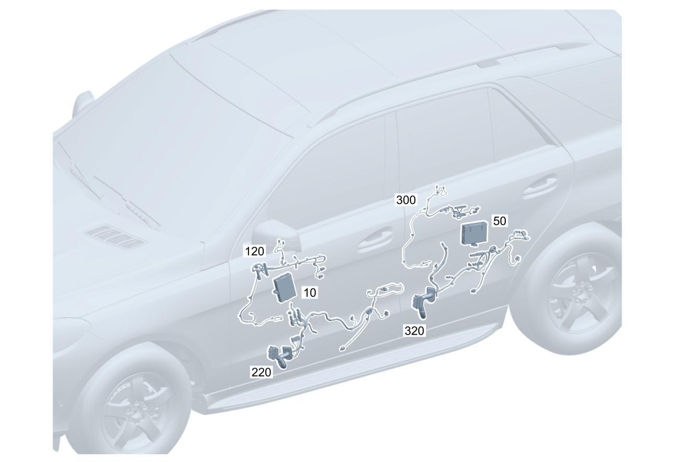

| № | Артикул | Название | Кол. | Примечание | Ограничение |
|---|---|---|---|---|---|
| 10 | A 167 900 13 18 | Блок управления (STEUERGERAET) | 1 | Блок управления двери спереди слева [672] ДЕТАЛЬ ПОСЛЕ УСТАН.ПРОВЕРИТЬ НА АКТУАЛЬНОСТЬ "ПРОШИВНОГО" ПО [697] ДЕТАЛЬ ПОСТАВЛЯЕТСЯ ТОЛЬКО/ИЛИ ТАКЖЕ КАК ЗАП.ЧАСТЬ | |
| 10 | A 167 900 36 25 | Блок управления (STEUERGERAET) | 1 | Блок управления двери спереди слева [672] ДЕТАЛЬ ПОСЛЕ УСТАН.ПРОВЕРИТЬ НА АКТУАЛЬНОСТЬ "ПРОШИВНОГО" ПО | |
| 10 | A 167 900 14 18 | Блок управления (STEUERGERAET) | 1 | Блок управления двери спереди слева [672] ДЕТАЛЬ ПОСЛЕ УСТАН.ПРОВЕРИТЬ НА АКТУАЛЬНОСТЬ "ПРОШИВНОГО" ПО [697] ДЕТАЛЬ ПОСТАВЛЯЕТСЯ ТОЛЬКО/ИЛИ ТАКЖЕ КАК ЗАП.ЧАСТЬ | (233/234/883/885/P49) |
| 10 | A 167 900 37 25 | Блок управления (STEUERGERAET) | 1 | Блок управления двери спереди слева [672] ДЕТАЛЬ ПОСЛЕ УСТАН.ПРОВЕРИТЬ НА АКТУАЛЬНОСТЬ "ПРОШИВНОГО" ПО [697] ДЕТАЛЬ ПОСТАВЛЯЕТСЯ ТОЛЬКО/ИЛИ ТАКЖЕ КАК ЗАП.ЧАСТЬ | (233/234/883/885/P49) |
| 10 | A 167 900 15 18 | Блок управления (STEUERGERAET) | 1 | Блок управления двери спереди слева [672] ДЕТАЛЬ ПОСЛЕ УСТАН.ПРОВЕРИТЬ НА АКТУАЛЬНОСТЬ "ПРОШИВНОГО" ПО [697] ДЕТАЛЬ ПОСТАВЛЯЕТСЯ ТОЛЬКО/ИЛИ ТАКЖЕ КАК ЗАП.ЧАСТЬ | (811/906/(811/906)+(233/234/883/885/P49)) |
| 10 | A 167 900 38 25 | Блок управления (STEUERGERAET) | 1 | Блок управления двери спереди слева [672] ДЕТАЛЬ ПОСЛЕ УСТАН.ПРОВЕРИТЬ НА АКТУАЛЬНОСТЬ "ПРОШИВНОГО" ПО | (811/906/(811/906)+(233/234/883/885/P49)) |
| 10 | A 167 900 99 37 | Блок управления (STEUERGERAET) | 1 | Блок управления двери спереди слева Рулевое управление: Влево [672] ДЕТАЛЬ ПОСЛЕ УСТАН.ПРОВЕРИТЬ НА АКТУАЛЬНОСТЬ "ПРОШИВНОГО" ПО | (807/808) |
| 10 | A 167 900 02 38 | Блок управления (STEUERGERAET) | 1 | Блок управления двери спереди слева Рулевое управление: Вправо [672] ДЕТАЛЬ ПОСЛЕ УСТАН.ПРОВЕРИТЬ НА АКТУАЛЬНОСТЬ "ПРОШИВНОГО" ПО | (807/808) |
| 10 | A 167 900 00 38 | Блок управления (STEUERGERAET) | 1 | Блок управления двери спереди слева Рулевое управление: Влево [672] ДЕТАЛЬ ПОСЛЕ УСТАН.ПРОВЕРИТЬ НА АКТУАЛЬНОСТЬ "ПРОШИВНОГО" ПО | (807/808)+(4B1/3B9/883/885/889/P49) |
| 10 | A 167 900 03 38 | Блок управления (STEUERGERAET) | 1 | Блок управления двери спереди слева Рулевое управление: Вправо [672] ДЕТАЛЬ ПОСЛЕ УСТАН.ПРОВЕРИТЬ НА АКТУАЛЬНОСТЬ "ПРОШИВНОГО" ПО | (807/808)+(4B1/3B9/883/885/889/P49) |
| 10 | A 167 900 01 38 | Блок управления (STEUERGERAET) | 1 | Блок управления двери спереди слева Рулевое управление: Влево [672] ДЕТАЛЬ ПОСЛЕ УСТАН.ПРОВЕРИТЬ НА АКТУАЛЬНОСТЬ "ПРОШИВНОГО" ПО | (807/808)+(811/906/((811/906)+(4B1/3B9/883/885/889/P49))) |
| 10 | A 167 900 04 38 | Блок управления (STEUERGERAET) | 1 | Блок управления двери спереди слева Рулевое управление: Вправо [672] ДЕТАЛЬ ПОСЛЕ УСТАН.ПРОВЕРИТЬ НА АКТУАЛЬНОСТЬ "ПРОШИВНОГО" ПО | (807/808)+(811/906/((811/906)+(4B1/3B9/883/885/889/P49))) |
| 10 | A 167 900 16 18 | Блок управления | 1 | Блок управления двери спереди справа [672] ДЕТАЛЬ ПОСЛЕ УСТАН.ПРОВЕРИТЬ НА АКТУАЛЬНОСТЬ "ПРОШИВНОГО" ПО | |
| 10 | A 167 900 40 25 | Блок управления (STEUERGERAET) | 1 | Блок управления двери спереди справа [672] ДЕТАЛЬ ПОСЛЕ УСТАН.ПРОВЕРИТЬ НА АКТУАЛЬНОСТЬ "ПРОШИВНОГО" ПО | |
| 10 | A 167 900 17 18 | Блок управления (STEUERGERAET) | 1 | Блок управления двери спереди справа [672] ДЕТАЛЬ ПОСЛЕ УСТАН.ПРОВЕРИТЬ НА АКТУАЛЬНОСТЬ "ПРОШИВНОГО" ПО [697] ДЕТАЛЬ ПОСТАВЛЯЕТСЯ ТОЛЬКО/ИЛИ ТАКЖЕ КАК ЗАП.ЧАСТЬ | (233/234/883/885/P49) |
| 10 | A 167 900 41 25 | Блок управления (STEUERGERAET) | 1 | Блок управления двери спереди справа [672] ДЕТАЛЬ ПОСЛЕ УСТАН.ПРОВЕРИТЬ НА АКТУАЛЬНОСТЬ "ПРОШИВНОГО" ПО [697] ДЕТАЛЬ ПОСТАВЛЯЕТСЯ ТОЛЬКО/ИЛИ ТАКЖЕ КАК ЗАП.ЧАСТЬ | (233/234/883/885/P49) |
| 10 | A 167 900 18 18 | Блок управления (STEUERGERAET) | 1 | Блок управления двери спереди справа [672] ДЕТАЛЬ ПОСЛЕ УСТАН.ПРОВЕРИТЬ НА АКТУАЛЬНОСТЬ "ПРОШИВНОГО" ПО [697] ДЕТАЛЬ ПОСТАВЛЯЕТСЯ ТОЛЬКО/ИЛИ ТАКЖЕ КАК ЗАП.ЧАСТЬ | (811/906/(811/906)+(233/234/883/885/P49)) |
| 10 | A 167 900 42 25 | Блок управления (STEUERGERAET) | 1 | Блок управления двери спереди справа [672] ДЕТАЛЬ ПОСЛЕ УСТАН.ПРОВЕРИТЬ НА АКТУАЛЬНОСТЬ "ПРОШИВНОГО" ПО [697] ДЕТАЛЬ ПОСТАВЛЯЕТСЯ ТОЛЬКО/ИЛИ ТАКЖЕ КАК ЗАП.ЧАСТЬ | (811/906/(811/906)+(233/234/883/885/P49)) |
| 10 | A 167 900 02 38 | Блок управления (STEUERGERAET) | 1 | Блок управления двери спереди справа Рулевое управление: Влево [672] ДЕТАЛЬ ПОСЛЕ УСТАН.ПРОВЕРИТЬ НА АКТУАЛЬНОСТЬ "ПРОШИВНОГО" ПО | (807/808) |
| 10 | A 167 900 99 37 | Блок управления (STEUERGERAET) | 1 | Блок управления двери спереди справа Рулевое управление: Вправо [672] ДЕТАЛЬ ПОСЛЕ УСТАН.ПРОВЕРИТЬ НА АКТУАЛЬНОСТЬ "ПРОШИВНОГО" ПО | (807/808) |
| 10 | A 167 900 03 38 | Блок управления (STEUERGERAET) | 1 | Блок управления двери спереди справа Рулевое управление: Влево [672] ДЕТАЛЬ ПОСЛЕ УСТАН.ПРОВЕРИТЬ НА АКТУАЛЬНОСТЬ "ПРОШИВНОГО" ПО | (807/808)+(4B1/3B9/883/885/889/P49) |
| 10 | A 167 900 00 38 | Блок управления (STEUERGERAET) | 1 | Блок управления двери спереди справа Рулевое управление: Вправо [672] ДЕТАЛЬ ПОСЛЕ УСТАН.ПРОВЕРИТЬ НА АКТУАЛЬНОСТЬ "ПРОШИВНОГО" ПО | (807/808)+(4B1/3B9/883/885/889/P49) |
| 10 | A 167 900 04 38 | Блок управления (STEUERGERAET) | 1 | Блок управления двери спереди справа Рулевое управление: Влево [672] ДЕТАЛЬ ПОСЛЕ УСТАН.ПРОВЕРИТЬ НА АКТУАЛЬНОСТЬ "ПРОШИВНОГО" ПО | (807/808)+(811/906/((811/906)+(4B1/3B9/883/885/889/P49))) |
| 10 | A 167 900 01 38 | Блок управления (STEUERGERAET) | 1 | Блок управления двери спереди справа Рулевое управление: Вправо [672] ДЕТАЛЬ ПОСЛЕ УСТАН.ПРОВЕРИТЬ НА АКТУАЛЬНОСТЬ "ПРОШИВНОГО" ПО | (807/808)+(811/906/((811/906)+(4B1/3B9/883/885/889/P49))) |
| 50 | A 167 900 19 18 | Блок управления | 1 | Left rear door control unit [672] ДЕТАЛЬ ПОСЛЕ УСТАН.ПРОВЕРИТЬ НА АКТУАЛЬНОСТЬ "ПРОШИВНОГО" ПО | |
| 50 | A 167 900 43 25 | Блок управления (STEUERGERAET) | 1 | Left rear door control unit [672] ДЕТАЛЬ ПОСЛЕ УСТАН.ПРОВЕРИТЬ НА АКТУАЛЬНОСТЬ "ПРОШИВНОГО" ПО | |
| 50 | A 167 900 20 18 | Блок управления (STEUERGERAET) | 1 | Left rear door control unit [672] ДЕТАЛЬ ПОСЛЕ УСТАН.ПРОВЕРИТЬ НА АКТУАЛЬНОСТЬ "ПРОШИВНОГО" ПО [697] ДЕТАЛЬ ПОСТАВЛЯЕТСЯ ТОЛЬКО/ИЛИ ТАКЖЕ КАК ЗАП.ЧАСТЬ | (872/876/883/885/903/402/452/224/567) |
| 50 | A 167 900 38 28 | Блок управления (STEUERGERAET) | 1 | Left rear door control unit [672] ДЕТАЛЬ ПОСЛЕ УСТАН.ПРОВЕРИТЬ НА АКТУАЛЬНОСТЬ "ПРОШИВНОГО" ПО | (872/876/883/885/903/402/452/224/567) |
| 50 | A 167 900 21 18 | Блок управления (STEUERGERAET) | 1 | Left rear door control unit [672] ДЕТАЛЬ ПОСЛЕ УСТАН.ПРОВЕРИТЬ НА АКТУАЛЬНОСТЬ "ПРОШИВНОГО" ПО | (297/(297)+(872/876/883/885/903/402/452/224/567)) |
| 50 | A 167 900 49 25 | Блок управления (STEUERGERAET) | 1 | Left rear door control unit [672] ДЕТАЛЬ ПОСЛЕ УСТАН.ПРОВЕРИТЬ НА АКТУАЛЬНОСТЬ "ПРОШИВНОГО" ПО | (297/(297)+(872/876/883/885/903/402/452/224/567)) |
| 50 | A 167 900 05 38 | Блок управления (STEUERGERAET) | 1 | Left rear door control unit [672] ДЕТАЛЬ ПОСЛЕ УСТАН.ПРОВЕРИТЬ НА АКТУАЛЬНОСТЬ "ПРОШИВНОГО" ПО | (807/808) |
| 50 | A 167 900 06 38 | Блок управления (STEUERGERAET) | 1 | Left rear door control unit [672] ДЕТАЛЬ ПОСЛЕ УСТАН.ПРОВЕРИТЬ НА АКТУАЛЬНОСТЬ "ПРОШИВНОГО" ПО | (872/876/883/885/889/452/567)+(807/808) |
| 50 | A 167 900 07 38 | Блок управления | 1 | Left rear door control unit [672] ДЕТАЛЬ ПОСЛЕ УСТАН.ПРОВЕРИТЬ НА АКТУАЛЬНОСТЬ "ПРОШИВНОГО" ПО | (297/(297)+(872/876/883/885/889/452/567))+(807/808) |
| 50 | A 167 900 22 18 | Блок управления | 1 | Right rear door control unit [672] ДЕТАЛЬ ПОСЛЕ УСТАН.ПРОВЕРИТЬ НА АКТУАЛЬНОСТЬ "ПРОШИВНОГО" ПО | |
| 50 | A 167 900 46 25 | Блок управления (STEUERGERAET) | 1 | Right rear door control unit [672] ДЕТАЛЬ ПОСЛЕ УСТАН.ПРОВЕРИТЬ НА АКТУАЛЬНОСТЬ "ПРОШИВНОГО" ПО | |
| 50 | A 167 900 23 18 | Блок управления (STEUERGERAET) | 1 | Right rear door control unit [672] ДЕТАЛЬ ПОСЛЕ УСТАН.ПРОВЕРИТЬ НА АКТУАЛЬНОСТЬ "ПРОШИВНОГО" ПО [697] ДЕТАЛЬ ПОСТАВЛЯЕТСЯ ТОЛЬКО/ИЛИ ТАКЖЕ КАК ЗАП.ЧАСТЬ | (872/876/883/885/903/402/452/224/567) |
| 50 | A 167 900 39 28 | Блок управления (STEUERGERAET) | 1 | Right rear door control unit [672] ДЕТАЛЬ ПОСЛЕ УСТАН.ПРОВЕРИТЬ НА АКТУАЛЬНОСТЬ "ПРОШИВНОГО" ПО | (872/876/883/885/903/402/452/224/567) |
| 50 | A 167 900 24 18 | Блок управления (STEUERGERAET) | 1 | Right rear door control unit [672] ДЕТАЛЬ ПОСЛЕ УСТАН.ПРОВЕРИТЬ НА АКТУАЛЬНОСТЬ "ПРОШИВНОГО" ПО | (297/(297)+(872/876/883/885/903/402/452/224/567)) |
| 50 | A 167 900 50 25 | Блок управления (STEUERGERAET) | 1 | Right rear door control unit [672] ДЕТАЛЬ ПОСЛЕ УСТАН.ПРОВЕРИТЬ НА АКТУАЛЬНОСТЬ "ПРОШИВНОГО" ПО | (297/(297)+(872/876/883/885/903/402/452/224/567)) |
| 50 | A 167 900 08 38 | Блок управления (STEUERGERAET) | 1 | Right rear door control unit [672] ДЕТАЛЬ ПОСЛЕ УСТАН.ПРОВЕРИТЬ НА АКТУАЛЬНОСТЬ "ПРОШИВНОГО" ПО | (807/808) |
| 50 | A 167 900 09 38 | Блок управления (STEUERGERAET) | 1 | Right rear door control unit [672] ДЕТАЛЬ ПОСЛЕ УСТАН.ПРОВЕРИТЬ НА АКТУАЛЬНОСТЬ "ПРОШИВНОГО" ПО | (872/876/883/885/889/452/567)+(807/808) |
| 50 | A 167 900 10 38 | Блок управления | 1 | Right rear door control unit [672] ДЕТАЛЬ ПОСЛЕ УСТАН.ПРОВЕРИТЬ НА АКТУАЛЬНОСТЬ "ПРОШИВНОГО" ПО | (297/(297)+(872/876/883/885/889/452/567))+(807/808) |
| 120 | A 167 540 06 28 | Электрический жгут (ELEKTRISCHER LEITUNGSSATZ) | 1 | Дверь спереди слева, блок управления к потребителю Рулевое управление: Влево | 876 |
| 120 | A 167 540 07 28 | Электрический жгут (ELEKTRISCHER LEITUNGSSATZ) | 1 | Дверь спереди слева, блок управления к потребителю Рулевое управление: Влево | (873/401/902/242)+876 |
| 120 | A 167 540 10 28 | Электрический жгут (ELEKTRISCHER LEITUNGSSATZ) | 1 | Дверь спереди слева, блок управления к потребителю Рулевое управление: Влево | 876+890 |
| 120 | A 167 540 11 28 | Электрический жгут (ELEKTRISCHER LEITUNGSSATZ) | 1 | Дверь спереди слева, блок управления к потребителю Рулевое управление: Влево | (873/401/902/242)+876+890 |
| 120 | A 167 540 65 28 | Электрический жгут (ELEKTRISCHER LEITUNGSSATZ) | 1 | Дверь спереди слева, блок управления к потребителю Рулевое управление: Влево | 876+906 |
| 120 | A 167 540 67 28 | Электрический жгут (ELEKTRISCHER LEITUNGSSATZ) | 1 | Дверь спереди слева, блок управления к потребителю Рулевое управление: Влево | 876+890+906 |
| 120 | A 167 540 58 28 | Электрический жгут (ELEKTRISCHER LEITUNGSSATZ) | 1 | Дверь спереди слева, блок управления к потребителю Рулевое управление: Вправо | 876 |
| 120 | A 167 540 59 28 | Электрический жгут (ELEKTRISCHER LEITUNGSSATZ) | 1 | Дверь спереди слева, блок управления к потребителю Рулевое управление: Вправо | 876+(873/401/902) |
| 120 | A 167 540 21 28 | Электрический жгут (ELEKTRISCHER LEITUNGSSATZ) | 1 | Дверь спереди слева, блок управления к потребителю Рулевое управление: Вправо | 876+906 |
| 120 | A 167 540 06 28 | Электрический жгут (ELEKTRISCHER LEITUNGSSATZ) | 1 | Дверь спереди справа, блок управления к потребителю Рулевое управление: Вправо | 876 |
| 120 | A 167 540 07 28 | Электрический жгут (ELEKTRISCHER LEITUNGSSATZ) | 1 | Дверь спереди справа, блок управления к потребителю Рулевое управление: Вправо | (873/401/902/241)+876 |
| 120 | A 167 540 10 28 | Электрический жгут (ELEKTRISCHER LEITUNGSSATZ) | 1 | Дверь спереди справа, блок управления к потребителю Рулевое управление: Вправо | 876+890 |
| 120 | A 167 540 11 28 | Электрический жгут (ELEKTRISCHER LEITUNGSSATZ) | 1 | Дверь спереди справа, блок управления к потребителю Рулевое управление: Вправо | (873/401/902/241)+876+890 |
| 120 | A 167 540 65 28 | Электрический жгут (ELEKTRISCHER LEITUNGSSATZ) | 1 | Дверь спереди справа, блок управления к потребителю Рулевое управление: Вправо | 876+906 |
| 120 | A 167 540 67 28 | Электрический жгут (ELEKTRISCHER LEITUNGSSATZ) | 1 | Дверь спереди справа, блок управления к потребителю Рулевое управление: Вправо | 876+890+906 |
| 120 | A 167 540 58 28 | Электрический жгут (ELEKTRISCHER LEITUNGSSATZ) | 1 | Дверь спереди справа, блок управления к потребителю Рулевое управление: Влево | 876 |
| 120 | A 167 540 59 28 | Электрический жгут (ELEKTRISCHER LEITUNGSSATZ) | 1 | Дверь спереди справа, блок управления к потребителю Рулевое управление: Влево | 876+(873/401/902) |
| 120 | A 167 540 62 28 | Электрический жгут (ELEKTRISCHER LEITUNGSSATZ) | 1 | Дверь спереди справа, блок управления к потребителю Рулевое управление: Влево | (460/494/M036)+876 |
| 120 | A 167 540 63 28 | Электрический жгут (ELEKTRISCHER LEITUNGSSATZ) | 1 | Дверь спереди справа, блок управления к потребителю Рулевое управление: Влево | (460/494/M036)+876+(873/401/902) |
| 120 | A 167 540 21 28 | Электрический жгут (ELEKTRISCHER LEITUNGSSATZ) | 1 | Дверь спереди справа, блок управления к потребителю Рулевое управление: Влево | 876+906 |
| 120 | A 167 540 23 28 | Электрический жгут (ELEKTRISCHER LEITUNGSSATZ) | 1 | Дверь спереди справа, блок управления к потребителю Рулевое управление: Влево | (460/494/M036)+876+906 |
| 220 | A 167 540 59 37 | Электрический жгут (ELEKTRISCHER LEITUNGSSATZ) | 1 | Дверь спереди слева, разъем двери к блоку управления и потребителю Рулевое управление: Вправо | |
| 220 | A 167 540 10 45 | Электрический жгут (ELEKTRISCHER LEITUNGSSATZ) | 1 | Дверь спереди слева, разъем двери к блоку управления и потребителю Рулевое управление: Вправо | 889 |
| 220 | A 167 540 61 37 | Электрический жгут (ELEKTRISCHER LEITUNGSSATZ) | 1 | Дверь спереди слева, разъем двери к блоку управления и потребителю Рулевое управление: Вправо | 883 |
| 220 | A 167 540 11 45 | Электрический жгут (ELEKTRISCHER LEITUNGSSATZ) | 1 | Дверь спереди слева, разъем двери к блоку управления и потребителю Рулевое управление: Вправо | 889+883 |
| 220 | A 167 540 63 37 | Электрический жгут (ELEKTRISCHER LEITUNGSSATZ) | 1 | Дверь спереди слева, разъем двери к блоку управления и потребителю Рулевое управление: Вправо | 501 |
| 220 | A 167 540 12 45 | Электрический жгут (ELEKTRISCHER LEITUNGSSATZ) | 1 | Дверь спереди слева, разъем двери к блоку управления и потребителю Рулевое управление: Вправо | 889+501 |
| 220 | A 167 540 65 37 | Электрический жгут (ELEKTRISCHER LEITUNGSSATZ) | 1 | Дверь спереди слева, разъем двери к блоку управления и потребителю Рулевое управление: Вправо | 883+501 |
| 220 | A 167 540 13 45 | Электрический жгут (ELEKTRISCHER LEITUNGSSATZ) | 1 | Дверь спереди слева, разъем двери к блоку управления и потребителю Рулевое управление: Вправо | 889+883+501 |
| 220 | A 167 540 67 37 | Электрический жгут (ELEKTRISCHER LEITUNGSSATZ) | 1 | Дверь спереди слева, разъем двери к блоку управления и потребителю Рулевое управление: Вправо | 811 |
| 220 | A 167 540 14 45 | Электрический жгут (ELEKTRISCHER LEITUNGSSATZ) | 1 | Дверь спереди слева, разъем двери к блоку управления и потребителю Рулевое управление: Вправо | 889+811 |
| 220 | A 167 540 69 37 | Электрический жгут (ELEKTRISCHER LEITUNGSSATZ) | 1 | Дверь спереди слева, разъем двери к блоку управления и потребителю Рулевое управление: Вправо | 883+811 |
| 220 | A 167 540 15 45 | Электрический жгут (ELEKTRISCHER LEITUNGSSATZ) | 1 | Дверь спереди слева, разъем двери к блоку управления и потребителю Рулевое управление: Вправо | 889+883+811 |
| 220 | A 167 540 71 37 | Электрический жгут (ELEKTRISCHER LEITUNGSSATZ) | 1 | Дверь спереди слева, разъем двери к блоку управления и потребителю Рулевое управление: Вправо | 501+811 |
| 220 | A 167 540 16 45 | Электрический жгут (ELEKTRISCHER LEITUNGSSATZ) | 1 | Дверь спереди слева, разъем двери к блоку управления и потребителю Рулевое управление: Вправо | 889+501+811 |
| 220 | A 167 540 73 37 | Электрический жгут (ELEKTRISCHER LEITUNGSSATZ) | 1 | Дверь спереди слева, разъем двери к блоку управления и потребителю Рулевое управление: Вправо | 883+501+811 |
| 220 | A 167 540 17 45 | Электрический жгут (ELEKTRISCHER LEITUNGSSATZ) | 1 | Дверь спереди слева, разъем двери к блоку управления и потребителю Рулевое управление: Вправо | 889+883+501+811 |
| 220 | A 167 540 37 61 | Электрический жгут (ELEKTRISCHER LEITUNGSSATZ) | 1 | Дверь спереди слева, разъем двери к блоку управления и потребителю Рулевое управление: Вправо | 803 |
| 220 | A 167 540 37 61 | Электрический жгут (ELEKTRISCHER LEITUNGSSATZ) | 1 | Дверь спереди слева, разъем двери к блоку управления и потребителю Рулевое управление: Вправо | |
| 220 | A 167 540 38 61 | Электрический жгут (ELEKTRISCHER LEITUNGSSATZ) | 1 | Дверь спереди слева, разъем двери к блоку управления и потребителю Рулевое управление: Вправо | 803+889 |
| 220 | A 167 540 38 61 | Электрический жгут (ELEKTRISCHER LEITUNGSSATZ) | 1 | Дверь спереди слева, разъем двери к блоку управления и потребителю Рулевое управление: Вправо | 889 |
| 220 | A 167 540 39 61 | Электрический жгут | 1 | Дверь спереди слева, разъем двери к блоку управления и потребителю Рулевое управление: Вправо | 803+883 |
| 220 | A 167 540 39 61 | Электрический жгут | 1 | Дверь спереди слева, разъем двери к блоку управления и потребителю Рулевое управление: Вправо | 883 |
| 220 | A 167 540 40 61 | Электрический жгут | 1 | Дверь спереди слева, разъем двери к блоку управления и потребителю Рулевое управление: Вправо | 803+889+883 |
| 220 | A 167 540 40 61 | Электрический жгут | 1 | Дверь спереди слева, разъем двери к блоку управления и потребителю Рулевое управление: Вправо | 889+883 |
| 220 | A 167 540 41 61 | Электрический жгут (ELEKTRISCHER LEITUNGSSATZ) | 1 | Дверь спереди слева, разъем двери к блоку управления и потребителю Рулевое управление: Вправо | 803+501 |
| 220 | A 167 540 41 61 | Электрический жгут (ELEKTRISCHER LEITUNGSSATZ) | 1 | Дверь спереди слева, разъем двери к блоку управления и потребителю Рулевое управление: Вправо | 501 |
| 220 | A 167 540 42 61 | Электрический жгут (ELEKTRISCHER LEITUNGSSATZ) | 1 | Дверь спереди слева, разъем двери к блоку управления и потребителю Рулевое управление: Вправо | 803+889+501 |
| 220 | A 167 540 42 61 | Электрический жгут (ELEKTRISCHER LEITUNGSSATZ) | 1 | Дверь спереди слева, разъем двери к блоку управления и потребителю Рулевое управление: Вправо | 889+501 |
| 220 | A 167 540 43 61 | Электрический жгут (ELEKTRISCHER LEITUNGSSATZ) | 1 | Дверь спереди слева, разъем двери к блоку управления и потребителю Рулевое управление: Вправо | 803+883+501 |
| 220 | A 167 540 43 61 | Электрический жгут (ELEKTRISCHER LEITUNGSSATZ) | 1 | Дверь спереди слева, разъем двери к блоку управления и потребителю Рулевое управление: Вправо | 883+501 |
| 220 | A 167 540 44 61 | Электрический жгут (ELEKTRISCHER LEITUNGSSATZ) | 1 | Дверь спереди слева, разъем двери к блоку управления и потребителю Рулевое управление: Вправо | 803+889+883+501 |
| 220 | A 167 540 44 61 | Электрический жгут (ELEKTRISCHER LEITUNGSSATZ) | 1 | Дверь спереди слева, разъем двери к блоку управления и потребителю Рулевое управление: Вправо | 889+883+501 |
| 220 | A 167 540 45 61 | Электрический жгут | 1 | Дверь спереди слева, разъем двери к блоку управления и потребителю Рулевое управление: Вправо | 803+811 |
| 220 | A 167 540 45 61 | Электрический жгут | 1 | Дверь спереди слева, разъем двери к блоку управления и потребителю Рулевое управление: Вправо | 811 |
| 220 | A 167 540 46 61 | Электрический жгут | 1 | Дверь спереди слева, разъем двери к блоку управления и потребителю Рулевое управление: Вправо | 803+889+811 |
| 220 | A 167 540 46 61 | Электрический жгут | 1 | Дверь спереди слева, разъем двери к блоку управления и потребителю Рулевое управление: Вправо | 889+811 |
| 220 | A 167 540 47 61 | Электрический жгут | 1 | Дверь спереди слева, разъем двери к блоку управления и потребителю Рулевое управление: Вправо | 803+883+811 |
| 220 | A 167 540 47 61 | Электрический жгут | 1 | Дверь спереди слева, разъем двери к блоку управления и потребителю Рулевое управление: Вправо | 883+811 |
| 220 | A 167 540 48 61 | Электрический жгут | 1 | Дверь спереди слева, разъем двери к блоку управления и потребителю Рулевое управление: Вправо | 803+889+883+811 |
| 220 | A 167 540 48 61 | Электрический жгут | 1 | Дверь спереди слева, разъем двери к блоку управления и потребителю Рулевое управление: Вправо | 889+883+811 |
| 220 | A 167 540 49 61 | Электрический жгут (ELEKTRISCHER LEITUNGSSATZ) | 1 | Дверь спереди слева, разъем двери к блоку управления и потребителю Рулевое управление: Вправо | 803+501+811 |
| 220 | A 167 540 49 61 | Электрический жгут (ELEKTRISCHER LEITUNGSSATZ) | 1 | Дверь спереди слева, разъем двери к блоку управления и потребителю Рулевое управление: Вправо | 501+811 |
| 220 | A 167 540 50 61 | Электрический жгут (ELEKTRISCHER LEITUNGSSATZ) | 1 | Дверь спереди слева, разъем двери к блоку управления и потребителю Рулевое управление: Вправо | 803+889+501+811 |
| 220 | A 167 540 50 61 | Электрический жгут (ELEKTRISCHER LEITUNGSSATZ) | 1 | Дверь спереди слева, разъем двери к блоку управления и потребителю Рулевое управление: Вправо | 889+501+811 |
| 220 | A 167 540 51 61 | Электрический жгут | 1 | Дверь спереди слева, разъем двери к блоку управления и потребителю Рулевое управление: Вправо | 803+883+501+811 |
| 220 | A 167 540 51 61 | Электрический жгут | 1 | Дверь спереди слева, разъем двери к блоку управления и потребителю Рулевое управление: Вправо | 883+501+811 |
| 220 | A 167 540 52 61 | Электрический жгут (ELEKTRISCHER LEITUNGSSATZ) | 1 | Дверь спереди слева, разъем двери к блоку управления и потребителю Рулевое управление: Вправо | 803+889+883+501+811 |
| 220 | A 167 540 52 61 | Электрический жгут (ELEKTRISCHER LEITUNGSSATZ) | 1 | Дверь спереди слева, разъем двери к блоку управления и потребителю Рулевое управление: Вправо | 889+883+501+811 |
| 220 | A 167 540 94 54 | Электрический жгут (ELEKTRISCHER LEITUNGSSATZ) | 1 | Дверь спереди слева, разъем двери к блоку управления и потребителю Рулевое управление: Вправо | 501+(803+053/804/805/806) |
| 220 | A 167 540 94 54 | Электрический жгут (ELEKTRISCHER LEITUNGSSATZ) | 1 | Дверь спереди слева, разъем двери к блоку управления и потребителю Рулевое управление: Вправо | 501 |
| 220 | A 167 540 95 54 | Электрический жгут (ELEKTRISCHER LEITUNGSSATZ) | 1 | Дверь спереди слева, разъем двери к блоку управления и потребителю Рулевое управление: Вправо | 889+501+(803+053/804/805/806) |
| 220 | A 167 540 95 54 | Электрический жгут (ELEKTRISCHER LEITUNGSSATZ) | 1 | Дверь спереди слева, разъем двери к блоку управления и потребителю Рулевое управление: Вправо | 889+501 |
| 220 | A 167 540 96 54 | Электрический жгут (ELEKTRISCHER LEITUNGSSATZ) | 1 | Дверь спереди слева, разъем двери к блоку управления и потребителю Рулевое управление: Вправо | 883+501+(803+053/804/805/806) |
| 220 | A 167 540 96 54 | Электрический жгут (ELEKTRISCHER LEITUNGSSATZ) | 1 | Дверь спереди слева, разъем двери к блоку управления и потребителю Рулевое управление: Вправо | 883+501 |
| 220 | A 167 540 97 54 | Электрический жгут (ELEKTRISCHER LEITUNGSSATZ) | 1 | Дверь спереди слева, разъем двери к блоку управления и потребителю Рулевое управление: Вправо | 889+883+501+(803+053/804/805/806) |
| 220 | A 167 540 97 54 | Электрический жгут (ELEKTRISCHER LEITUNGSSATZ) | 1 | Дверь спереди слева, разъем двери к блоку управления и потребителю Рулевое управление: Вправо | 889+883+501 |
| 220 | A 167 540 98 54 | Электрический жгут | 1 | Дверь спереди слева, разъем двери к блоку управления и потребителю Рулевое управление: Вправо | 501+811+(803+053/804/805/806) |
| 220 | A 167 540 98 54 | Электрический жгут | 1 | Дверь спереди слева, разъем двери к блоку управления и потребителю Рулевое управление: Вправо | 501+811 |
| 220 | A 167 540 99 54 | Электрический жгут | 1 | Дверь спереди слева, разъем двери к блоку управления и потребителю Рулевое управление: Вправо | 889+501+811+(803+053/804/805/806) |
| 220 | A 167 540 99 54 | Электрический жгут | 1 | Дверь спереди слева, разъем двери к блоку управления и потребителю Рулевое управление: Вправо | 889+501+811 |
| 220 | A 167 540 00 55 | Электрический жгут | 1 | Дверь спереди слева, разъем двери к блоку управления и потребителю Рулевое управление: Вправо | 883+501+811+(803+053/804/805/806) |
| 220 | A 167 540 00 55 | Электрический жгут | 1 | Дверь спереди слева, разъем двери к блоку управления и потребителю Рулевое управление: Вправо | 883+501+811 |
| 220 | A 167 540 01 55 | Электрический жгут (ELEKTRISCHER LEITUNGSSATZ) | 1 | Дверь спереди слева, разъем двери к блоку управления и потребителю Рулевое управление: Вправо | 889+883+501+811+(803+053/804/805/806) |
| 220 | A 167 540 01 55 | Электрический жгут (ELEKTRISCHER LEITUNGSSATZ) | 1 | Дверь спереди слева, разъем двери к блоку управления и потребителю Рулевое управление: Вправо | 889+883+501+811 |
| 220 | A 167 540 37 61 | Электрический жгут (ELEKTRISCHER LEITUNGSSATZ) | 1 | Дверь спереди слева, разъем двери к блоку управления и потребителю Рулевое управление: Вправо | (803+053/804/805/806) |
| 220 | A 167 540 37 61 | Электрический жгут (ELEKTRISCHER LEITUNGSSATZ) | 1 | Дверь спереди слева, разъем двери к блоку управления и потребителю Рулевое управление: Вправо | |
| 220 | A 167 540 38 61 | Электрический жгут (ELEKTRISCHER LEITUNGSSATZ) | 1 | Дверь спереди слева, разъем двери к блоку управления и потребителю Рулевое управление: Вправо | (803+053/804/805/806)+889 |
| 220 | A 167 540 38 61 | Электрический жгут (ELEKTRISCHER LEITUNGSSATZ) | 1 | Дверь спереди слева, разъем двери к блоку управления и потребителю Рулевое управление: Вправо | 889 |
| 220 | A 167 540 39 61 | Электрический жгут | 1 | Дверь спереди слева, разъем двери к блоку управления и потребителю Рулевое управление: Вправо | (803+053/804/805/806)+883 |
| 220 | A 167 540 39 61 | Электрический жгут | 1 | Дверь спереди слева, разъем двери к блоку управления и потребителю Рулевое управление: Вправо | 883 |
| 220 | A 167 540 40 61 | Электрический жгут | 1 | Дверь спереди слева, разъем двери к блоку управления и потребителю Рулевое управление: Вправо | (803+053/804/805/806)+889+883 |
| 220 | A 167 540 40 61 | Электрический жгут | 1 | Дверь спереди слева, разъем двери к блоку управления и потребителю Рулевое управление: Вправо | 889+883 |
| 220 | A 167 540 45 61 | Электрический жгут | 1 | Дверь спереди слева, разъем двери к блоку управления и потребителю Рулевое управление: Вправо | (803+053/804/805/806)+811 |
| 220 | A 167 540 45 61 | Электрический жгут | 1 | Дверь спереди слева, разъем двери к блоку управления и потребителю Рулевое управление: Вправо | 811 |
| 220 | A 167 540 46 61 | Электрический жгут | 1 | Дверь спереди слева, разъем двери к блоку управления и потребителю Рулевое управление: Вправо | (803+053/804/805/806)+889+811 |
| 220 | A 167 540 46 61 | Электрический жгут | 1 | Дверь спереди слева, разъем двери к блоку управления и потребителю Рулевое управление: Вправо | 889+811 |
| 220 | A 167 540 47 61 | Электрический жгут | 1 | Дверь спереди слева, разъем двери к блоку управления и потребителю Рулевое управление: Вправо | (803+053/804/805/806)+883+811 |
| 220 | A 167 540 47 61 | Электрический жгут | 1 | Дверь спереди слева, разъем двери к блоку управления и потребителю Рулевое управление: Вправо | 883+811 |
| 220 | A 167 540 48 61 | Электрический жгут | 1 | Дверь спереди слева, разъем двери к блоку управления и потребителю Рулевое управление: Вправо | (803+053/804/805/806)+889+883+811 |
| 220 | A 167 540 48 61 | Электрический жгут | 1 | Дверь спереди слева, разъем двери к блоку управления и потребителю Рулевое управление: Вправо | 889+883+811 |
| 220 | A 167 540 75 37 | Электрический жгут (ELEKTRISCHER LEITUNGSSATZ) | 1 | Дверь спереди слева, разъем двери к блоку управления и потребителю Рулевое управление: Влево | |
| 220 | A 167 540 18 45 | Электрический жгут (ELEKTRISCHER LEITUNGSSATZ) | 1 | Дверь спереди слева, разъем двери к блоку управления и потребителю Рулевое управление: Влево | 889 |
| 220 | A 167 540 77 37 | Электрический жгут (ELEKTRISCHER LEITUNGSSATZ) | 1 | Дверь спереди слева, разъем двери к блоку управления и потребителю Рулевое управление: Влево | 883 |
| 220 | A 167 540 19 45 | Электрический жгут (ELEKTRISCHER LEITUNGSSATZ) | 1 | Дверь спереди слева, разъем двери к блоку управления и потребителю Рулевое управление: Влево | 889+883 |
| 220 | A 167 540 79 37 | Электрический жгут (ELEKTRISCHER LEITUNGSSATZ) | 1 | Дверь спереди слева, разъем двери к блоку управления и потребителю Рулевое управление: Влево | 501 |
| 220 | A 167 540 20 45 | Электрический жгут (ELEKTRISCHER LEITUNGSSATZ) | 1 | Дверь спереди слева, разъем двери к блоку управления и потребителю Рулевое управление: Влево | 889+501 |
| 220 | A 167 540 81 37 | Электрический жгут (ELEKTRISCHER LEITUNGSSATZ) | 1 | Дверь спереди слева, разъем двери к блоку управления и потребителю Рулевое управление: Влево | 883+501 |
| 220 | A 167 540 21 45 | Электрический жгут (ELEKTRISCHER LEITUNGSSATZ) | 1 | Дверь спереди слева, разъем двери к блоку управления и потребителю Рулевое управление: Влево | 889+883+501 |
| 220 | A 167 540 83 37 | Электрический жгут (ELEKTRISCHER LEITUNGSSATZ) | 1 | Дверь спереди слева, разъем двери к блоку управления и потребителю Рулевое управление: Влево | 811 |
| 220 | A 167 540 22 45 | Электрический жгут (ELEKTRISCHER LEITUNGSSATZ) | 1 | Дверь спереди слева, разъем двери к блоку управления и потребителю Рулевое управление: Влево | 889+811 |
| 220 | A 167 540 85 37 | Электрический жгут (ELEKTRISCHER LEITUNGSSATZ) | 1 | Дверь спереди слева, разъем двери к блоку управления и потребителю Рулевое управление: Влево | 883+811 |
| 220 | A 167 540 23 45 | Электрический жгут (ELEKTRISCHER LEITUNGSSATZ) | 1 | Дверь спереди слева, разъем двери к блоку управления и потребителю Рулевое управление: Влево | 889+883+811 |
| 220 | A 167 540 87 37 | Электрический жгут (ELEKTRISCHER LEITUNGSSATZ) | 1 | Дверь спереди слева, разъем двери к блоку управления и потребителю Рулевое управление: Влево | 501+811 |
| 220 | A 167 540 24 45 | Электрический жгут (ELEKTRISCHER LEITUNGSSATZ) | 1 | Дверь спереди слева, разъем двери к блоку управления и потребителю Рулевое управление: Влево | 889+501+811 |
| 220 | A 167 540 89 37 | Электрический жгут (ELEKTRISCHER LEITUNGSSATZ) | 1 | Дверь спереди слева, разъем двери к блоку управления и потребителю Рулевое управление: Влево | 883+501+811 |
| 220 | A 167 540 25 45 | Электрический жгут (ELEKTRISCHER LEITUNGSSATZ) | 1 | Дверь спереди слева, разъем двери к блоку управления и потребителю Рулевое управление: Влево | 889+883+501+811 |
| 220 | A 167 540 53 61 | Электрический жгут (ELEKTRISCHER LEITUNGSSATZ) | 1 | Дверь спереди слева, разъем двери к блоку управления и потребителю Рулевое управление: Влево | 803 |
| 220 | A 167 540 53 61 | Электрический жгут (ELEKTRISCHER LEITUNGSSATZ) | 1 | Дверь спереди слева, разъем двери к блоку управления и потребителю Рулевое управление: Влево | |
| 220 | A 167 540 54 61 | Электрический жгут (ELEKTRISCHER LEITUNGSSATZ) | 1 | Дверь спереди слева, разъем двери к блоку управления и потребителю Рулевое управление: Влево | 803+889 |
| 220 | A 167 540 54 61 | Электрический жгут (ELEKTRISCHER LEITUNGSSATZ) | 1 | Дверь спереди слева, разъем двери к блоку управления и потребителю Рулевое управление: Влево | 889 |
| 220 | A 167 540 55 61 | Электрический жгут | 1 | Дверь спереди слева, разъем двери к блоку управления и потребителю Рулевое управление: Влево | 803+883 |
| 220 | A 167 540 55 61 | Электрический жгут | 1 | Дверь спереди слева, разъем двери к блоку управления и потребителю Рулевое управление: Влево | 883 |
| 220 | A 167 540 56 61 | Электрический жгут (ELEKTRISCHER LEITUNGSSATZ) | 1 | Дверь спереди слева, разъем двери к блоку управления и потребителю Рулевое управление: Влево | 803+889+883 |
| 220 | A 167 540 56 61 | Электрический жгут (ELEKTRISCHER LEITUNGSSATZ) | 1 | Дверь спереди слева, разъем двери к блоку управления и потребителю Рулевое управление: Влево | 889+883 |
| 220 | A 167 540 57 61 | Электрический жгут (ELEKTRISCHER LEITUNGSSATZ) | 1 | Дверь спереди слева, разъем двери к блоку управления и потребителю Рулевое управление: Влево | 803+501 |
| 220 | A 167 540 57 61 | Электрический жгут (ELEKTRISCHER LEITUNGSSATZ) | 1 | Дверь спереди слева, разъем двери к блоку управления и потребителю Рулевое управление: Влево | 501 |
| 220 | A 167 540 58 61 | Электрический жгут (ELEKTRISCHER LEITUNGSSATZ) | 1 | Дверь спереди слева, разъем двери к блоку управления и потребителю Рулевое управление: Влево | 803+889+501 |
| 220 | A 167 540 58 61 | Электрический жгут (ELEKTRISCHER LEITUNGSSATZ) | 1 | Дверь спереди слева, разъем двери к блоку управления и потребителю Рулевое управление: Влево | 889+501 |
| 220 | A 167 540 59 61 | Электрический жгут (ELEKTRISCHER LEITUNGSSATZ) | 1 | Дверь спереди слева, разъем двери к блоку управления и потребителю Рулевое управление: Влево | 803+883+501 |
| 220 | A 167 540 59 61 | Электрический жгут (ELEKTRISCHER LEITUNGSSATZ) | 1 | Дверь спереди слева, разъем двери к блоку управления и потребителю Рулевое управление: Влево | 883+501 |
| 220 | A 167 540 60 61 | Электрический жгут (ELEKTRISCHER LEITUNGSSATZ) | 1 | Дверь спереди слева, разъем двери к блоку управления и потребителю Рулевое управление: Влево | 803+889+883+501 |
| 220 | A 167 540 60 61 | Электрический жгут (ELEKTRISCHER LEITUNGSSATZ) | 1 | Дверь спереди слева, разъем двери к блоку управления и потребителю Рулевое управление: Влево | 889+883+501 |
| 220 | A 167 540 61 61 | Электрический жгут | 1 | Дверь спереди слева, разъем двери к блоку управления и потребителю Рулевое управление: Влево | 803+811 |
| 220 | A 167 540 61 61 | Электрический жгут | 1 | Дверь спереди слева, разъем двери к блоку управления и потребителю Рулевое управление: Влево | 811 |
| 220 | A 167 540 62 61 | Электрический жгут | 1 | Дверь спереди слева, разъем двери к блоку управления и потребителю Рулевое управление: Влево | 803+889+811 |
| 220 | A 167 540 62 61 | Электрический жгут | 1 | Дверь спереди слева, разъем двери к блоку управления и потребителю Рулевое управление: Влево | 889+811 |
| 220 | A 167 540 63 61 | Электрический жгут | 1 | Дверь спереди слева, разъем двери к блоку управления и потребителю Рулевое управление: Влево | 803+883+811 |
| 220 | A 167 540 63 61 | Электрический жгут | 1 | Дверь спереди слева, разъем двери к блоку управления и потребителю Рулевое управление: Влево | 883+811 |
| 220 | A 167 540 64 61 | Электрический жгут | 1 | Дверь спереди слева, разъем двери к блоку управления и потребителю Рулевое управление: Влево | 803+889+883+811 |
| 220 | A 167 540 64 61 | Электрический жгут | 1 | Дверь спереди слева, разъем двери к блоку управления и потребителю Рулевое управление: Влево | 889+883+811 |
| 220 | A 167 540 65 61 | Электрический жгут | 1 | Дверь спереди слева, разъем двери к блоку управления и потребителю Рулевое управление: Влево | 803+501+811 |
| 220 | A 167 540 65 61 | Электрический жгут | 1 | Дверь спереди слева, разъем двери к блоку управления и потребителю Рулевое управление: Влево | 501+811 |
| 220 | A 167 540 66 61 | Электрический жгут (ELEKTRISCHER LEITUNGSSATZ) | 1 | Дверь спереди слева, разъем двери к блоку управления и потребителю Рулевое управление: Влево | 803+889+501+811 |
| 220 | A 167 540 66 61 | Электрический жгут (ELEKTRISCHER LEITUNGSSATZ) | 1 | Дверь спереди слева, разъем двери к блоку управления и потребителю Рулевое управление: Влево | 889+501+811 |
| 220 | A 167 540 67 61 | Электрический жгут | 1 | Дверь спереди слева, разъем двери к блоку управления и потребителю Рулевое управление: Влево | 803+883+501+811 |
| 220 | A 167 540 67 61 | Электрический жгут | 1 | Дверь спереди слева, разъем двери к блоку управления и потребителю Рулевое управление: Влево | 883+501+811 |
| 220 | A 167 540 68 61 | Электрический жгут (ELEKTRISCHER LEITUNGSSATZ) | 1 | Дверь спереди слева, разъем двери к блоку управления и потребителю Рулевое управление: Влево | 803+889+883+501+811 |
| 220 | A 167 540 68 61 | Электрический жгут (ELEKTRISCHER LEITUNGSSATZ) | 1 | Дверь спереди слева, разъем двери к блоку управления и потребителю Рулевое управление: Влево | 889+883+501+811 |
| 220 | A 167 540 02 55 | Электрический жгут (ELEKTRISCHER LEITUNGSSATZ) | 1 | Дверь спереди слева, разъем двери к блоку управления и потребителю Рулевое управление: Влево | 501+(803+053/804/805/806) |
| 220 | A 167 540 02 55 | Электрический жгут (ELEKTRISCHER LEITUNGSSATZ) | 1 | Дверь спереди слева, разъем двери к блоку управления и потребителю Рулевое управление: Влево | 501 |
| 220 | A 167 540 03 55 | Электрический жгут (ELEKTRISCHER LEITUNGSSATZ) | 1 | Дверь спереди слева, разъем двери к блоку управления и потребителю Рулевое управление: Влево | 889+501+(803+053/804/805/806) |
| 220 | A 167 540 03 55 | Электрический жгут (ELEKTRISCHER LEITUNGSSATZ) | 1 | Дверь спереди слева, разъем двери к блоку управления и потребителю Рулевое управление: Влево | 889+501 |
| 220 | A 167 540 04 55 | Электрический жгут | 1 | Дверь спереди слева, разъем двери к блоку управления и потребителю Рулевое управление: Влево | 883+501+(803+053/804/805/806) |
| 220 | A 167 540 04 55 | Электрический жгут | 1 | Дверь спереди слева, разъем двери к блоку управления и потребителю Рулевое управление: Влево | 883+501 |
| 220 | A 167 540 05 55 | Электрический жгут (ELEKTRISCHER LEITUNGSSATZ) | 1 | Дверь спереди слева, разъем двери к блоку управления и потребителю Рулевое управление: Влево | 889+883+501+(803+053/804/805/806) |
| 220 | A 167 540 05 55 | Электрический жгут (ELEKTRISCHER LEITUNGSSATZ) | 1 | Дверь спереди слева, разъем двери к блоку управления и потребителю Рулевое управление: Влево | 889+883+501 |
| 220 | A 167 540 06 55 | Электрический жгут | 1 | Дверь спереди слева, разъем двери к блоку управления и потребителю Рулевое управление: Влево | 501+811+(803+053/804/805/806) |
| 220 | A 167 540 06 55 | Электрический жгут | 1 | Дверь спереди слева, разъем двери к блоку управления и потребителю Рулевое управление: Влево | 501+811 |
| 220 | A 167 540 07 55 | Электрический жгут | 1 | Дверь спереди слева, разъем двери к блоку управления и потребителю Рулевое управление: Влево | 889+501+811+(803+053/804/805/806) |
| 220 | A 167 540 07 55 | Электрический жгут | 1 | Дверь спереди слева, разъем двери к блоку управления и потребителю Рулевое управление: Влево | 889+501+811 |
| 220 | A 167 540 08 55 | Электрический жгут | 1 | Дверь спереди слева, разъем двери к блоку управления и потребителю Рулевое управление: Влево | 883+501+811+(803+053/804/805/806) |
| 220 | A 167 540 08 55 | Электрический жгут | 1 | Дверь спереди слева, разъем двери к блоку управления и потребителю Рулевое управление: Влево | 883+501+811 |
| 220 | A 167 540 09 55 | Электрический жгут (ELEKTRISCHER LEITUNGSSATZ) | 1 | Дверь спереди слева, разъем двери к блоку управления и потребителю Рулевое управление: Влево | 889+883+501+811+(803+053/804/805/806) |
| 220 | A 167 540 09 55 | Электрический жгут (ELEKTRISCHER LEITUNGSSATZ) | 1 | Дверь спереди слева, разъем двери к блоку управления и потребителю Рулевое управление: Влево | 889+883+501+811 |
| 220 | A 167 540 53 61 | Электрический жгут (ELEKTRISCHER LEITUNGSSATZ) | 1 | Дверь спереди слева, разъем двери к блоку управления и потребителю Рулевое управление: Влево | (803+053/804/805/806) |
| 220 | A 167 540 53 61 | Электрический жгут (ELEKTRISCHER LEITUNGSSATZ) | 1 | Дверь спереди слева, разъем двери к блоку управления и потребителю Рулевое управление: Влево | |
| 220 | A 167 540 54 61 | Электрический жгут (ELEKTRISCHER LEITUNGSSATZ) | 1 | Дверь спереди слева, разъем двери к блоку управления и потребителю Рулевое управление: Влево | (803+053/804/805/806)+889 |
| 220 | A 167 540 54 61 | Электрический жгут (ELEKTRISCHER LEITUNGSSATZ) | 1 | Дверь спереди слева, разъем двери к блоку управления и потребителю Рулевое управление: Влево | 889 |
| 220 | A 167 540 55 61 | Электрический жгут | 1 | Дверь спереди слева, разъем двери к блоку управления и потребителю Рулевое управление: Влево | (803+053/804/805/806)+883 |
| 220 | A 167 540 55 61 | Электрический жгут | 1 | Дверь спереди слева, разъем двери к блоку управления и потребителю Рулевое управление: Влево | 883 |
| 220 | A 167 540 56 61 | Электрический жгут (ELEKTRISCHER LEITUNGSSATZ) | 1 | Дверь спереди слева, разъем двери к блоку управления и потребителю Рулевое управление: Влево | (803+053/804/805/806)+889+883 |
| 220 | A 167 540 56 61 | Электрический жгут (ELEKTRISCHER LEITUNGSSATZ) | 1 | Дверь спереди слева, разъем двери к блоку управления и потребителю Рулевое управление: Влево | 889+883 |
| 220 | A 167 540 61 61 | Электрический жгут | 1 | Дверь спереди слева, разъем двери к блоку управления и потребителю Рулевое управление: Влево | (803+053/804/805/806)+811 |
| 220 | A 167 540 61 61 | Электрический жгут | 1 | Дверь спереди слева, разъем двери к блоку управления и потребителю Рулевое управление: Влево | 811 |
| 220 | A 167 540 62 61 | Электрический жгут | 1 | Дверь спереди слева, разъем двери к блоку управления и потребителю Рулевое управление: Влево | (803+053/804/805/806)+889+811 |
| 220 | A 167 540 62 61 | Электрический жгут | 1 | Дверь спереди слева, разъем двери к блоку управления и потребителю Рулевое управление: Влево | 889+811 |
| 220 | A 167 540 63 61 | Электрический жгут | 1 | Дверь спереди слева, разъем двери к блоку управления и потребителю Рулевое управление: Влево | (803+053/804/805/806)+883+811 |
| 220 | A 167 540 63 61 | Электрический жгут | 1 | Дверь спереди слева, разъем двери к блоку управления и потребителю Рулевое управление: Влево | 883+811 |
| 220 | A 167 540 64 61 | Электрический жгут | 1 | Дверь спереди слева, разъем двери к блоку управления и потребителю Рулевое управление: Влево | (803+053/804/805/806)+889+883+811 |
| 220 | A 167 540 64 61 | Электрический жгут | 1 | Дверь спереди слева, разъем двери к блоку управления и потребителю Рулевое управление: Влево | 889+883+811 |
| 220 | A 167 540 91 37 | Электрический жгут (ELEKTRISCHER LEITUNGSSATZ) | 1 | Дверь спереди слева, разъем двери к блоку управления и потребителю Рулевое управление: Вправо | 274 |
| 220 | A 167 540 26 45 | Электрический жгут (ELEKTRISCHER LEITUNGSSATZ) | 1 | Дверь спереди слева, разъем двери к блоку управления и потребителю Рулевое управление: Вправо | 889+274 |
| 220 | A 167 540 93 37 | Электрический жгут (ELEKTRISCHER LEITUNGSSATZ) | 1 | Дверь спереди слева, разъем двери к блоку управления и потребителю Рулевое управление: Вправо | 883+274 |
| 220 | A 167 540 27 45 | Электрический жгут (ELEKTRISCHER LEITUNGSSATZ) | 1 | Дверь спереди слева, разъем двери к блоку управления и потребителю Рулевое управление: Вправо | 889+883+274 |
| 220 | A 167 540 95 37 | Электрический жгут (ELEKTRISCHER LEITUNGSSATZ) | 1 | Дверь спереди слева, разъем двери к блоку управления и потребителю Рулевое управление: Вправо | 501+274 |
| 220 | A 167 540 28 45 | Электрический жгут (ELEKTRISCHER LEITUNGSSATZ) | 1 | Дверь спереди слева, разъем двери к блоку управления и потребителю Рулевое управление: Вправо | 889+501+274 |
| 220 | A 167 540 97 37 | Электрический жгут (ELEKTRISCHER LEITUNGSSATZ) | 1 | Дверь спереди слева, разъем двери к блоку управления и потребителю Рулевое управление: Вправо | 883+501+274 |
| 220 | A 167 540 29 45 | Электрический жгут (ELEKTRISCHER LEITUNGSSATZ) | 1 | Дверь спереди слева, разъем двери к блоку управления и потребителю Рулевое управление: Вправо | 889+883+501+274 |
| 220 | A 167 540 99 37 | Электрический жгут (ELEKTRISCHER LEITUNGSSATZ) | 1 | Дверь спереди слева, разъем двери к блоку управления и потребителю Рулевое управление: Вправо | 811+274 |
| 220 | A 167 540 30 45 | Электрический жгут (ELEKTRISCHER LEITUNGSSATZ) | 1 | Дверь спереди слева, разъем двери к блоку управления и потребителю Рулевое управление: Вправо | 889+811+274 |
| 220 | A 167 540 01 38 | Электрический жгут (ELEKTRISCHER LEITUNGSSATZ) | 1 | Дверь спереди слева, разъем двери к блоку управления и потребителю Рулевое управление: Вправо | 883+811+274 |
| 220 | A 167 540 31 45 | Электрический жгут (ELEKTRISCHER LEITUNGSSATZ) | 1 | Дверь спереди слева, разъем двери к блоку управления и потребителю Рулевое управление: Вправо | 889+883+811+274 |
| 220 | A 167 540 03 38 | Электрический жгут (ELEKTRISCHER LEITUNGSSATZ) | 1 | Дверь спереди слева, разъем двери к блоку управления и потребителю Рулевое управление: Вправо | 501+811+274 |
| 220 | A 167 540 32 45 | Электрический жгут (ELEKTRISCHER LEITUNGSSATZ) | 1 | Дверь спереди слева, разъем двери к блоку управления и потребителю Рулевое управление: Вправо | 889+501+811+274 |
| 220 | A 167 540 05 38 | Электрический жгут (ELEKTRISCHER LEITUNGSSATZ) | 1 | Дверь спереди слева, разъем двери к блоку управления и потребителю Рулевое управление: Вправо | 883+501+811+274 |
| 220 | A 167 540 33 45 | Электрический жгут (ELEKTRISCHER LEITUNGSSATZ) | 1 | Дверь спереди слева, разъем двери к блоку управления и потребителю Рулевое управление: Вправо | 889+883+501+811+274 |
| 220 | A 167 540 69 61 | Электрический жгут | 1 | Дверь спереди слева, разъем двери к блоку управления и потребителю Рулевое управление: Вправо | 803+274 |
| 220 | A 167 540 69 61 | Электрический жгут | 1 | Дверь спереди слева, разъем двери к блоку управления и потребителю Рулевое управление: Вправо | 274 |
| 220 | A 167 540 70 61 | Электрический жгут | 1 | Дверь спереди слева, разъем двери к блоку управления и потребителю Рулевое управление: Вправо | 803+889+274 |
| 220 | A 167 540 70 61 | Электрический жгут | 1 | Дверь спереди слева, разъем двери к блоку управления и потребителю Рулевое управление: Вправо | 889+274 |
| 220 | A 167 540 71 61 | Электрический жгут | 1 | Дверь спереди слева, разъем двери к блоку управления и потребителю Рулевое управление: Вправо | 803+883+274 |
| 220 | A 167 540 71 61 | Электрический жгут | 1 | Дверь спереди слева, разъем двери к блоку управления и потребителю Рулевое управление: Вправо | 883+274 |
| 220 | A 167 540 72 61 | Электрический жгут | 1 | Дверь спереди слева, разъем двери к блоку управления и потребителю Рулевое управление: Вправо | 803+889+883+274 |
| 220 | A 167 540 72 61 | Электрический жгут | 1 | Дверь спереди слева, разъем двери к блоку управления и потребителю Рулевое управление: Вправо | 889+883+274 |
| 220 | A 167 540 73 61 | Электрический жгут | 1 | Дверь спереди слева, разъем двери к блоку управления и потребителю Рулевое управление: Вправо | 803+501+274 |
| 220 | A 167 540 73 61 | Электрический жгут | 1 | Дверь спереди слева, разъем двери к блоку управления и потребителю Рулевое управление: Вправо | 501+274 |
| 220 | A 167 540 74 61 | Электрический жгут | 1 | Дверь спереди слева, разъем двери к блоку управления и потребителю Рулевое управление: Вправо | 803+889+501+274 |
| 220 | A 167 540 74 61 | Электрический жгут | 1 | Дверь спереди слева, разъем двери к блоку управления и потребителю Рулевое управление: Вправо | 889+501+274 |
| 220 | A 167 540 75 61 | Электрический жгут | 1 | Дверь спереди слева, разъем двери к блоку управления и потребителю Рулевое управление: Вправо | 803+883+501+274 |
| 220 | A 167 540 75 61 | Электрический жгут | 1 | Дверь спереди слева, разъем двери к блоку управления и потребителю Рулевое управление: Вправо | 883+501+274 |
| 220 | A 167 540 76 61 | Электрический жгут | 1 | Дверь спереди слева, разъем двери к блоку управления и потребителю Рулевое управление: Вправо | 803+889+883+501+274 |
| 220 | A 167 540 76 61 | Электрический жгут | 1 | Дверь спереди слева, разъем двери к блоку управления и потребителю Рулевое управление: Вправо | 889+883+501+274 |
| 220 | A 167 540 77 61 | Электрический жгут | 1 | Дверь спереди слева, разъем двери к блоку управления и потребителю Рулевое управление: Вправо | 803+811+274 |
| 220 | A 167 540 77 61 | Электрический жгут | 1 | Дверь спереди слева, разъем двери к блоку управления и потребителю Рулевое управление: Вправо | 811+274 |
| 220 | A 167 540 78 61 | Электрический жгут | 1 | Дверь спереди слева, разъем двери к блоку управления и потребителю Рулевое управление: Вправо | 803+889+811+274 |
| 220 | A 167 540 78 61 | Электрический жгут | 1 | Дверь спереди слева, разъем двери к блоку управления и потребителю Рулевое управление: Вправо | 889+811+274 |
| 220 | A 167 540 79 61 | Электрический жгут | 1 | Дверь спереди слева, разъем двери к блоку управления и потребителю Рулевое управление: Вправо | 803+883+811+274 |
| 220 | A 167 540 79 61 | Электрический жгут | 1 | Дверь спереди слева, разъем двери к блоку управления и потребителю Рулевое управление: Вправо | 883+811+274 |
| 220 | A 167 540 80 61 | Электрический жгут | 1 | Дверь спереди слева, разъем двери к блоку управления и потребителю Рулевое управление: Вправо | 803+889+883+811+274 |
| 220 | A 167 540 80 61 | Электрический жгут | 1 | Дверь спереди слева, разъем двери к блоку управления и потребителю Рулевое управление: Вправо | 889+883+811+274 |
| 220 | A 167 540 81 61 | Электрический жгут | 1 | Дверь спереди слева, разъем двери к блоку управления и потребителю Рулевое управление: Вправо | 803+501+811+274 |
| 220 | A 167 540 81 61 | Электрический жгут | 1 | Дверь спереди слева, разъем двери к блоку управления и потребителю Рулевое управление: Вправо | 501+811+274 |
| 220 | A 167 540 82 61 | Электрический жгут | 1 | Дверь спереди слева, разъем двери к блоку управления и потребителю Рулевое управление: Вправо | 803+889+501+811+274 |
| 220 | A 167 540 82 61 | Электрический жгут | 1 | Дверь спереди слева, разъем двери к блоку управления и потребителю Рулевое управление: Вправо | 889+501+811+274 |
| 220 | A 167 540 83 61 | Электрический жгут | 1 | Дверь спереди слева, разъем двери к блоку управления и потребителю Рулевое управление: Вправо | 803+883+501+811+274 |
| 220 | A 167 540 83 61 | Электрический жгут | 1 | Дверь спереди слева, разъем двери к блоку управления и потребителю Рулевое управление: Вправо | 883+501+811+274 |
| 220 | A 167 540 84 61 | Электрический жгут | 1 | Дверь спереди слева, разъем двери к блоку управления и потребителю Рулевое управление: Вправо | 803+889+883+501+811+274 |
| 220 | A 167 540 84 61 | Электрический жгут | 1 | Дверь спереди слева, разъем двери к блоку управления и потребителю Рулевое управление: Вправо | 889+883+501+811+274 |
| 220 | A 167 540 10 55 | Электрический жгут | 1 | Дверь спереди слева, разъем двери к блоку управления и потребителю Рулевое управление: Вправо | 501+274+(803+053/804/805/806) |
| 220 | A 167 540 10 55 | Электрический жгут | 1 | Дверь спереди слева, разъем двери к блоку управления и потребителю Рулевое управление: Вправо | 501+274 |
| 220 | A 167 540 11 55 | Электрический жгут (ELEKTRISCHER LEITUNGSSATZ) | 1 | Дверь спереди слева, разъем двери к блоку управления и потребителю Рулевое управление: Вправо | 889+501+274+(803+053/804/805/806) |
| 220 | A 167 540 11 55 | Электрический жгут (ELEKTRISCHER LEITUNGSSATZ) | 1 | Дверь спереди слева, разъем двери к блоку управления и потребителю Рулевое управление: Вправо | 889+501+274 |
| 220 | A 167 540 12 55 | Электрический жгут | 1 | Дверь спереди слева, разъем двери к блоку управления и потребителю Рулевое управление: Вправо | 883+501+274+(803+053/804/805/806) |
| 220 | A 167 540 12 55 | Электрический жгут | 1 | Дверь спереди слева, разъем двери к блоку управления и потребителю Рулевое управление: Вправо | 883+501+274 |
| 220 | A 167 540 13 55 | Электрический жгут (ELEKTRISCHER LEITUNGSSATZ) | 1 | Дверь спереди слева, разъем двери к блоку управления и потребителю Рулевое управление: Вправо | 889+883+501+274+(803+053/804/805/806) |
| 220 | A 167 540 13 55 | Электрический жгут (ELEKTRISCHER LEITUNGSSATZ) | 1 | Дверь спереди слева, разъем двери к блоку управления и потребителю Рулевое управление: Вправо | 889+883+501+274 |
| 220 | A 167 540 14 55 | Электрический жгут | 1 | Дверь спереди слева, разъем двери к блоку управления и потребителю Рулевое управление: Вправо | 501+811+274+(803+053/804/805/806) |
| 220 | A 167 540 14 55 | Электрический жгут | 1 | Дверь спереди слева, разъем двери к блоку управления и потребителю Рулевое управление: Вправо | 501+811+274 |
| 220 | A 167 540 15 55 | Электрический жгут | 1 | Дверь спереди слева, разъем двери к блоку управления и потребителю Рулевое управление: Вправо | 889+501+811+274+(803+053/804/805/806) |
| 220 | A 167 540 15 55 | Электрический жгут | 1 | Дверь спереди слева, разъем двери к блоку управления и потребителю Рулевое управление: Вправо | 889+501+811+274 |
| 220 | A 167 540 16 55 | Электрический жгут | 1 | Дверь спереди слева, разъем двери к блоку управления и потребителю Рулевое управление: Вправо | 883+501+811+274+(803+053/804/805/806) |
| 220 | A 167 540 16 55 | Электрический жгут | 1 | Дверь спереди слева, разъем двери к блоку управления и потребителю Рулевое управление: Вправо | 883+501+811+274 |
| 220 | A 167 540 17 55 | Электрический жгут (ELEKTRISCHER LEITUNGSSATZ) | 1 | Дверь спереди слева, разъем двери к блоку управления и потребителю Рулевое управление: Вправо | 889+883+501+811+274+(803+053/804/805/806) |
| 220 | A 167 540 17 55 | Электрический жгут (ELEKTRISCHER LEITUNGSSATZ) | 1 | Дверь спереди слева, разъем двери к блоку управления и потребителю Рулевое управление: Вправо | 889+883+501+811+274 |
| 220 | A 167 540 69 61 | Электрический жгут | 1 | Дверь спереди слева, разъем двери к блоку управления и потребителю Рулевое управление: Вправо | (803+053/804/805/806)+274 |
| 220 | A 167 540 69 61 | Электрический жгут | 1 | Дверь спереди слева, разъем двери к блоку управления и потребителю Рулевое управление: Вправо | 274 |
| 220 | A 167 540 70 61 | Электрический жгут | 1 | Дверь спереди слева, разъем двери к блоку управления и потребителю Рулевое управление: Вправо | (803+053/804/805/806)+889+274 |
| 220 | A 167 540 70 61 | Электрический жгут | 1 | Дверь спереди слева, разъем двери к блоку управления и потребителю Рулевое управление: Вправо | 889+274 |
| 220 | A 167 540 71 61 | Электрический жгут | 1 | Дверь спереди слева, разъем двери к блоку управления и потребителю Рулевое управление: Вправо | (803+053/804/805/806)+883+274 |
| 220 | A 167 540 71 61 | Электрический жгут | 1 | Дверь спереди слева, разъем двери к блоку управления и потребителю Рулевое управление: Вправо | 883+274 |
| 220 | A 167 540 72 61 | Электрический жгут | 1 | Дверь спереди слева, разъем двери к блоку управления и потребителю Рулевое управление: Вправо | (803+053/804/805/806)+889+883+274 |
| 220 | A 167 540 72 61 | Электрический жгут | 1 | Дверь спереди слева, разъем двери к блоку управления и потребителю Рулевое управление: Вправо | 889+883+274 |
| 220 | A 167 540 77 61 | Электрический жгут | 1 | Дверь спереди слева, разъем двери к блоку управления и потребителю Рулевое управление: Вправо | (803+053/804/805/806)+811+274 |
| 220 | A 167 540 77 61 | Электрический жгут | 1 | Дверь спереди слева, разъем двери к блоку управления и потребителю Рулевое управление: Вправо | 811+274 |
| 220 | A 167 540 78 61 | Электрический жгут | 1 | Дверь спереди слева, разъем двери к блоку управления и потребителю Рулевое управление: Вправо | (803+053/804/805/806)+889+811+274 |
| 220 | A 167 540 78 61 | Электрический жгут | 1 | Дверь спереди слева, разъем двери к блоку управления и потребителю Рулевое управление: Вправо | 889+811+274 |
| 220 | A 167 540 79 61 | Электрический жгут | 1 | Дверь спереди слева, разъем двери к блоку управления и потребителю Рулевое управление: Вправо | (803+053/804/805/806)+883+811+274 |
| 220 | A 167 540 79 61 | Электрический жгут | 1 | Дверь спереди слева, разъем двери к блоку управления и потребителю Рулевое управление: Вправо | 883+811+274 |
| 220 | A 167 540 80 61 | Электрический жгут | 1 | Дверь спереди слева, разъем двери к блоку управления и потребителю Рулевое управление: Вправо | (803+053/804/805/806)+889+883+811+274 |
| 220 | A 167 540 80 61 | Электрический жгут | 1 | Дверь спереди слева, разъем двери к блоку управления и потребителю Рулевое управление: Вправо | 889+883+811+274 |
| 220 | A 167 540 07 38 | Электрический жгут (ELEKTRISCHER LEITUNGSSATZ) | 1 | Дверь спереди слева, разъем двери к блоку управления и потребителю Рулевое управление: Влево | 274 |
| 220 | A 167 540 34 45 | Электрический жгут (ELEKTRISCHER LEITUNGSSATZ) | 1 | Дверь спереди слева, разъем двери к блоку управления и потребителю Рулевое управление: Влево | 889+274 |
| 220 | A 167 540 09 38 | Электрический жгут (ELEKTRISCHER LEITUNGSSATZ) | 1 | Дверь спереди слева, разъем двери к блоку управления и потребителю Рулевое управление: Влево | 883+274 |
| 220 | A 167 540 35 45 | Электрический жгут (ELEKTRISCHER LEITUNGSSATZ) | 1 | Дверь спереди слева, разъем двери к блоку управления и потребителю Рулевое управление: Влево | 889+883+274 |
| 220 | A 167 540 11 38 | Электрический жгут (ELEKTRISCHER LEITUNGSSATZ) | 1 | Дверь спереди слева, разъем двери к блоку управления и потребителю Рулевое управление: Влево | 501+274 |
| 220 | A 167 540 36 45 | Электрический жгут (ELEKTRISCHER LEITUNGSSATZ) | 1 | Дверь спереди слева, разъем двери к блоку управления и потребителю Рулевое управление: Влево | 889+501+274 |
| 220 | A 167 540 13 38 | Электрический жгут (ELEKTRISCHER LEITUNGSSATZ) | 1 | Дверь спереди слева, разъем двери к блоку управления и потребителю Рулевое управление: Влево | 883+501+274 |
| 220 | A 167 540 37 45 | Электрический жгут (ELEKTRISCHER LEITUNGSSATZ) | 1 | Дверь спереди слева, разъем двери к блоку управления и потребителю Рулевое управление: Влево | 889+883+501+274 |
| 220 | A 167 540 15 38 | Электрический жгут (ELEKTRISCHER LEITUNGSSATZ) | 1 | Дверь спереди слева, разъем двери к блоку управления и потребителю Рулевое управление: Влево | 811+274 |
| 220 | A 167 540 38 45 | Электрический жгут (ELEKTRISCHER LEITUNGSSATZ) | 1 | Дверь спереди слева, разъем двери к блоку управления и потребителю Рулевое управление: Влево | 889+811+274 |
| 220 | A 167 540 17 38 | Электрический жгут (ELEKTRISCHER LEITUNGSSATZ) | 1 | Дверь спереди слева, разъем двери к блоку управления и потребителю Рулевое управление: Влево | 883+811+274 |
| 220 | A 167 540 39 45 | Электрический жгут (ELEKTRISCHER LEITUNGSSATZ) | 1 | Дверь спереди слева, разъем двери к блоку управления и потребителю Рулевое управление: Влево | 889+883+811+274 |
| 220 | A 167 540 19 38 | Электрический жгут (ELEKTRISCHER LEITUNGSSATZ) | 1 | Дверь спереди слева, разъем двери к блоку управления и потребителю Рулевое управление: Влево | 501+811+274 |
| 220 | A 167 540 40 45 | Электрический жгут (ELEKTRISCHER LEITUNGSSATZ) | 1 | Дверь спереди слева, разъем двери к блоку управления и потребителю Рулевое управление: Влево | 889+501+811+274 |
| 220 | A 167 540 21 38 | Электрический жгут (ELEKTRISCHER LEITUNGSSATZ) | 1 | Дверь спереди слева, разъем двери к блоку управления и потребителю Рулевое управление: Влево | 883+501+811+274 |
| 220 | A 167 540 41 45 | Электрический жгут (ELEKTRISCHER LEITUNGSSATZ) | 1 | Дверь спереди слева, разъем двери к блоку управления и потребителю Рулевое управление: Влево | 889+883+501+811+274 |
| 220 | A 167 540 85 61 | Электрический жгут (ELEKTRISCHER LEITUNGSSATZ) | 1 | Дверь спереди слева, разъем двери к блоку управления и потребителю Рулевое управление: Влево | 803+274 |
| 220 | A 167 540 85 61 | Электрический жгут (ELEKTRISCHER LEITUNGSSATZ) | 1 | Дверь спереди слева, разъем двери к блоку управления и потребителю Рулевое управление: Влево | 274 |
| 220 | A 167 540 86 61 | Электрический жгут | 1 | Дверь спереди слева, разъем двери к блоку управления и потребителю Рулевое управление: Влево | 803+889+274 |
| 220 | A 167 540 86 61 | Электрический жгут | 1 | Дверь спереди слева, разъем двери к блоку управления и потребителю Рулевое управление: Влево | 889+274 |
| 220 | A 167 540 87 61 | Электрический жгут | 1 | Дверь спереди слева, разъем двери к блоку управления и потребителю Рулевое управление: Влево | 803+883+274 |
| 220 | A 167 540 87 61 | Электрический жгут | 1 | Дверь спереди слева, разъем двери к блоку управления и потребителю Рулевое управление: Влево | 883+274 |
| 220 | A 167 540 88 61 | Электрический жгут | 1 | Дверь спереди слева, разъем двери к блоку управления и потребителю Рулевое управление: Влево | 803+889+883+274 |
| 220 | A 167 540 88 61 | Электрический жгут | 1 | Дверь спереди слева, разъем двери к блоку управления и потребителю Рулевое управление: Влево | 889+883+274 |
| 220 | A 167 540 89 61 | Электрический жгут | 1 | Дверь спереди слева, разъем двери к блоку управления и потребителю Рулевое управление: Влево | 803+501+274 |
| 220 | A 167 540 89 61 | Электрический жгут | 1 | Дверь спереди слева, разъем двери к блоку управления и потребителю Рулевое управление: Влево | 501+274 |
| 220 | A 167 540 90 61 | Электрический жгут (ELEKTRISCHER LEITUNGSSATZ) | 1 | Дверь спереди слева, разъем двери к блоку управления и потребителю Рулевое управление: Влево | 803+889+501+274 |
| 220 | A 167 540 90 61 | Электрический жгут (ELEKTRISCHER LEITUNGSSATZ) | 1 | Дверь спереди слева, разъем двери к блоку управления и потребителю Рулевое управление: Влево | 889+501+274 |
| 220 | A 167 540 91 61 | Электрический жгут | 1 | Дверь спереди слева, разъем двери к блоку управления и потребителю Рулевое управление: Влево | 803+883+501+274 |
| 220 | A 167 540 91 61 | Электрический жгут | 1 | Дверь спереди слева, разъем двери к блоку управления и потребителю Рулевое управление: Влево | 883+501+274 |
| 220 | A 167 540 92 61 | Электрический жгут (ELEKTRISCHER LEITUNGSSATZ) | 1 | Дверь спереди слева, разъем двери к блоку управления и потребителю Рулевое управление: Влево | 803+889+883+501+274 |
| 220 | A 167 540 92 61 | Электрический жгут (ELEKTRISCHER LEITUNGSSATZ) | 1 | Дверь спереди слева, разъем двери к блоку управления и потребителю Рулевое управление: Влево | 889+883+501+274 |
| 220 | A 167 540 93 61 | Электрический жгут | 1 | Дверь спереди слева, разъем двери к блоку управления и потребителю Рулевое управление: Влево | 803+811+274 |
| 220 | A 167 540 93 61 | Электрический жгут | 1 | Дверь спереди слева, разъем двери к блоку управления и потребителю Рулевое управление: Влево | 811+274 |
| 220 | A 167 540 94 61 | Электрический жгут | 1 | Дверь спереди слева, разъем двери к блоку управления и потребителю Рулевое управление: Влево | 803+889+811+274 |
| 220 | A 167 540 94 61 | Электрический жгут | 1 | Дверь спереди слева, разъем двери к блоку управления и потребителю Рулевое управление: Влево | 889+811+274 |
| 220 | A 167 540 95 61 | Электрический жгут | 1 | Дверь спереди слева, разъем двери к блоку управления и потребителю Рулевое управление: Влево | 803+883+811+274 |
| 220 | A 167 540 95 61 | Электрический жгут | 1 | Дверь спереди слева, разъем двери к блоку управления и потребителю Рулевое управление: Влево | 883+811+274 |
| 220 | A 167 540 96 61 | Электрический жгут | 1 | Дверь спереди слева, разъем двери к блоку управления и потребителю Рулевое управление: Влево | 803+889+883+811+274 |
| 220 | A 167 540 96 61 | Электрический жгут | 1 | Дверь спереди слева, разъем двери к блоку управления и потребителю Рулевое управление: Влево | 889+883+811+274 |
| 220 | A 167 540 97 61 | Электрический жгут | 1 | Дверь спереди слева, разъем двери к блоку управления и потребителю Рулевое управление: Влево | 803+501+811+274 |
| 220 | A 167 540 97 61 | Электрический жгут | 1 | Дверь спереди слева, разъем двери к блоку управления и потребителю Рулевое управление: Влево | 501+811+274 |
| 220 | A 167 540 98 61 | Электрический жгут | 1 | Дверь спереди слева, разъем двери к блоку управления и потребителю Рулевое управление: Влево | 803+889+501+811+274 |
| 220 | A 167 540 98 61 | Электрический жгут | 1 | Дверь спереди слева, разъем двери к блоку управления и потребителю Рулевое управление: Влево | 889+501+811+274 |
| 220 | A 167 540 99 61 | Электрический жгут | 1 | Дверь спереди слева, разъем двери к блоку управления и потребителю Рулевое управление: Влево | 803+883+501+811+274 |
| 220 | A 167 540 99 61 | Электрический жгут | 1 | Дверь спереди слева, разъем двери к блоку управления и потребителю Рулевое управление: Влево | 883+501+811+274 |
| 220 | A 167 540 00 62 | Электрический жгут | 1 | Дверь спереди слева, разъем двери к блоку управления и потребителю Рулевое управление: Влево | 803+889+883+501+811+274 |
| 220 | A 167 540 00 62 | Электрический жгут | 1 | Дверь спереди слева, разъем двери к блоку управления и потребителю Рулевое управление: Влево | 889+883+501+811+274 |
| 220 | A 167 540 18 55 | Электрический жгут | 1 | Дверь спереди слева, разъем двери к блоку управления и потребителю Рулевое управление: Влево | 501+274+(803+053/804/805/806) |
| 220 | A 167 540 18 55 | Электрический жгут | 1 | Дверь спереди слева, разъем двери к блоку управления и потребителю Рулевое управление: Влево | 501+274 |
| 220 | A 167 540 19 55 | Электрический жгут (ELEKTRISCHER LEITUNGSSATZ) | 1 | Дверь спереди слева, разъем двери к блоку управления и потребителю Рулевое управление: Влево | 889+501+274+(803+053/804/805/806) |
| 220 | A 167 540 19 55 | Электрический жгут (ELEKTRISCHER LEITUNGSSATZ) | 1 | Дверь спереди слева, разъем двери к блоку управления и потребителю Рулевое управление: Влево | 889+501+274 |
| 220 | A 167 540 20 55 | Электрический жгут | 1 | Дверь спереди слева, разъем двери к блоку управления и потребителю Рулевое управление: Влево | 883+501+274+(803+053/804/805/806) |
| 220 | A 167 540 20 55 | Электрический жгут | 1 | Дверь спереди слева, разъем двери к блоку управления и потребителю Рулевое управление: Влево | 883+501+274 |
| 220 | A 167 540 21 55 | Электрический жгут (ELEKTRISCHER LEITUNGSSATZ) | 1 | Дверь спереди слева, разъем двери к блоку управления и потребителю Рулевое управление: Влево | 889+883+501+274+(803+053/804/805/806) |
| 220 | A 167 540 21 55 | Электрический жгут (ELEKTRISCHER LEITUNGSSATZ) | 1 | Дверь спереди слева, разъем двери к блоку управления и потребителю Рулевое управление: Влево | 889+883+501+274 |
| 220 | A 167 540 22 55 | Электрический жгут | 1 | Дверь спереди слева, разъем двери к блоку управления и потребителю Рулевое управление: Влево | 501+811+274+(803+053/804/805/806) |
| 220 | A 167 540 22 55 | Электрический жгут | 1 | Дверь спереди слева, разъем двери к блоку управления и потребителю Рулевое управление: Влево | 501+811+274 |
| 220 | A 167 540 23 55 | Электрический жгут | 1 | Дверь спереди слева, разъем двери к блоку управления и потребителю Рулевое управление: Влево | 889+501+811+274+(803+053/804/805/806) |
| 220 | A 167 540 23 55 | Электрический жгут | 1 | Дверь спереди слева, разъем двери к блоку управления и потребителю Рулевое управление: Влево | 889+501+811+274 |
| 220 | A 167 540 24 55 | Электрический жгут | 1 | Дверь спереди слева, разъем двери к блоку управления и потребителю Рулевое управление: Влево | 883+501+811+274+(803+053/804/805/806) |
| 220 | A 167 540 24 55 | Электрический жгут | 1 | Дверь спереди слева, разъем двери к блоку управления и потребителю Рулевое управление: Влево | 883+501+811+274 |
| 220 | A 167 540 25 55 | Электрический жгут (ELEKTRISCHER LEITUNGSSATZ) | 1 | Дверь спереди слева, разъем двери к блоку управления и потребителю Рулевое управление: Влево | 889+883+501+811+274+(803+053/804/805/806) |
| 220 | A 167 540 25 55 | Электрический жгут (ELEKTRISCHER LEITUNGSSATZ) | 1 | Дверь спереди слева, разъем двери к блоку управления и потребителю Рулевое управление: Влево | 889+883+501+811+274 |
| 220 | A 167 540 85 61 | Электрический жгут (ELEKTRISCHER LEITUNGSSATZ) | 1 | Дверь спереди слева, разъем двери к блоку управления и потребителю Рулевое управление: Влево | (803+053/804/805/806)+274 |
| 220 | A 167 540 85 61 | Электрический жгут (ELEKTRISCHER LEITUNGSSATZ) | 1 | Дверь спереди слева, разъем двери к блоку управления и потребителю Рулевое управление: Влево | 274 |
| 220 | A 167 540 86 61 | Электрический жгут | 1 | Дверь спереди слева, разъем двери к блоку управления и потребителю Рулевое управление: Влево | (803+053/804/805/806)+889+274 |
| 220 | A 167 540 86 61 | Электрический жгут | 1 | Дверь спереди слева, разъем двери к блоку управления и потребителю Рулевое управление: Влево | 889+274 |
| 220 | A 167 540 87 61 | Электрический жгут | 1 | Дверь спереди слева, разъем двери к блоку управления и потребителю Рулевое управление: Влево | (803+053/804/805/806)+883+274 |
| 220 | A 167 540 87 61 | Электрический жгут | 1 | Дверь спереди слева, разъем двери к блоку управления и потребителю Рулевое управление: Влево | 883+274 |
| 220 | A 167 540 88 61 | Электрический жгут | 1 | Дверь спереди слева, разъем двери к блоку управления и потребителю Рулевое управление: Влево | (803+053/804/805/806)+889+883+274 |
| 220 | A 167 540 88 61 | Электрический жгут | 1 | Дверь спереди слева, разъем двери к блоку управления и потребителю Рулевое управление: Влево | 889+883+274 |
| 220 | A 167 540 93 61 | Электрический жгут | 1 | Дверь спереди слева, разъем двери к блоку управления и потребителю Рулевое управление: Влево | (803+053/804/805/806)+811+274 |
| 220 | A 167 540 93 61 | Электрический жгут | 1 | Дверь спереди слева, разъем двери к блоку управления и потребителю Рулевое управление: Влево | 811+274 |
| 220 | A 167 540 94 61 | Электрический жгут | 1 | Дверь спереди слева, разъем двери к блоку управления и потребителю Рулевое управление: Влево | (803+053/804/805/806)+889+811+274 |
| 220 | A 167 540 94 61 | Электрический жгут | 1 | Дверь спереди слева, разъем двери к блоку управления и потребителю Рулевое управление: Влево | 889+811+274 |
| 220 | A 167 540 95 61 | Электрический жгут | 1 | Дверь спереди слева, разъем двери к блоку управления и потребителю Рулевое управление: Влево | (803+053/804/805/806)+883+811+274 |
| 220 | A 167 540 95 61 | Электрический жгут | 1 | Дверь спереди слева, разъем двери к блоку управления и потребителю Рулевое управление: Влево | 883+811+274 |
| 220 | A 167 540 96 61 | Электрический жгут | 1 | Дверь спереди слева, разъем двери к блоку управления и потребителю Рулевое управление: Влево | (803+053/804/805/806)+889+883+811+274 |
| 220 | A 167 540 96 61 | Электрический жгут | 1 | Дверь спереди слева, разъем двери к блоку управления и потребителю Рулевое управление: Влево | 889+883+811+274 |
| 220 | A 167 540 55 38 | Электрический жгут (ELEKTRISCHER LEITUNGSSATZ) | 1 | Дверь спереди слева, разъем двери к блоку управления и потребителю Рулевое управление: Вправо | 885 |
| 220 | A 167 540 58 45 | Электрический жгут (ELEKTRISCHER LEITUNGSSATZ) | 1 | Дверь спереди слева, разъем двери к блоку управления и потребителю Рулевое управление: Вправо | 889+885 |
| 220 | A 167 540 57 38 | Электрический жгут (ELEKTRISCHER LEITUNGSSATZ) | 1 | Дверь спереди слева, разъем двери к блоку управления и потребителю Рулевое управление: Вправо | 883+885 |
| 220 | A 167 540 59 45 | Электрический жгут (ELEKTRISCHER LEITUNGSSATZ) | 1 | Дверь спереди слева, разъем двери к блоку управления и потребителю Рулевое управление: Вправо | 889+883+885 |
| 220 | A 167 540 59 38 | Электрический жгут (ELEKTRISCHER LEITUNGSSATZ) | 1 | Дверь спереди слева, разъем двери к блоку управления и потребителю Рулевое управление: Вправо | 501+885 |
| 220 | A 167 540 60 45 | Электрический жгут (ELEKTRISCHER LEITUNGSSATZ) | 1 | Дверь спереди слева, разъем двери к блоку управления и потребителю Рулевое управление: Вправо | 889+501+885 |
| 220 | A 167 540 61 38 | Электрический жгут (ELEKTRISCHER LEITUNGSSATZ) | 1 | Дверь спереди слева, разъем двери к блоку управления и потребителю Рулевое управление: Вправо | 883+501+885 |
| 220 | A 167 540 61 45 | Электрический жгут (ELEKTRISCHER LEITUNGSSATZ) | 1 | Дверь спереди слева, разъем двери к блоку управления и потребителю Рулевое управление: Вправо | 889+883+501+885 |
| 220 | A 167 540 71 38 | Электрический жгут (ELEKTRISCHER LEITUNGSSATZ) | 1 | Дверь спереди слева, разъем двери к блоку управления и потребителю Рулевое управление: Вправо | 274+885 |
| 220 | A 167 540 66 45 | Электрический жгут (ELEKTRISCHER LEITUNGSSATZ) | 1 | Дверь спереди слева, разъем двери к блоку управления и потребителю Рулевое управление: Вправо | 889+274+885 |
| 220 | A 167 540 73 38 | Электрический жгут (ELEKTRISCHER LEITUNGSSATZ) | 1 | Дверь спереди слева, разъем двери к блоку управления и потребителю Рулевое управление: Вправо | 883+274+885 |
| 220 | A 167 540 67 45 | Электрический жгут (ELEKTRISCHER LEITUNGSSATZ) | 1 | Дверь спереди слева, разъем двери к блоку управления и потребителю Рулевое управление: Вправо | 889+883+274+885 |
| 220 | A 167 540 75 38 | Электрический жгут (ELEKTRISCHER LEITUNGSSATZ) | 1 | Дверь спереди слева, разъем двери к блоку управления и потребителю Рулевое управление: Вправо | 501+274+885 |
| 220 | A 167 540 68 45 | Электрический жгут (ELEKTRISCHER LEITUNGSSATZ) | 1 | Дверь спереди слева, разъем двери к блоку управления и потребителю Рулевое управление: Вправо | 889+501+274+885 |
| 220 | A 167 540 77 38 | Электрический жгут (ELEKTRISCHER LEITUNGSSATZ) | 1 | Дверь спереди слева, разъем двери к блоку управления и потребителю Рулевое управление: Вправо | 883+501+274+885 |
| 220 | A 167 540 69 45 | Электрический жгут (ELEKTRISCHER LEITUNGSSATZ) | 1 | Дверь спереди слева, разъем двери к блоку управления и потребителю Рулевое управление: Вправо | 889+883+501+274+885 |
| 220 | A 167 540 29 62 | Электрический жгут | 1 | Дверь спереди слева, разъем двери к блоку управления и потребителю Рулевое управление: Вправо | 803+885 |
| 220 | A 167 540 29 62 | Электрический жгут | 1 | Дверь спереди слева, разъем двери к блоку управления и потребителю Рулевое управление: Вправо | 885 |
| 220 | A 167 540 30 62 | Электрический жгут | 1 | Дверь спереди слева, разъем двери к блоку управления и потребителю Рулевое управление: Вправо | 803+889+885 |
| 220 | A 167 540 30 62 | Электрический жгут | 1 | Дверь спереди слева, разъем двери к блоку управления и потребителю Рулевое управление: Вправо | 889+885 |
| 220 | A 167 540 31 62 | Электрический жгут | 1 | Дверь спереди слева, разъем двери к блоку управления и потребителю Рулевое управление: Вправо | 803+883+885 |
| 220 | A 167 540 31 62 | Электрический жгут | 1 | Дверь спереди слева, разъем двери к блоку управления и потребителю Рулевое управление: Вправо | 883+885 |
| 220 | A 167 540 32 62 | Электрический жгут | 1 | Дверь спереди слева, разъем двери к блоку управления и потребителю Рулевое управление: Вправо | 803+889+883+885 |
| 220 | A 167 540 32 62 | Электрический жгут | 1 | Дверь спереди слева, разъем двери к блоку управления и потребителю Рулевое управление: Вправо | 889+883+885 |
| 220 | A 167 540 33 62 | Электрический жгут | 1 | Дверь спереди слева, разъем двери к блоку управления и потребителю Рулевое управление: Вправо | 803+501+885 |
| 220 | A 167 540 33 62 | Электрический жгут | 1 | Дверь спереди слева, разъем двери к блоку управления и потребителю Рулевое управление: Вправо | 501+885 |
| 220 | A 167 540 34 62 | Электрический жгут | 1 | Дверь спереди слева, разъем двери к блоку управления и потребителю Рулевое управление: Вправо | 803+889+501+885 |
| 220 | A 167 540 34 62 | Электрический жгут | 1 | Дверь спереди слева, разъем двери к блоку управления и потребителю Рулевое управление: Вправо | 889+501+885 |
| 220 | A 167 540 35 62 | Электрический жгут | 1 | Дверь спереди слева, разъем двери к блоку управления и потребителю Рулевое управление: Вправо | 803+883+501+885 |
| 220 | A 167 540 35 62 | Электрический жгут | 1 | Дверь спереди слева, разъем двери к блоку управления и потребителю Рулевое управление: Вправо | 883+501+885 |
| 220 | A 167 540 36 62 | Электрический жгут | 1 | Дверь спереди слева, разъем двери к блоку управления и потребителю Рулевое управление: Вправо | 803+889+883+501+885 |
| 220 | A 167 540 36 62 | Электрический жгут | 1 | Дверь спереди слева, разъем двери к блоку управления и потребителю Рулевое управление: Вправо | 889+883+501+885 |
| 220 | A 167 540 45 62 | Электрический жгут | 1 | Дверь спереди слева, разъем двери к блоку управления и потребителю Рулевое управление: Вправо | 803+274+885 |
| 220 | A 167 540 45 62 | Электрический жгут | 1 | Дверь спереди слева, разъем двери к блоку управления и потребителю Рулевое управление: Вправо | 274+885 |
| 220 | A 167 540 46 62 | Электрический жгут | 1 | Дверь спереди слева, разъем двери к блоку управления и потребителю Рулевое управление: Вправо | 803+889+274+885 |
| 220 | A 167 540 46 62 | Электрический жгут | 1 | Дверь спереди слева, разъем двери к блоку управления и потребителю Рулевое управление: Вправо | 889+274+885 |
| 220 | A 167 540 47 62 | Электрический жгут | 1 | Дверь спереди слева, разъем двери к блоку управления и потребителю Рулевое управление: Вправо | 803+883+274+885 |
| 220 | A 167 540 47 62 | Электрический жгут | 1 | Дверь спереди слева, разъем двери к блоку управления и потребителю Рулевое управление: Вправо | 883+274+885 |
| 220 | A 167 540 48 62 | Электрический жгут | 1 | Дверь спереди слева, разъем двери к блоку управления и потребителю Рулевое управление: Вправо | 803+889+883+274+885 |
| 220 | A 167 540 48 62 | Электрический жгут | 1 | Дверь спереди слева, разъем двери к блоку управления и потребителю Рулевое управление: Вправо | 889+883+274+885 |
| 220 | A 167 540 49 62 | Электрический жгут | 1 | Дверь спереди слева, разъем двери к блоку управления и потребителю Рулевое управление: Вправо | 803+501+274+885 |
| 220 | A 167 540 49 62 | Электрический жгут | 1 | Дверь спереди слева, разъем двери к блоку управления и потребителю Рулевое управление: Вправо | 501+274+885 |
| 220 | A 167 540 50 62 | Электрический жгут | 1 | Дверь спереди слева, разъем двери к блоку управления и потребителю Рулевое управление: Вправо | 803+889+501+274+885 |
| 220 | A 167 540 50 62 | Электрический жгут | 1 | Дверь спереди слева, разъем двери к блоку управления и потребителю Рулевое управление: Вправо | 889+501+274+885 |
| 220 | A 167 540 51 62 | Электрический жгут | 1 | Дверь спереди слева, разъем двери к блоку управления и потребителю Рулевое управление: Вправо | 803+883+501+274+885 |
| 220 | A 167 540 51 62 | Электрический жгут | 1 | Дверь спереди слева, разъем двери к блоку управления и потребителю Рулевое управление: Вправо | 883+501+274+885 |
| 220 | A 167 540 52 62 | Электрический жгут | 1 | Дверь спереди слева, разъем двери к блоку управления и потребителю Рулевое управление: Вправо | 803+889+883+501+274+885 |
| 220 | A 167 540 52 62 | Электрический жгут | 1 | Дверь спереди слева, разъем двери к блоку управления и потребителю Рулевое управление: Вправо | 889+883+501+274+885 |
| 220 | A 167 540 42 55 | Электрический жгут | 1 | Дверь спереди слева, разъем двери к блоку управления и потребителю Рулевое управление: Вправо | 501+885+(803+053/804/805/806) |
| 220 | A 167 540 42 55 | Электрический жгут | 1 | Дверь спереди слева, разъем двери к блоку управления и потребителю Рулевое управление: Вправо | 501+885 |
| 220 | A 167 540 43 55 | Электрический жгут (ELEKTRISCHER LEITUNGSSATZ) | 1 | Дверь спереди слева, разъем двери к блоку управления и потребителю Рулевое управление: Вправо | 889+501+885+(803+053/804/805/806) |
| 220 | A 167 540 43 55 | Электрический жгут (ELEKTRISCHER LEITUNGSSATZ) | 1 | Дверь спереди слева, разъем двери к блоку управления и потребителю Рулевое управление: Вправо | 889+501+885 |
| 220 | A 167 540 44 55 | Электрический жгут | 1 | Дверь спереди слева, разъем двери к блоку управления и потребителю Рулевое управление: Вправо | 883+501+885+(803+053/804/805/806) |
| 220 | A 167 540 44 55 | Электрический жгут | 1 | Дверь спереди слева, разъем двери к блоку управления и потребителю Рулевое управление: Вправо | 883+501+885 |
| 220 | A 167 540 45 55 | Электрический жгут (ELEKTRISCHER LEITUNGSSATZ) | 1 | Дверь спереди слева, разъем двери к блоку управления и потребителю Рулевое управление: Вправо | 889+883+501+885+(803+053/804/805/806) |
| 220 | A 167 540 45 55 | Электрический жгут (ELEKTRISCHER LEITUNGSSATZ) | 1 | Дверь спереди слева, разъем двери к блоку управления и потребителю Рулевое управление: Вправо | 889+883+501+885 |
| 220 | A 167 540 46 55 | Электрический жгут | 1 | Дверь спереди слева, разъем двери к блоку управления и потребителю Рулевое управление: Вправо | 501+274+885+(803+053/804/805/806) |
| 220 | A 167 540 46 55 | Электрический жгут | 1 | Дверь спереди слева, разъем двери к блоку управления и потребителю Рулевое управление: Вправо | 501+274+885 |
| 220 | A 167 540 47 55 | Электрический жгут | 1 | Дверь спереди слева, разъем двери к блоку управления и потребителю Рулевое управление: Вправо | 889+501+274+885+(803+053/804/805/806) |
| 220 | A 167 540 47 55 | Электрический жгут | 1 | Дверь спереди слева, разъем двери к блоку управления и потребителю Рулевое управление: Вправо | 889+501+274+885 |
| 220 | A 167 540 48 55 | Электрический жгут | 1 | Дверь спереди слева, разъем двери к блоку управления и потребителю Рулевое управление: Вправо | 883+501+274+885+(803+053/804/805/806) |
| 220 | A 167 540 48 55 | Электрический жгут | 1 | Дверь спереди слева, разъем двери к блоку управления и потребителю Рулевое управление: Вправо | 883+501+274+885 |
| 220 | A 167 540 49 55 | Электрический жгут | 1 | Дверь спереди слева, разъем двери к блоку управления и потребителю Рулевое управление: Вправо | 889+883+501+274+885+(803+053/804/805/806) |
| 220 | A 167 540 49 55 | Электрический жгут | 1 | Дверь спереди слева, разъем двери к блоку управления и потребителю Рулевое управление: Вправо | 889+883+501+274+885 |
| 220 | A 167 540 29 62 | Электрический жгут | 1 | Дверь спереди слева, разъем двери к блоку управления и потребителю Рулевое управление: Вправо | (803+053/804/805/806)+885 |
| 220 | A 167 540 29 62 | Электрический жгут | 1 | Дверь спереди слева, разъем двери к блоку управления и потребителю Рулевое управление: Вправо | 885 |
| 220 | A 167 540 30 62 | Электрический жгут | 1 | Дверь спереди слева, разъем двери к блоку управления и потребителю Рулевое управление: Вправо | (803+053/804/805/806)+889+885 |
| 220 | A 167 540 30 62 | Электрический жгут | 1 | Дверь спереди слева, разъем двери к блоку управления и потребителю Рулевое управление: Вправо | 889+885 |
| 220 | A 167 540 31 62 | Электрический жгут | 1 | Дверь спереди слева, разъем двери к блоку управления и потребителю Рулевое управление: Вправо | (803+053/804/805/806)+883+885 |
| 220 | A 167 540 31 62 | Электрический жгут | 1 | Дверь спереди слева, разъем двери к блоку управления и потребителю Рулевое управление: Вправо | 883+885 |
| 220 | A 167 540 32 62 | Электрический жгут | 1 | Дверь спереди слева, разъем двери к блоку управления и потребителю Рулевое управление: Вправо | (803+053/804/805/806)+889+883+885 |
| 220 | A 167 540 32 62 | Электрический жгут | 1 | Дверь спереди слева, разъем двери к блоку управления и потребителю Рулевое управление: Вправо | 889+883+885 |
| 220 | A 167 540 45 62 | Электрический жгут | 1 | Дверь спереди слева, разъем двери к блоку управления и потребителю Рулевое управление: Вправо | (803+053/804/805/806)+274+885 |
| 220 | A 167 540 45 62 | Электрический жгут | 1 | Дверь спереди слева, разъем двери к блоку управления и потребителю Рулевое управление: Вправо | 274+885 |
| 220 | A 167 540 46 62 | Электрический жгут | 1 | Дверь спереди слева, разъем двери к блоку управления и потребителю Рулевое управление: Вправо | (803+053/804/805/806)+889+274+885 |
| 220 | A 167 540 46 62 | Электрический жгут | 1 | Дверь спереди слева, разъем двери к блоку управления и потребителю Рулевое управление: Вправо | 889+274+885 |
| 220 | A 167 540 47 62 | Электрический жгут | 1 | Дверь спереди слева, разъем двери к блоку управления и потребителю Рулевое управление: Вправо | (803+053/804/805/806)+883+274+885 |
| 220 | A 167 540 47 62 | Электрический жгут | 1 | Дверь спереди слева, разъем двери к блоку управления и потребителю Рулевое управление: Вправо | 883+274+885 |
| 220 | A 167 540 48 62 | Электрический жгут | 1 | Дверь спереди слева, разъем двери к блоку управления и потребителю Рулевое управление: Вправо | (803+053/804/805/806)+889+883+274+885 |
| 220 | A 167 540 48 62 | Электрический жгут | 1 | Дверь спереди слева, разъем двери к блоку управления и потребителю Рулевое управление: Вправо | 889+883+274+885 |
| 220 | A 167 540 87 38 | Электрический жгут (ELEKTRISCHER LEITUNGSSATZ) | 1 | Дверь спереди слева, разъем двери к блоку управления и потребителю Рулевое управление: Вправо | 811+885 |
| 220 | A 167 540 74 45 | Электрический жгут (ELEKTRISCHER LEITUNGSSATZ) | 1 | Дверь спереди слева, разъем двери к блоку управления и потребителю Рулевое управление: Вправо | 889+811+885 |
| 220 | A 167 540 89 38 | Электрический жгут (ELEKTRISCHER LEITUNGSSATZ) | 1 | Дверь спереди слева, разъем двери к блоку управления и потребителю Рулевое управление: Вправо | 883+811+885 |
| 220 | A 167 540 75 45 | Электрический жгут (ELEKTRISCHER LEITUNGSSATZ) | 1 | Дверь спереди слева, разъем двери к блоку управления и потребителю Рулевое управление: Вправо | 889+883+811+885 |
| 220 | A 167 540 61 62 | Электрический жгут | 1 | Дверь спереди слева, разъем двери к блоку управления и потребителю Рулевое управление: Вправо | 803+811+885 |
| 220 | A 167 540 61 62 | Электрический жгут | 1 | Дверь спереди слева, разъем двери к блоку управления и потребителю Рулевое управление: Вправо | 811+885 |
| 220 | A 167 540 62 62 | Электрический жгут | 1 | Дверь спереди слева, разъем двери к блоку управления и потребителю Рулевое управление: Вправо | 803+889+811+885 |
| 220 | A 167 540 62 62 | Электрический жгут | 1 | Дверь спереди слева, разъем двери к блоку управления и потребителю Рулевое управление: Вправо | 889+811+885 |
| 220 | A 167 540 63 62 | Электрический жгут | 1 | Дверь спереди слева, разъем двери к блоку управления и потребителю Рулевое управление: Вправо | 803+883+811+885 |
| 220 | A 167 540 63 62 | Электрический жгут | 1 | Дверь спереди слева, разъем двери к блоку управления и потребителю Рулевое управление: Вправо | 883+811+885 |
| 220 | A 167 540 64 62 | Электрический жгут | 1 | Дверь спереди слева, разъем двери к блоку управления и потребителю Рулевое управление: Вправо | 803+889+883+811+885 |
| 220 | A 167 540 64 62 | Электрический жгут | 1 | Дверь спереди слева, разъем двери к блоку управления и потребителю Рулевое управление: Вправо | 889+883+811+885 |
| 220 | A 167 440 80 24 | Электрический жгут (ELEKTRISCHER LEITUNGSSATZ) | 1 | Дверь спереди слева, разъем двери к блоку управления и потребителю Рулевое управление: Влево | 807/808/29X |
| 220 | A 167 440 80 24 | Электрический жгут (ELEKTRISCHER LEITUNGSSATZ) | 1 | Дверь спереди слева, разъем двери к блоку управления и потребителю Рулевое управление: Влево | |
| 220 | A 167 440 81 24 | Электрический жгут (ELEKTRISCHER LEITUNGSSATZ) | 1 | Дверь спереди слева, разъем двери к блоку управления и потребителю Рулевое управление: Влево | (807/808/29X)+889 |
| 220 | A 167 440 81 24 | Электрический жгут (ELEKTRISCHER LEITUNGSSATZ) | 1 | Дверь спереди слева, разъем двери к блоку управления и потребителю Рулевое управление: Влево | 889 |
| 220 | A 167 440 64 27 | Электрический жгут (ELEKTRISCHER LEITUNGSSATZ) | 1 | Дверь спереди слева, разъем двери к блоку управления и потребителю Рулевое управление: Влево | (807/808/29X)+889+810 |
| 220 | A 167 440 64 27 | Электрический жгут (ELEKTRISCHER LEITUNGSSATZ) | 1 | Дверь спереди слева, разъем двери к блоку управления и потребителю Рулевое управление: Влево | 889+810 |
| 220 | A 167 440 65 27 | Электрический жгут | 1 | Дверь спереди слева, разъем двери к блоку управления и потребителю Рулевое управление: Влево | (807/808/29X)+889+883+810 |
| 220 | A 167 440 65 27 | Электрический жгут | 1 | Дверь спереди слева, разъем двери к блоку управления и потребителю Рулевое управление: Влево | 889+883+810 |
| 220 | A 167 440 87 24 | Электрический жгут | 1 | Дверь спереди слева, разъем двери к блоку управления и потребителю Рулевое управление: Влево | (807/808/29X)+692 |
| 220 | A 167 440 87 24 | Электрический жгут | 1 | Дверь спереди слева, разъем двери к блоку управления и потребителю Рулевое управление: Влево | 692 |
| 220 | A 167 440 88 24 | Электрический жгут (ELEKTRISCHER LEITUNGSSATZ) | 1 | Дверь спереди слева, разъем двери к блоку управления и потребителю Рулевое управление: Влево | (807/808/29X)+692+889 |
| 220 | A 167 440 88 24 | Электрический жгут (ELEKTRISCHER LEITUNGSSATZ) | 1 | Дверь спереди слева, разъем двери к блоку управления и потребителю Рулевое управление: Влево | 692+889 |
| 220 | A 167 440 68 27 | Электрический жгут (ELEKTRISCHER LEITUNGSSATZ) | 1 | Дверь спереди слева, разъем двери к блоку управления и потребителю Рулевое управление: Влево | (807/808/29X)+692+889+810 |
| 220 | A 167 440 68 27 | Электрический жгут (ELEKTRISCHER LEITUNGSSATZ) | 1 | Дверь спереди слева, разъем двери к блоку управления и потребителю Рулевое управление: Влево | 692+889+810 |
| 220 | A 167 440 94 24 | Электрический жгут (ELEKTRISCHER LEITUNGSSATZ) | 1 | Дверь спереди слева, разъем двери к блоку управления и потребителю Рулевое управление: Вправо | 807/808/29X |
| 220 | A 167 440 94 24 | Электрический жгут (ELEKTRISCHER LEITUNGSSATZ) | 1 | Дверь спереди слева, разъем двери к блоку управления и потребителю Рулевое управление: Вправо | |
| 220 | A 167 440 95 24 | Электрический жгут (ELEKTRISCHER LEITUNGSSATZ) | 1 | Дверь спереди слева, разъем двери к блоку управления и потребителю Рулевое управление: Вправо | (807/808/29X)+889 |
| 220 | A 167 440 95 24 | Электрический жгут (ELEKTRISCHER LEITUNGSSATZ) | 1 | Дверь спереди слева, разъем двери к блоку управления и потребителю Рулевое управление: Вправо | 889 |
| 220 | A 167 440 72 27 | Электрический жгут (ELEKTRISCHER LEITUNGSSATZ) | 1 | Дверь спереди слева, разъем двери к блоку управления и потребителю Рулевое управление: Вправо | (807/808/29X)+889+810 |
| 220 | A 167 440 72 27 | Электрический жгут (ELEKTRISCHER LEITUNGSSATZ) | 1 | Дверь спереди слева, разъем двери к блоку управления и потребителю Рулевое управление: Вправо | 889+810 |
| 220 | A 167 440 73 27 | Электрический жгут | 1 | Дверь спереди слева, разъем двери к блоку управления и потребителю Рулевое управление: Вправо | (807/808/29X)+889+883+810 |
| 220 | A 167 440 73 27 | Электрический жгут | 1 | Дверь спереди слева, разъем двери к блоку управления и потребителю Рулевое управление: Вправо | 889+883+810 |
| 220 | A 167 440 26 29 | Электрический жгут (ELEKTRISCHER LEITUNGSSATZ) | 1 | Дверь спереди слева, разъем двери к блоку управления и потребителю Рулевое управление: Влево | (807/808/29X)+2B5 |
| 220 | A 167 440 26 29 | Электрический жгут (ELEKTRISCHER LEITUNGSSATZ) | 1 | Дверь спереди слева, разъем двери к блоку управления и потребителю Рулевое управление: Влево | 807+2B5 |
| 220 | A 167 440 26 29 | Электрический жгут (ELEKTRISCHER LEITUNGSSATZ) | 1 | Дверь спереди слева, разъем двери к блоку управления и потребителю Рулевое управление: Влево | 2B5 |
| 220 | A 167 440 27 29 | Электрический жгут (ELEKTRISCHER LEITUNGSSATZ) | 1 | Дверь спереди слева, разъем двери к блоку управления и потребителю Рулевое управление: Влево | (807/808/29X)+889+2B5 |
| 220 | A 167 440 27 29 | Электрический жгут (ELEKTRISCHER LEITUNGSSATZ) | 1 | Дверь спереди слева, разъем двери к блоку управления и потребителю Рулевое управление: Влево | 807+889+2B5 |
| 220 | A 167 440 27 29 | Электрический жгут (ELEKTRISCHER LEITUNGSSATZ) | 1 | Дверь спереди слева, разъем двери к блоку управления и потребителю Рулевое управление: Влево | 889+2B5 |
| 220 | A 167 440 28 29 | Электрический жгут (ELEKTRISCHER LEITUNGSSATZ) | 1 | Дверь спереди слева, разъем двери к блоку управления и потребителю Рулевое управление: Влево | (807/808/29X)+889+810+2B5 |
| 220 | A 167 440 28 29 | Электрический жгут (ELEKTRISCHER LEITUNGSSATZ) | 1 | Дверь спереди слева, разъем двери к блоку управления и потребителю Рулевое управление: Влево | 807+889+810+2B5 |
| 220 | A 167 440 28 29 | Электрический жгут (ELEKTRISCHER LEITUNGSSATZ) | 1 | Дверь спереди слева, разъем двери к блоку управления и потребителю Рулевое управление: Влево | 889+810+2B5 |
| 220 | A 167 440 30 29 | Электрический жгут (ELEKTRISCHER LEITUNGSSATZ) | 1 | Дверь спереди слева, разъем двери к блоку управления и потребителю Рулевое управление: Влево | (807/808/29X)+889+883+810+2B5 |
| 220 | A 167 440 30 29 | Электрический жгут (ELEKTRISCHER LEITUNGSSATZ) | 1 | Дверь спереди слева, разъем двери к блоку управления и потребителю Рулевое управление: Влево | 807+889+883+810+2B5 |
| 220 | A 167 440 30 29 | Электрический жгут (ELEKTRISCHER LEITUNGSSATZ) | 1 | Дверь спереди слева, разъем двери к блоку управления и потребителю Рулевое управление: Влево | 889+883+810+2B5 |
| 220 | A 167 440 32 29 | Электрический жгут | 1 | Дверь спереди слева, разъем двери к блоку управления и потребителю Рулевое управление: Влево | (807/808/29X)+692+2B5 |
| 220 | A 167 440 32 29 | Электрический жгут | 1 | Дверь спереди слева, разъем двери к блоку управления и потребителю Рулевое управление: Влево | 692+2B5 |
| 220 | A 167 440 33 29 | Электрический жгут (ELEKTRISCHER LEITUNGSSATZ) | 1 | Дверь спереди слева, разъем двери к блоку управления и потребителю Рулевое управление: Влево | (807/808/29X)+692+889+2B5 |
| 220 | A 167 440 33 29 | Электрический жгут (ELEKTRISCHER LEITUNGSSATZ) | 1 | Дверь спереди слева, разъем двери к блоку управления и потребителю Рулевое управление: Влево | 692+889+2B5 |
| 220 | A 167 440 34 29 | Электрический жгут (ELEKTRISCHER LEITUNGSSATZ) | 1 | Дверь спереди слева, разъем двери к блоку управления и потребителю Рулевое управление: Влево | (807/808/29X)+692+889+810+2B5 |
| 220 | A 167 440 34 29 | Электрический жгут (ELEKTRISCHER LEITUNGSSATZ) | 1 | Дверь спереди слева, разъем двери к блоку управления и потребителю Рулевое управление: Влево | 692+889+810+2B5 |
| 220 | A 167 440 30 29 | Электрический жгут (ELEKTRISCHER LEITUNGSSATZ) | 1 | Дверь спереди слева, разъем двери к блоку управления и потребителю Рулевое управление: Влево | 807+692+889+883+810+2B5 |
| 220 | A 167 440 30 29 | Электрический жгут (ELEKTRISCHER LEITUNGSSATZ) | 1 | Дверь спереди слева, разъем двери к блоку управления и потребителю Рулевое управление: Влево | 692+889+883+810+2B5 |
| 220 | A 167 440 47 36 | Электрический жгут | 1 | Дверь спереди слева, разъем двери к блоку управления и потребителю Рулевое управление: Влево | (807+057/808/29X)+692+889+883+810+2B5 |
| 220 | A 167 440 40 36 | Электрический жгут | 1 | Дверь спереди слева, разъем двери к блоку управления и потребителю Рулевое управление: Влево | (807+057/808/29X)+2B5 |
| 220 | A 167 440 41 36 | Электрический жгут | 1 | Дверь спереди слева, разъем двери к блоку управления и потребителю Рулевое управление: Влево | (807+057/808/29X)+889+2B5 |
| 220 | A 167 440 42 36 | Электрический жгут | 1 | Дверь спереди слева, разъем двери к блоку управления и потребителю Рулевое управление: Влево | (807+057/808/29X)+889+810+2B5 |
| 220 | A 167 440 44 36 | Электрический жгут | 1 | Дверь спереди слева, разъем двери к блоку управления и потребителю Рулевое управление: Влево | (807+057/808/29X)+889+883+810+2B5 |
| 220 | A 167 440 38 29 | Электрический жгут (ELEKTRISCHER LEITUNGSSATZ) | 1 | Дверь спереди слева, разъем двери к блоку управления и потребителю Рулевое управление: Вправо | 807+2B5 |
| 220 | A 167 440 38 29 | Электрический жгут (ELEKTRISCHER LEITUNGSSATZ) | 1 | Дверь спереди слева, разъем двери к блоку управления и потребителю Рулевое управление: Вправо | 2B5 |
| 220 | A 167 440 39 29 | Электрический жгут (ELEKTRISCHER LEITUNGSSATZ) | 1 | Дверь спереди слева, разъем двери к блоку управления и потребителю Рулевое управление: Вправо | 807+889+2B5 |
| 220 | A 167 440 39 29 | Электрический жгут (ELEKTRISCHER LEITUNGSSATZ) | 1 | Дверь спереди слева, разъем двери к блоку управления и потребителю Рулевое управление: Вправо | 889+2B5 |
| 220 | A 167 440 40 29 | Электрический жгут (ELEKTRISCHER LEITUNGSSATZ) | 1 | Дверь спереди слева, разъем двери к блоку управления и потребителю Рулевое управление: Вправо | 807+889+810+2B5 |
| 220 | A 167 440 40 29 | Электрический жгут (ELEKTRISCHER LEITUNGSSATZ) | 1 | Дверь спереди слева, разъем двери к блоку управления и потребителю Рулевое управление: Вправо | 889+810+2B5 |
| 220 | A 167 440 42 29 | Электрический жгут (ELEKTRISCHER LEITUNGSSATZ) | 1 | Дверь спереди слева, разъем двери к блоку управления и потребителю Рулевое управление: Вправо | 807+889+883+810+2B5 |
| 220 | A 167 440 42 29 | Электрический жгут (ELEKTRISCHER LEITUNGSSATZ) | 1 | Дверь спереди слева, разъем двери к блоку управления и потребителю Рулевое управление: Вправо | 889+883+810+2B5 |
| 220 | A 167 440 38 29 | Электрический жгут (ELEKTRISCHER LEITUNGSSATZ) | 1 | Дверь спереди слева, разъем двери к блоку управления и потребителю Рулевое управление: Вправо | (807+057/808/29X)+885+2B5 |
| 220 | A 167 440 39 29 | Электрический жгут (ELEKTRISCHER LEITUNGSSATZ) | 1 | Дверь спереди слева, разъем двери к блоку управления и потребителю Рулевое управление: Вправо | (807+057/808/29X)+885+889+2B5 |
| 220 | A 167 440 40 29 | Электрический жгут (ELEKTRISCHER LEITUNGSSATZ) | 1 | Дверь спереди слева, разъем двери к блоку управления и потребителю Рулевое управление: Вправо | (807+057/808/29X)+885+889+810+2B5 |
| 220 | A 167 440 54 36 | Электрический жгут | 1 | Дверь спереди слева, разъем двери к блоку управления и потребителю Рулевое управление: Вправо | (807+057/808/29X)+885+889+883+810+2B5 |
| 220 | A 167 440 48 36 | Электрический жгут | 1 | Дверь спереди слева, разъем двери к блоку управления и потребителю Рулевое управление: Вправо | (807+057/808/29X)+2B5 |
| 220 | A 167 440 49 36 | Электрический жгут | 1 | Дверь спереди слева, разъем двери к блоку управления и потребителю Рулевое управление: Вправо | (807+057/808/29X)+889+2B5 |
| 220 | A 167 440 50 36 | Электрический жгут | 1 | Дверь спереди слева, разъем двери к блоку управления и потребителю Рулевое управление: Вправо | (807+057/808/29X)+889+810+2B5 |
| 220 | A 167 440 52 36 | Электрический жгут | 1 | Дверь спереди слева, разъем двери к блоку управления и потребителю Рулевое управление: Вправо | (807+057/808/29X)+889+883+810+2B5 |
| 220 | A 167 540 59 37 | Электрический жгут (ELEKTRISCHER LEITUNGSSATZ) | 1 | Дверь спереди справа, разъем двери к блоку управления и потребителю Рулевое управление: Влево | |
| 220 | A 167 540 10 45 | Электрический жгут (ELEKTRISCHER LEITUNGSSATZ) | 1 | Дверь спереди справа, разъем двери к блоку управления и потребителю Рулевое управление: Влево | 889 |
| 220 | A 167 540 61 37 | Электрический жгут (ELEKTRISCHER LEITUNGSSATZ) | 1 | Дверь спереди справа, разъем двери к блоку управления и потребителю Рулевое управление: Влево | 883 |
| 220 | A 167 540 11 45 | Электрический жгут (ELEKTRISCHER LEITUNGSSATZ) | 1 | Дверь спереди справа, разъем двери к блоку управления и потребителю Рулевое управление: Влево | 889+883 |
| 220 | A 167 540 63 37 | Электрический жгут (ELEKTRISCHER LEITUNGSSATZ) | 1 | Дверь спереди справа, разъем двери к блоку управления и потребителю Рулевое управление: Влево | 501 |
| 220 | A 167 540 12 45 | Электрический жгут (ELEKTRISCHER LEITUNGSSATZ) | 1 | Дверь спереди справа, разъем двери к блоку управления и потребителю Рулевое управление: Влево | 889+501 |
| 220 | A 167 540 65 37 | Электрический жгут (ELEKTRISCHER LEITUNGSSATZ) | 1 | Дверь спереди справа, разъем двери к блоку управления и потребителю Рулевое управление: Влево | 883+501 |
| 220 | A 167 540 13 45 | Электрический жгут (ELEKTRISCHER LEITUNGSSATZ) | 1 | Дверь спереди справа, разъем двери к блоку управления и потребителю Рулевое управление: Влево | 889+883+501 |
| 220 | A 167 540 67 37 | Электрический жгут (ELEKTRISCHER LEITUNGSSATZ) | 1 | Дверь спереди справа, разъем двери к блоку управления и потребителю Рулевое управление: Влево | 811 |
| 220 | A 167 540 14 45 | Электрический жгут (ELEKTRISCHER LEITUNGSSATZ) | 1 | Дверь спереди справа, разъем двери к блоку управления и потребителю Рулевое управление: Влево | 889+811 |
| 220 | A 167 540 69 37 | Электрический жгут (ELEKTRISCHER LEITUNGSSATZ) | 1 | Дверь спереди справа, разъем двери к блоку управления и потребителю Рулевое управление: Влево | 883+811 |
| 220 | A 167 540 15 45 | Электрический жгут (ELEKTRISCHER LEITUNGSSATZ) | 1 | Дверь спереди справа, разъем двери к блоку управления и потребителю Рулевое управление: Влево | 889+883+811 |
| 220 | A 167 540 71 37 | Электрический жгут (ELEKTRISCHER LEITUNGSSATZ) | 1 | Дверь спереди справа, разъем двери к блоку управления и потребителю Рулевое управление: Влево | 501+811 |
| 220 | A 167 540 16 45 | Электрический жгут (ELEKTRISCHER LEITUNGSSATZ) | 1 | Дверь спереди справа, разъем двери к блоку управления и потребителю Рулевое управление: Влево | 889+501+811 |
| 220 | A 167 540 73 37 | Электрический жгут (ELEKTRISCHER LEITUNGSSATZ) | 1 | Дверь спереди справа, разъем двери к блоку управления и потребителю Рулевое управление: Влево | 883+501+811 |
| 220 | A 167 540 17 45 | Электрический жгут (ELEKTRISCHER LEITUNGSSATZ) | 1 | Дверь спереди справа, разъем двери к блоку управления и потребителю Рулевое управление: Влево | 889+883+501+811 |
| 220 | A 167 540 37 61 | Электрический жгут (ELEKTRISCHER LEITUNGSSATZ) | 1 | Дверь спереди справа, разъем двери к блоку управления и потребителю Рулевое управление: Влево | 803 |
| 220 | A 167 540 37 61 | Электрический жгут (ELEKTRISCHER LEITUNGSSATZ) | 1 | Дверь спереди справа, разъем двери к блоку управления и потребителю Рулевое управление: Влево | |
| 220 | A 167 540 38 61 | Электрический жгут (ELEKTRISCHER LEITUNGSSATZ) | 1 | Дверь спереди справа, разъем двери к блоку управления и потребителю Рулевое управление: Влево | 803+889 |
| 220 | A 167 540 38 61 | Электрический жгут (ELEKTRISCHER LEITUNGSSATZ) | 1 | Дверь спереди справа, разъем двери к блоку управления и потребителю Рулевое управление: Влево | 889 |
| 220 | A 167 540 39 61 | Электрический жгут | 1 | Дверь спереди справа, разъем двери к блоку управления и потребителю Рулевое управление: Влево | 803+883 |
| 220 | A 167 540 39 61 | Электрический жгут | 1 | Дверь спереди справа, разъем двери к блоку управления и потребителю Рулевое управление: Влево | 883 |
| 220 | A 167 540 40 61 | Электрический жгут | 1 | Дверь спереди справа, разъем двери к блоку управления и потребителю Рулевое управление: Влево | 803+889+883 |
| 220 | A 167 540 40 61 | Электрический жгут | 1 | Дверь спереди справа, разъем двери к блоку управления и потребителю Рулевое управление: Влево | 889+883 |
| 220 | A 167 540 41 61 | Электрический жгут (ELEKTRISCHER LEITUNGSSATZ) | 1 | Дверь спереди справа, разъем двери к блоку управления и потребителю Рулевое управление: Влево | 803+501 |
| 220 | A 167 540 41 61 | Электрический жгут (ELEKTRISCHER LEITUNGSSATZ) | 1 | Дверь спереди справа, разъем двери к блоку управления и потребителю Рулевое управление: Влево | 501 |
| 220 | A 167 540 42 61 | Электрический жгут (ELEKTRISCHER LEITUNGSSATZ) | 1 | Дверь спереди справа, разъем двери к блоку управления и потребителю Рулевое управление: Влево | 803+889+501 |
| 220 | A 167 540 42 61 | Электрический жгут (ELEKTRISCHER LEITUNGSSATZ) | 1 | Дверь спереди справа, разъем двери к блоку управления и потребителю Рулевое управление: Влево | 889+501 |
| 220 | A 167 540 43 61 | Электрический жгут (ELEKTRISCHER LEITUNGSSATZ) | 1 | Дверь спереди справа, разъем двери к блоку управления и потребителю Рулевое управление: Влево | 803+883+501 |
| 220 | A 167 540 43 61 | Электрический жгут (ELEKTRISCHER LEITUNGSSATZ) | 1 | Дверь спереди справа, разъем двери к блоку управления и потребителю Рулевое управление: Влево | 883+501 |
| 220 | A 167 540 44 61 | Электрический жгут (ELEKTRISCHER LEITUNGSSATZ) | 1 | Дверь спереди справа, разъем двери к блоку управления и потребителю Рулевое управление: Влево | 803+889+883+501 |
| 220 | A 167 540 44 61 | Электрический жгут (ELEKTRISCHER LEITUNGSSATZ) | 1 | Дверь спереди справа, разъем двери к блоку управления и потребителю Рулевое управление: Влево | 889+883+501 |
| 220 | A 167 540 45 61 | Электрический жгут | 1 | Дверь спереди справа, разъем двери к блоку управления и потребителю Рулевое управление: Влево | 803+811 |
| 220 | A 167 540 45 61 | Электрический жгут | 1 | Дверь спереди справа, разъем двери к блоку управления и потребителю Рулевое управление: Влево | 811 |
| 220 | A 167 540 46 61 | Электрический жгут | 1 | Дверь спереди справа, разъем двери к блоку управления и потребителю Рулевое управление: Влево | 803+889+811 |
| 220 | A 167 540 46 61 | Электрический жгут | 1 | Дверь спереди справа, разъем двери к блоку управления и потребителю Рулевое управление: Влево | 889+811 |
| 220 | A 167 540 47 61 | Электрический жгут | 1 | Дверь спереди справа, разъем двери к блоку управления и потребителю Рулевое управление: Влево | 803+883+811 |
| 220 | A 167 540 47 61 | Электрический жгут | 1 | Дверь спереди справа, разъем двери к блоку управления и потребителю Рулевое управление: Влево | 883+811 |
| 220 | A 167 540 48 61 | Электрический жгут | 1 | Дверь спереди справа, разъем двери к блоку управления и потребителю Рулевое управление: Влево | 803+889+883+811 |
| 220 | A 167 540 48 61 | Электрический жгут | 1 | Дверь спереди справа, разъем двери к блоку управления и потребителю Рулевое управление: Влево | 889+883+811 |
| 220 | A 167 540 49 61 | Электрический жгут (ELEKTRISCHER LEITUNGSSATZ) | 1 | Дверь спереди справа, разъем двери к блоку управления и потребителю Рулевое управление: Влево | 803+501+811 |
| 220 | A 167 540 49 61 | Электрический жгут (ELEKTRISCHER LEITUNGSSATZ) | 1 | Дверь спереди справа, разъем двери к блоку управления и потребителю Рулевое управление: Влево | 501+811 |
| 220 | A 167 540 50 61 | Электрический жгут (ELEKTRISCHER LEITUNGSSATZ) | 1 | Дверь спереди справа, разъем двери к блоку управления и потребителю Рулевое управление: Влево | 803+889+501+811 |
| 220 | A 167 540 50 61 | Электрический жгут (ELEKTRISCHER LEITUNGSSATZ) | 1 | Дверь спереди справа, разъем двери к блоку управления и потребителю Рулевое управление: Влево | 889+501+811 |
| 220 | A 167 540 51 61 | Электрический жгут | 1 | Дверь спереди справа, разъем двери к блоку управления и потребителю Рулевое управление: Влево | 803+883+501+811 |
| 220 | A 167 540 51 61 | Электрический жгут | 1 | Дверь спереди справа, разъем двери к блоку управления и потребителю Рулевое управление: Влево | 883+501+811 |
| 220 | A 167 540 52 61 | Электрический жгут (ELEKTRISCHER LEITUNGSSATZ) | 1 | Дверь спереди справа, разъем двери к блоку управления и потребителю Рулевое управление: Влево | 803+889+883+501+811 |
| 220 | A 167 540 52 61 | Электрический жгут (ELEKTRISCHER LEITUNGSSATZ) | 1 | Дверь спереди справа, разъем двери к блоку управления и потребителю Рулевое управление: Влево | 889+883+501+811 |
| 220 | A 167 540 94 54 | Электрический жгут (ELEKTRISCHER LEITUNGSSATZ) | 1 | Дверь спереди справа, разъем двери к блоку управления и потребителю Рулевое управление: Влево | 501+(803+053/804/805/806) |
| 220 | A 167 540 94 54 | Электрический жгут (ELEKTRISCHER LEITUNGSSATZ) | 1 | Дверь спереди справа, разъем двери к блоку управления и потребителю Рулевое управление: Влево | 501 |
| 220 | A 167 540 95 54 | Электрический жгут (ELEKTRISCHER LEITUNGSSATZ) | 1 | Дверь спереди справа, разъем двери к блоку управления и потребителю Рулевое управление: Влево | 889+501+(803+053/804/805/806) |
| 220 | A 167 540 95 54 | Электрический жгут (ELEKTRISCHER LEITUNGSSATZ) | 1 | Дверь спереди справа, разъем двери к блоку управления и потребителю Рулевое управление: Влево | 889+501 |
| 220 | A 167 540 96 54 | Электрический жгут (ELEKTRISCHER LEITUNGSSATZ) | 1 | Дверь спереди справа, разъем двери к блоку управления и потребителю Рулевое управление: Влево | 883+501+(803+053/804/805/806) |
| 220 | A 167 540 96 54 | Электрический жгут (ELEKTRISCHER LEITUNGSSATZ) | 1 | Дверь спереди справа, разъем двери к блоку управления и потребителю Рулевое управление: Влево | 883+501 |
| 220 | A 167 540 97 54 | Электрический жгут (ELEKTRISCHER LEITUNGSSATZ) | 1 | Дверь спереди справа, разъем двери к блоку управления и потребителю Рулевое управление: Влево | 889+883+501+(803+053/804/805/806) |
| 220 | A 167 540 97 54 | Электрический жгут (ELEKTRISCHER LEITUNGSSATZ) | 1 | Дверь спереди справа, разъем двери к блоку управления и потребителю Рулевое управление: Влево | 889+883+501 |
| 220 | A 167 540 98 54 | Электрический жгут | 1 | Дверь спереди справа, разъем двери к блоку управления и потребителю Рулевое управление: Влево | 501+811+(803+053/804/805/806) |
| 220 | A 167 540 98 54 | Электрический жгут | 1 | Дверь спереди справа, разъем двери к блоку управления и потребителю Рулевое управление: Влево | 501+811 |
| 220 | A 167 540 99 54 | Электрический жгут | 1 | Дверь спереди справа, разъем двери к блоку управления и потребителю Рулевое управление: Влево | 889+501+811+(803+053/804/805/806) |
| 220 | A 167 540 99 54 | Электрический жгут | 1 | Дверь спереди справа, разъем двери к блоку управления и потребителю Рулевое управление: Влево | 889+501+811 |
| 220 | A 167 540 00 55 | Электрический жгут | 1 | Дверь спереди справа, разъем двери к блоку управления и потребителю Рулевое управление: Влево | 883+501+811+(803+053/804/805/806) |
| 220 | A 167 540 00 55 | Электрический жгут | 1 | Дверь спереди справа, разъем двери к блоку управления и потребителю Рулевое управление: Влево | 883+501+811 |
| 220 | A 167 540 01 55 | Электрический жгут (ELEKTRISCHER LEITUNGSSATZ) | 1 | Дверь спереди справа, разъем двери к блоку управления и потребителю Рулевое управление: Влево | 889+883+501+811+(803+053/804/805/806) |
| 220 | A 167 540 01 55 | Электрический жгут (ELEKTRISCHER LEITUNGSSATZ) | 1 | Дверь спереди справа, разъем двери к блоку управления и потребителю Рулевое управление: Влево | 889+883+501+811 |
| 220 | A 167 540 37 61 | Электрический жгут (ELEKTRISCHER LEITUNGSSATZ) | 1 | Дверь спереди справа, разъем двери к блоку управления и потребителю Рулевое управление: Влево | (803+053/804/805/806) |
| 220 | A 167 540 37 61 | Электрический жгут (ELEKTRISCHER LEITUNGSSATZ) | 1 | Дверь спереди справа, разъем двери к блоку управления и потребителю Рулевое управление: Влево | |
| 220 | A 167 540 38 61 | Электрический жгут (ELEKTRISCHER LEITUNGSSATZ) | 1 | Дверь спереди справа, разъем двери к блоку управления и потребителю Рулевое управление: Влево | (803+053/804/805/806)+889 |
| 220 | A 167 540 38 61 | Электрический жгут (ELEKTRISCHER LEITUNGSSATZ) | 1 | Дверь спереди справа, разъем двери к блоку управления и потребителю Рулевое управление: Влево | 889 |
| 220 | A 167 540 39 61 | Электрический жгут | 1 | Дверь спереди справа, разъем двери к блоку управления и потребителю Рулевое управление: Влево | (803+053/804/805/806)+883 |
| 220 | A 167 540 39 61 | Электрический жгут | 1 | Дверь спереди справа, разъем двери к блоку управления и потребителю Рулевое управление: Влево | 883 |
| 220 | A 167 540 40 61 | Электрический жгут | 1 | Дверь спереди справа, разъем двери к блоку управления и потребителю Рулевое управление: Влево | (803+053/804/805/806)+889+883 |
| 220 | A 167 540 40 61 | Электрический жгут | 1 | Дверь спереди справа, разъем двери к блоку управления и потребителю Рулевое управление: Влево | 889+883 |
| 220 | A 167 540 45 61 | Электрический жгут | 1 | Дверь спереди справа, разъем двери к блоку управления и потребителю Рулевое управление: Влево | (803+053/804/805/806)+811 |
| 220 | A 167 540 45 61 | Электрический жгут | 1 | Дверь спереди справа, разъем двери к блоку управления и потребителю Рулевое управление: Влево | 811 |
| 220 | A 167 540 46 61 | Электрический жгут | 1 | Дверь спереди справа, разъем двери к блоку управления и потребителю Рулевое управление: Влево | (803+053/804/805/806)+889+811 |
| 220 | A 167 540 46 61 | Электрический жгут | 1 | Дверь спереди справа, разъем двери к блоку управления и потребителю Рулевое управление: Влево | 889+811 |
| 220 | A 167 540 47 61 | Электрический жгут | 1 | Дверь спереди справа, разъем двери к блоку управления и потребителю Рулевое управление: Влево | (803+053/804/805/806)+883+811 |
| 220 | A 167 540 47 61 | Электрический жгут | 1 | Дверь спереди справа, разъем двери к блоку управления и потребителю Рулевое управление: Влево | 883+811 |
| 220 | A 167 540 48 61 | Электрический жгут | 1 | Дверь спереди справа, разъем двери к блоку управления и потребителю Рулевое управление: Влево | (803+053/804/805/806)+889+883+811 |
| 220 | A 167 540 48 61 | Электрический жгут | 1 | Дверь спереди справа, разъем двери к блоку управления и потребителю Рулевое управление: Влево | 889+883+811 |
| 220 | A 167 540 75 37 | Электрический жгут (ELEKTRISCHER LEITUNGSSATZ) | 1 | Дверь спереди справа, разъем двери к блоку управления и потребителю Рулевое управление: Вправо | |
| 220 | A 167 540 18 45 | Электрический жгут (ELEKTRISCHER LEITUNGSSATZ) | 1 | Дверь спереди справа, разъем двери к блоку управления и потребителю Рулевое управление: Вправо | 889 |
| 220 | A 167 540 77 37 | Электрический жгут (ELEKTRISCHER LEITUNGSSATZ) | 1 | Дверь спереди справа, разъем двери к блоку управления и потребителю Рулевое управление: Вправо | 883 |
| 220 | A 167 540 19 45 | Электрический жгут (ELEKTRISCHER LEITUNGSSATZ) | 1 | Дверь спереди справа, разъем двери к блоку управления и потребителю Рулевое управление: Вправо | 889+883 |
| 220 | A 167 540 79 37 | Электрический жгут (ELEKTRISCHER LEITUNGSSATZ) | 1 | Дверь спереди справа, разъем двери к блоку управления и потребителю Рулевое управление: Вправо | 501 |
| 220 | A 167 540 20 45 | Электрический жгут (ELEKTRISCHER LEITUNGSSATZ) | 1 | Дверь спереди справа, разъем двери к блоку управления и потребителю Рулевое управление: Вправо | 889+501 |
| 220 | A 167 540 81 37 | Электрический жгут (ELEKTRISCHER LEITUNGSSATZ) | 1 | Дверь спереди справа, разъем двери к блоку управления и потребителю Рулевое управление: Вправо | 883+501 |
| 220 | A 167 540 21 45 | Электрический жгут (ELEKTRISCHER LEITUNGSSATZ) | 1 | Дверь спереди справа, разъем двери к блоку управления и потребителю Рулевое управление: Вправо | 889+883+501 |
| 220 | A 167 540 83 37 | Электрический жгут (ELEKTRISCHER LEITUNGSSATZ) | 1 | Дверь спереди справа, разъем двери к блоку управления и потребителю Рулевое управление: Вправо | 811 |
| 220 | A 167 540 22 45 | Электрический жгут (ELEKTRISCHER LEITUNGSSATZ) | 1 | Дверь спереди справа, разъем двери к блоку управления и потребителю Рулевое управление: Вправо | 889+811 |
| 220 | A 167 540 85 37 | Электрический жгут (ELEKTRISCHER LEITUNGSSATZ) | 1 | Дверь спереди справа, разъем двери к блоку управления и потребителю Рулевое управление: Вправо | 883+811 |
| 220 | A 167 540 23 45 | Электрический жгут (ELEKTRISCHER LEITUNGSSATZ) | 1 | Дверь спереди справа, разъем двери к блоку управления и потребителю Рулевое управление: Вправо | 889+883+811 |
| 220 | A 167 540 87 37 | Электрический жгут (ELEKTRISCHER LEITUNGSSATZ) | 1 | Дверь спереди справа, разъем двери к блоку управления и потребителю Рулевое управление: Вправо | 501+811 |
| 220 | A 167 540 24 45 | Электрический жгут (ELEKTRISCHER LEITUNGSSATZ) | 1 | Дверь спереди справа, разъем двери к блоку управления и потребителю Рулевое управление: Вправо | 889+501+811 |
| 220 | A 167 540 89 37 | Электрический жгут (ELEKTRISCHER LEITUNGSSATZ) | 1 | Дверь спереди справа, разъем двери к блоку управления и потребителю Рулевое управление: Вправо | 883+501+811 |
| 220 | A 167 540 25 45 | Электрический жгут (ELEKTRISCHER LEITUNGSSATZ) | 1 | Дверь спереди справа, разъем двери к блоку управления и потребителю Рулевое управление: Вправо | 889+883+501+811 |
| 220 | A 167 540 53 61 | Электрический жгут (ELEKTRISCHER LEITUNGSSATZ) | 1 | Дверь спереди справа, разъем двери к блоку управления и потребителю Рулевое управление: Вправо | 803 |
| 220 | A 167 540 53 61 | Электрический жгут (ELEKTRISCHER LEITUNGSSATZ) | 1 | Дверь спереди справа, разъем двери к блоку управления и потребителю Рулевое управление: Вправо | |
| 220 | A 167 540 54 61 | Электрический жгут (ELEKTRISCHER LEITUNGSSATZ) | 1 | Дверь спереди справа, разъем двери к блоку управления и потребителю Рулевое управление: Вправо | 803+889 |
| 220 | A 167 540 54 61 | Электрический жгут (ELEKTRISCHER LEITUNGSSATZ) | 1 | Дверь спереди справа, разъем двери к блоку управления и потребителю Рулевое управление: Вправо | 889 |
| 220 | A 167 540 55 61 | Электрический жгут | 1 | Дверь спереди справа, разъем двери к блоку управления и потребителю Рулевое управление: Вправо | 803+883 |
| 220 | A 167 540 55 61 | Электрический жгут | 1 | Дверь спереди справа, разъем двери к блоку управления и потребителю Рулевое управление: Вправо | 883 |
| 220 | A 167 540 56 61 | Электрический жгут (ELEKTRISCHER LEITUNGSSATZ) | 1 | Дверь спереди справа, разъем двери к блоку управления и потребителю Рулевое управление: Вправо | 803+889+883 |
| 220 | A 167 540 56 61 | Электрический жгут (ELEKTRISCHER LEITUNGSSATZ) | 1 | Дверь спереди справа, разъем двери к блоку управления и потребителю Рулевое управление: Вправо | 889+883 |
| 220 | A 167 540 57 61 | Электрический жгут (ELEKTRISCHER LEITUNGSSATZ) | 1 | Дверь спереди справа, разъем двери к блоку управления и потребителю Рулевое управление: Вправо | 803+501 |
| 220 | A 167 540 57 61 | Электрический жгут (ELEKTRISCHER LEITUNGSSATZ) | 1 | Дверь спереди справа, разъем двери к блоку управления и потребителю Рулевое управление: Вправо | 501 |
| 220 | A 167 540 58 61 | Электрический жгут (ELEKTRISCHER LEITUNGSSATZ) | 1 | Дверь спереди справа, разъем двери к блоку управления и потребителю Рулевое управление: Вправо | 803+889+501 |
| 220 | A 167 540 58 61 | Электрический жгут (ELEKTRISCHER LEITUNGSSATZ) | 1 | Дверь спереди справа, разъем двери к блоку управления и потребителю Рулевое управление: Вправо | 889+501 |
| 220 | A 167 540 59 61 | Электрический жгут (ELEKTRISCHER LEITUNGSSATZ) | 1 | Дверь спереди справа, разъем двери к блоку управления и потребителю Рулевое управление: Вправо | 803+883+501 |
| 220 | A 167 540 59 61 | Электрический жгут (ELEKTRISCHER LEITUNGSSATZ) | 1 | Дверь спереди справа, разъем двери к блоку управления и потребителю Рулевое управление: Вправо | 883+501 |
| 220 | A 167 540 60 61 | Электрический жгут (ELEKTRISCHER LEITUNGSSATZ) | 1 | Дверь спереди справа, разъем двери к блоку управления и потребителю Рулевое управление: Вправо | 803+889+883+501 |
| 220 | A 167 540 60 61 | Электрический жгут (ELEKTRISCHER LEITUNGSSATZ) | 1 | Дверь спереди справа, разъем двери к блоку управления и потребителю Рулевое управление: Вправо | 889+883+501 |
| 220 | A 167 540 61 61 | Электрический жгут | 1 | Дверь спереди справа, разъем двери к блоку управления и потребителю Рулевое управление: Вправо | 803+811 |
| 220 | A 167 540 61 61 | Электрический жгут | 1 | Дверь спереди справа, разъем двери к блоку управления и потребителю Рулевое управление: Вправо | 811 |
| 220 | A 167 540 62 61 | Электрический жгут | 1 | Дверь спереди справа, разъем двери к блоку управления и потребителю Рулевое управление: Вправо | 803+889+811 |
| 220 | A 167 540 62 61 | Электрический жгут | 1 | Дверь спереди справа, разъем двери к блоку управления и потребителю Рулевое управление: Вправо | 889+811 |
| 220 | A 167 540 63 61 | Электрический жгут | 1 | Дверь спереди справа, разъем двери к блоку управления и потребителю Рулевое управление: Вправо | 803+883+811 |
| 220 | A 167 540 63 61 | Электрический жгут | 1 | Дверь спереди справа, разъем двери к блоку управления и потребителю Рулевое управление: Вправо | 883+811 |
| 220 | A 167 540 64 61 | Электрический жгут | 1 | Дверь спереди справа, разъем двери к блоку управления и потребителю Рулевое управление: Вправо | 803+889+883+811 |
| 220 | A 167 540 64 61 | Электрический жгут | 1 | Дверь спереди справа, разъем двери к блоку управления и потребителю Рулевое управление: Вправо | 889+883+811 |
| 220 | A 167 540 65 61 | Электрический жгут | 1 | Дверь спереди справа, разъем двери к блоку управления и потребителю Рулевое управление: Вправо | 803+501+811 |
| 220 | A 167 540 65 61 | Электрический жгут | 1 | Дверь спереди справа, разъем двери к блоку управления и потребителю Рулевое управление: Вправо | 501+811 |
| 220 | A 167 540 66 61 | Электрический жгут (ELEKTRISCHER LEITUNGSSATZ) | 1 | Дверь спереди справа, разъем двери к блоку управления и потребителю Рулевое управление: Вправо | 803+889+501+811 |
| 220 | A 167 540 66 61 | Электрический жгут (ELEKTRISCHER LEITUNGSSATZ) | 1 | Дверь спереди справа, разъем двери к блоку управления и потребителю Рулевое управление: Вправо | 889+501+811 |
| 220 | A 167 540 67 61 | Электрический жгут | 1 | Дверь спереди справа, разъем двери к блоку управления и потребителю Рулевое управление: Вправо | 803+883+501+811 |
| 220 | A 167 540 67 61 | Электрический жгут | 1 | Дверь спереди справа, разъем двери к блоку управления и потребителю Рулевое управление: Вправо | 883+501+811 |
| 220 | A 167 540 68 61 | Электрический жгут (ELEKTRISCHER LEITUNGSSATZ) | 1 | Дверь спереди справа, разъем двери к блоку управления и потребителю Рулевое управление: Вправо | 803+889+883+501+811 |
| 220 | A 167 540 68 61 | Электрический жгут (ELEKTRISCHER LEITUNGSSATZ) | 1 | Дверь спереди справа, разъем двери к блоку управления и потребителю Рулевое управление: Вправо | 889+883+501+811 |
| 220 | A 167 540 02 55 | Электрический жгут (ELEKTRISCHER LEITUNGSSATZ) | 1 | Дверь спереди справа, разъем двери к блоку управления и потребителю Рулевое управление: Вправо | 501+(803+053/804/805/806) |
| 220 | A 167 540 02 55 | Электрический жгут (ELEKTRISCHER LEITUNGSSATZ) | 1 | Дверь спереди справа, разъем двери к блоку управления и потребителю Рулевое управление: Вправо | 501 |
| 220 | A 167 540 03 55 | Электрический жгут (ELEKTRISCHER LEITUNGSSATZ) | 1 | Дверь спереди справа, разъем двери к блоку управления и потребителю Рулевое управление: Вправо | 889+501+(803+053/804/805/806) |
| 220 | A 167 540 03 55 | Электрический жгут (ELEKTRISCHER LEITUNGSSATZ) | 1 | Дверь спереди справа, разъем двери к блоку управления и потребителю Рулевое управление: Вправо | 889+501 |
| 220 | A 167 540 04 55 | Электрический жгут | 1 | Дверь спереди справа, разъем двери к блоку управления и потребителю Рулевое управление: Вправо | 883+501+(803+053/804/805/806) |
| 220 | A 167 540 04 55 | Электрический жгут | 1 | Дверь спереди справа, разъем двери к блоку управления и потребителю Рулевое управление: Вправо | 883+501 |
| 220 | A 167 540 05 55 | Электрический жгут (ELEKTRISCHER LEITUNGSSATZ) | 1 | Дверь спереди справа, разъем двери к блоку управления и потребителю Рулевое управление: Вправо | 889+883+501+(803+053/804/805/806) |
| 220 | A 167 540 05 55 | Электрический жгут (ELEKTRISCHER LEITUNGSSATZ) | 1 | Дверь спереди справа, разъем двери к блоку управления и потребителю Рулевое управление: Вправо | 889+883+501 |
| 220 | A 167 540 06 55 | Электрический жгут | 1 | Дверь спереди справа, разъем двери к блоку управления и потребителю Рулевое управление: Вправо | 501+811+(803+053/804/805/806) |
| 220 | A 167 540 06 55 | Электрический жгут | 1 | Дверь спереди справа, разъем двери к блоку управления и потребителю Рулевое управление: Вправо | 501+811 |
| 220 | A 167 540 07 55 | Электрический жгут | 1 | Дверь спереди справа, разъем двери к блоку управления и потребителю Рулевое управление: Вправо | 889+501+811+(803+053/804/805/806) |
| 220 | A 167 540 07 55 | Электрический жгут | 1 | Дверь спереди справа, разъем двери к блоку управления и потребителю Рулевое управление: Вправо | 889+501+811 |
| 220 | A 167 540 08 55 | Электрический жгут | 1 | Дверь спереди справа, разъем двери к блоку управления и потребителю Рулевое управление: Вправо | 883+501+811+(803+053/804/805/806) |
| 220 | A 167 540 08 55 | Электрический жгут | 1 | Дверь спереди справа, разъем двери к блоку управления и потребителю Рулевое управление: Вправо | 883+501+811 |
| 220 | A 167 540 09 55 | Электрический жгут (ELEKTRISCHER LEITUNGSSATZ) | 1 | Дверь спереди справа, разъем двери к блоку управления и потребителю Рулевое управление: Вправо | 889+883+501+811+(803+053/804/805/806) |
| 220 | A 167 540 09 55 | Электрический жгут (ELEKTRISCHER LEITUNGSSATZ) | 1 | Дверь спереди справа, разъем двери к блоку управления и потребителю Рулевое управление: Вправо | 889+883+501+811 |
| 220 | A 167 540 53 61 | Электрический жгут (ELEKTRISCHER LEITUNGSSATZ) | 1 | Дверь спереди справа, разъем двери к блоку управления и потребителю Рулевое управление: Вправо | (803+053/804/805/806) |
| 220 | A 167 540 53 61 | Электрический жгут (ELEKTRISCHER LEITUNGSSATZ) | 1 | Дверь спереди справа, разъем двери к блоку управления и потребителю Рулевое управление: Вправо | |
| 220 | A 167 540 54 61 | Электрический жгут (ELEKTRISCHER LEITUNGSSATZ) | 1 | Дверь спереди справа, разъем двери к блоку управления и потребителю Рулевое управление: Вправо | (803+053/804/805/806)+889 |
| 220 | A 167 540 54 61 | Электрический жгут (ELEKTRISCHER LEITUNGSSATZ) | 1 | Дверь спереди справа, разъем двери к блоку управления и потребителю Рулевое управление: Вправо | 889 |
| 220 | A 167 540 55 61 | Электрический жгут | 1 | Дверь спереди справа, разъем двери к блоку управления и потребителю Рулевое управление: Вправо | (803+053/804/805/806)+883 |
| 220 | A 167 540 55 61 | Электрический жгут | 1 | Дверь спереди справа, разъем двери к блоку управления и потребителю Рулевое управление: Вправо | 883 |
| 220 | A 167 540 56 61 | Электрический жгут (ELEKTRISCHER LEITUNGSSATZ) | 1 | Дверь спереди справа, разъем двери к блоку управления и потребителю Рулевое управление: Вправо | (803+053/804/805/806)+889+883 |
| 220 | A 167 540 56 61 | Электрический жгут (ELEKTRISCHER LEITUNGSSATZ) | 1 | Дверь спереди справа, разъем двери к блоку управления и потребителю Рулевое управление: Вправо | 889+883 |
| 220 | A 167 540 61 61 | Электрический жгут | 1 | Дверь спереди справа, разъем двери к блоку управления и потребителю Рулевое управление: Вправо | (803+053/804/805/806)+811 |
| 220 | A 167 540 61 61 | Электрический жгут | 1 | Дверь спереди справа, разъем двери к блоку управления и потребителю Рулевое управление: Вправо | 811 |
| 220 | A 167 540 62 61 | Электрический жгут | 1 | Дверь спереди справа, разъем двери к блоку управления и потребителю Рулевое управление: Вправо | (803+053/804/805/806)+889+811 |
| 220 | A 167 540 62 61 | Электрический жгут | 1 | Дверь спереди справа, разъем двери к блоку управления и потребителю Рулевое управление: Вправо | 889+811 |
| 220 | A 167 540 63 61 | Электрический жгут | 1 | Дверь спереди справа, разъем двери к блоку управления и потребителю Рулевое управление: Вправо | (803+053/804/805/806)+883+811 |
| 220 | A 167 540 63 61 | Электрический жгут | 1 | Дверь спереди справа, разъем двери к блоку управления и потребителю Рулевое управление: Вправо | 883+811 |
| 220 | A 167 540 64 61 | Электрический жгут | 1 | Дверь спереди справа, разъем двери к блоку управления и потребителю Рулевое управление: Вправо | (803+053/804/805/806)+889+883+811 |
| 220 | A 167 540 64 61 | Электрический жгут | 1 | Дверь спереди справа, разъем двери к блоку управления и потребителю Рулевое управление: Вправо | 889+883+811 |
| 220 | A 167 540 91 37 | Электрический жгут (ELEKTRISCHER LEITUNGSSATZ) | 1 | Дверь спереди справа, разъем двери к блоку управления и потребителю Рулевое управление: Влево | 274 |
| 220 | A 167 540 26 45 | Электрический жгут (ELEKTRISCHER LEITUNGSSATZ) | 1 | Дверь спереди справа, разъем двери к блоку управления и потребителю Рулевое управление: Влево | 889+274 |
| 220 | A 167 540 93 37 | Электрический жгут (ELEKTRISCHER LEITUNGSSATZ) | 1 | Дверь спереди справа, разъем двери к блоку управления и потребителю Рулевое управление: Влево | 883+274 |
| 220 | A 167 540 27 45 | Электрический жгут (ELEKTRISCHER LEITUNGSSATZ) | 1 | Дверь спереди справа, разъем двери к блоку управления и потребителю Рулевое управление: Влево | 889+883+274 |
| 220 | A 167 540 95 37 | Электрический жгут (ELEKTRISCHER LEITUNGSSATZ) | 1 | Дверь спереди справа, разъем двери к блоку управления и потребителю Рулевое управление: Влево | 501+274 |
| 220 | A 167 540 28 45 | Электрический жгут (ELEKTRISCHER LEITUNGSSATZ) | 1 | Дверь спереди справа, разъем двери к блоку управления и потребителю Рулевое управление: Влево | 889+501+274 |
| 220 | A 167 540 97 37 | Электрический жгут (ELEKTRISCHER LEITUNGSSATZ) | 1 | Дверь спереди справа, разъем двери к блоку управления и потребителю Рулевое управление: Влево | 883+501+274 |
| 220 | A 167 540 29 45 | Электрический жгут (ELEKTRISCHER LEITUNGSSATZ) | 1 | Дверь спереди справа, разъем двери к блоку управления и потребителю Рулевое управление: Влево | 889+883+501+274 |
| 220 | A 167 540 99 37 | Электрический жгут (ELEKTRISCHER LEITUNGSSATZ) | 1 | Дверь спереди справа, разъем двери к блоку управления и потребителю Рулевое управление: Влево | 811+274 |
| 220 | A 167 540 30 45 | Электрический жгут (ELEKTRISCHER LEITUNGSSATZ) | 1 | Дверь спереди справа, разъем двери к блоку управления и потребителю Рулевое управление: Влево | 889+811+274 |
| 220 | A 167 540 01 38 | Электрический жгут (ELEKTRISCHER LEITUNGSSATZ) | 1 | Дверь спереди справа, разъем двери к блоку управления и потребителю Рулевое управление: Влево | 883+811+274 |
| 220 | A 167 540 31 45 | Электрический жгут (ELEKTRISCHER LEITUNGSSATZ) | 1 | Дверь спереди справа, разъем двери к блоку управления и потребителю Рулевое управление: Влево | 889+883+811+274 |
| 220 | A 167 540 03 38 | Электрический жгут (ELEKTRISCHER LEITUNGSSATZ) | 1 | Дверь спереди справа, разъем двери к блоку управления и потребителю Рулевое управление: Влево | 501+811+274 |
| 220 | A 167 540 32 45 | Электрический жгут (ELEKTRISCHER LEITUNGSSATZ) | 1 | Дверь спереди справа, разъем двери к блоку управления и потребителю Рулевое управление: Влево | 889+501+811+274 |
| 220 | A 167 540 05 38 | Электрический жгут (ELEKTRISCHER LEITUNGSSATZ) | 1 | Дверь спереди справа, разъем двери к блоку управления и потребителю Рулевое управление: Влево | 883+501+811+274 |
| 220 | A 167 540 33 45 | Электрический жгут (ELEKTRISCHER LEITUNGSSATZ) | 1 | Дверь спереди справа, разъем двери к блоку управления и потребителю Рулевое управление: Влево | 889+883+501+811+274 |
| 220 | A 167 540 69 61 | Электрический жгут | 1 | Дверь спереди справа, разъем двери к блоку управления и потребителю Рулевое управление: Влево | 803+274 |
| 220 | A 167 540 69 61 | Электрический жгут | 1 | Дверь спереди справа, разъем двери к блоку управления и потребителю Рулевое управление: Влево | 274 |
| 220 | A 167 540 70 61 | Электрический жгут | 1 | Дверь спереди справа, разъем двери к блоку управления и потребителю Рулевое управление: Влево | 803+889+274 |
| 220 | A 167 540 70 61 | Электрический жгут | 1 | Дверь спереди справа, разъем двери к блоку управления и потребителю Рулевое управление: Влево | 889+274 |
| 220 | A 167 540 71 61 | Электрический жгут | 1 | Дверь спереди справа, разъем двери к блоку управления и потребителю Рулевое управление: Влево | 803+883+274 |
| 220 | A 167 540 71 61 | Электрический жгут | 1 | Дверь спереди справа, разъем двери к блоку управления и потребителю Рулевое управление: Влево | 883+274 |
| 220 | A 167 540 72 61 | Электрический жгут | 1 | Дверь спереди справа, разъем двери к блоку управления и потребителю Рулевое управление: Влево | 803+889+883+274 |
| 220 | A 167 540 72 61 | Электрический жгут | 1 | Дверь спереди справа, разъем двери к блоку управления и потребителю Рулевое управление: Влево | 889+883+274 |
| 220 | A 167 540 73 61 | Электрический жгут | 1 | Дверь спереди справа, разъем двери к блоку управления и потребителю Рулевое управление: Влево | 803+501+274 |
| 220 | A 167 540 73 61 | Электрический жгут | 1 | Дверь спереди справа, разъем двери к блоку управления и потребителю Рулевое управление: Влево | 501+274 |
| 220 | A 167 540 74 61 | Электрический жгут | 1 | Дверь спереди справа, разъем двери к блоку управления и потребителю Рулевое управление: Влево | 803+889+501+274 |
| 220 | A 167 540 74 61 | Электрический жгут | 1 | Дверь спереди справа, разъем двери к блоку управления и потребителю Рулевое управление: Влево | 889+501+274 |
| 220 | A 167 540 75 61 | Электрический жгут | 1 | Дверь спереди справа, разъем двери к блоку управления и потребителю Рулевое управление: Влево | 803+883+501+274 |
| 220 | A 167 540 75 61 | Электрический жгут | 1 | Дверь спереди справа, разъем двери к блоку управления и потребителю Рулевое управление: Влево | 883+501+274 |
| 220 | A 167 540 76 61 | Электрический жгут | 1 | Дверь спереди справа, разъем двери к блоку управления и потребителю Рулевое управление: Влево | 803+889+883+501+274 |
| 220 | A 167 540 76 61 | Электрический жгут | 1 | Дверь спереди справа, разъем двери к блоку управления и потребителю Рулевое управление: Влево | 889+883+501+274 |
| 220 | A 167 540 77 61 | Электрический жгут | 1 | Дверь спереди справа, разъем двери к блоку управления и потребителю Рулевое управление: Влево | 803+811+274 |
| 220 | A 167 540 77 61 | Электрический жгут | 1 | Дверь спереди справа, разъем двери к блоку управления и потребителю Рулевое управление: Влево | 811+274 |
| 220 | A 167 540 78 61 | Электрический жгут | 1 | Дверь спереди справа, разъем двери к блоку управления и потребителю Рулевое управление: Влево | 803+889+811+274 |
| 220 | A 167 540 78 61 | Электрический жгут | 1 | Дверь спереди справа, разъем двери к блоку управления и потребителю Рулевое управление: Влево | 889+811+274 |
| 220 | A 167 540 79 61 | Электрический жгут | 1 | Дверь спереди справа, разъем двери к блоку управления и потребителю Рулевое управление: Влево | 803+883+811+274 |
| 220 | A 167 540 79 61 | Электрический жгут | 1 | Дверь спереди справа, разъем двери к блоку управления и потребителю Рулевое управление: Влево | 883+811+274 |
| 220 | A 167 540 80 61 | Электрический жгут | 1 | Дверь спереди справа, разъем двери к блоку управления и потребителю Рулевое управление: Влево | 803+889+883+811+274 |
| 220 | A 167 540 80 61 | Электрический жгут | 1 | Дверь спереди справа, разъем двери к блоку управления и потребителю Рулевое управление: Влево | 889+883+811+274 |
| 220 | A 167 540 81 61 | Электрический жгут | 1 | Дверь спереди справа, разъем двери к блоку управления и потребителю Рулевое управление: Влево | 803+501+811+274 |
| 220 | A 167 540 81 61 | Электрический жгут | 1 | Дверь спереди справа, разъем двери к блоку управления и потребителю Рулевое управление: Влево | 501+811+274 |
| 220 | A 167 540 82 61 | Электрический жгут | 1 | Дверь спереди справа, разъем двери к блоку управления и потребителю Рулевое управление: Влево | 803+889+501+811+274 |
| 220 | A 167 540 82 61 | Электрический жгут | 1 | Дверь спереди справа, разъем двери к блоку управления и потребителю Рулевое управление: Влево | 889+501+811+274 |
| 220 | A 167 540 83 61 | Электрический жгут | 1 | Дверь спереди справа, разъем двери к блоку управления и потребителю Рулевое управление: Влево | 803+883+501+811+274 |
| 220 | A 167 540 83 61 | Электрический жгут | 1 | Дверь спереди справа, разъем двери к блоку управления и потребителю Рулевое управление: Влево | 883+501+811+274 |
| 220 | A 167 540 84 61 | Электрический жгут | 1 | Дверь спереди справа, разъем двери к блоку управления и потребителю Рулевое управление: Влево | 803+889+883+501+811+274 |
| 220 | A 167 540 84 61 | Электрический жгут | 1 | Дверь спереди справа, разъем двери к блоку управления и потребителю Рулевое управление: Влево | 889+883+501+811+274 |
| 220 | A 167 540 10 55 | Электрический жгут | 1 | Дверь спереди справа, разъем двери к блоку управления и потребителю Рулевое управление: Влево | 501+274+(803+053/804/805/806) |
| 220 | A 167 540 10 55 | Электрический жгут | 1 | Дверь спереди справа, разъем двери к блоку управления и потребителю Рулевое управление: Влево | 501+274 |
| 220 | A 167 540 11 55 | Электрический жгут (ELEKTRISCHER LEITUNGSSATZ) | 1 | Дверь спереди справа, разъем двери к блоку управления и потребителю Рулевое управление: Влево | 889+501+274+(803+053/804/805/806) |
| 220 | A 167 540 11 55 | Электрический жгут (ELEKTRISCHER LEITUNGSSATZ) | 1 | Дверь спереди справа, разъем двери к блоку управления и потребителю Рулевое управление: Влево | 889+501+274 |
| 220 | A 167 540 12 55 | Электрический жгут | 1 | Дверь спереди справа, разъем двери к блоку управления и потребителю Рулевое управление: Влево | 883+501+274+(803+053/804/805/806) |
| 220 | A 167 540 12 55 | Электрический жгут | 1 | Дверь спереди справа, разъем двери к блоку управления и потребителю Рулевое управление: Влево | 883+501+274 |
| 220 | A 167 540 13 55 | Электрический жгут (ELEKTRISCHER LEITUNGSSATZ) | 1 | Дверь спереди справа, разъем двери к блоку управления и потребителю Рулевое управление: Влево | 889+883+501+274+(803+053/804/805/806) |
| 220 | A 167 540 13 55 | Электрический жгут (ELEKTRISCHER LEITUNGSSATZ) | 1 | Дверь спереди справа, разъем двери к блоку управления и потребителю Рулевое управление: Влево | 889+883+501+274 |
| 220 | A 167 540 14 55 | Электрический жгут | 1 | Дверь спереди справа, разъем двери к блоку управления и потребителю Рулевое управление: Влево | 501+811+274+(803+053/804/805/806) |
| 220 | A 167 540 14 55 | Электрический жгут | 1 | Дверь спереди справа, разъем двери к блоку управления и потребителю Рулевое управление: Влево | 501+811+274 |
| 220 | A 167 540 15 55 | Электрический жгут | 1 | Дверь спереди справа, разъем двери к блоку управления и потребителю Рулевое управление: Влево | 889+501+811+274+(803+053/804/805/806) |
| 220 | A 167 540 15 55 | Электрический жгут | 1 | Дверь спереди справа, разъем двери к блоку управления и потребителю Рулевое управление: Влево | 889+501+811+274 |
| 220 | A 167 540 16 55 | Электрический жгут | 1 | Дверь спереди справа, разъем двери к блоку управления и потребителю Рулевое управление: Влево | 883+501+811+274+(803+053/804/805/806) |
| 220 | A 167 540 16 55 | Электрический жгут | 1 | Дверь спереди справа, разъем двери к блоку управления и потребителю Рулевое управление: Влево | 883+501+811+274 |
| 220 | A 167 540 17 55 | Электрический жгут (ELEKTRISCHER LEITUNGSSATZ) | 1 | Дверь спереди справа, разъем двери к блоку управления и потребителю Рулевое управление: Влево | 889+883+501+811+274+(803+053/804/805/806) |
| 220 | A 167 540 17 55 | Электрический жгут (ELEKTRISCHER LEITUNGSSATZ) | 1 | Дверь спереди справа, разъем двери к блоку управления и потребителю Рулевое управление: Влево | 889+883+501+811+274 |
| 220 | A 167 540 69 61 | Электрический жгут | 1 | Дверь спереди справа, разъем двери к блоку управления и потребителю Рулевое управление: Влево | (803+053/804/805/806)+274 |
| 220 | A 167 540 69 61 | Электрический жгут | 1 | Дверь спереди справа, разъем двери к блоку управления и потребителю Рулевое управление: Влево | 274 |
| 220 | A 167 540 70 61 | Электрический жгут | 1 | Дверь спереди справа, разъем двери к блоку управления и потребителю Рулевое управление: Влево | (803+053/804/805/806)+889+274 |
| 220 | A 167 540 70 61 | Электрический жгут | 1 | Дверь спереди справа, разъем двери к блоку управления и потребителю Рулевое управление: Влево | 889+274 |
| 220 | A 167 540 71 61 | Электрический жгут | 1 | Дверь спереди справа, разъем двери к блоку управления и потребителю Рулевое управление: Влево | (803+053/804/805/806)+883+274 |
| 220 | A 167 540 71 61 | Электрический жгут | 1 | Дверь спереди справа, разъем двери к блоку управления и потребителю Рулевое управление: Влево | 883+274 |
| 220 | A 167 540 72 61 | Электрический жгут | 1 | Дверь спереди справа, разъем двери к блоку управления и потребителю Рулевое управление: Влево | (803+053/804/805/806)+889+883+274 |
| 220 | A 167 540 72 61 | Электрический жгут | 1 | Дверь спереди справа, разъем двери к блоку управления и потребителю Рулевое управление: Влево | 889+883+274 |
| 220 | A 167 540 77 61 | Электрический жгут | 1 | Дверь спереди справа, разъем двери к блоку управления и потребителю Рулевое управление: Влево | (803+053/804/805/806)+811+274 |
| 220 | A 167 540 77 61 | Электрический жгут | 1 | Дверь спереди справа, разъем двери к блоку управления и потребителю Рулевое управление: Влево | 811+274 |
| 220 | A 167 540 78 61 | Электрический жгут | 1 | Дверь спереди справа, разъем двери к блоку управления и потребителю Рулевое управление: Влево | (803+053/804/805/806)+889+811+274 |
| 220 | A 167 540 78 61 | Электрический жгут | 1 | Дверь спереди справа, разъем двери к блоку управления и потребителю Рулевое управление: Влево | 889+811+274 |
| 220 | A 167 540 79 61 | Электрический жгут | 1 | Дверь спереди справа, разъем двери к блоку управления и потребителю Рулевое управление: Влево | (803+053/804/805/806)+883+811+274 |
| 220 | A 167 540 79 61 | Электрический жгут | 1 | Дверь спереди справа, разъем двери к блоку управления и потребителю Рулевое управление: Влево | 883+811+274 |
| 220 | A 167 540 80 61 | Электрический жгут | 1 | Дверь спереди справа, разъем двери к блоку управления и потребителю Рулевое управление: Влево | (803+053/804/805/806)+889+883+811+274 |
| 220 | A 167 540 80 61 | Электрический жгут | 1 | Дверь спереди справа, разъем двери к блоку управления и потребителю Рулевое управление: Влево | 889+883+811+274 |
| 220 | A 167 540 07 38 | Электрический жгут (ELEKTRISCHER LEITUNGSSATZ) | 1 | Дверь спереди справа, разъем двери к блоку управления и потребителю Рулевое управление: Вправо | 274 |
| 220 | A 167 540 34 45 | Электрический жгут (ELEKTRISCHER LEITUNGSSATZ) | 1 | Дверь спереди справа, разъем двери к блоку управления и потребителю Рулевое управление: Вправо | 889+274 |
| 220 | A 167 540 09 38 | Электрический жгут (ELEKTRISCHER LEITUNGSSATZ) | 1 | Дверь спереди справа, разъем двери к блоку управления и потребителю Рулевое управление: Вправо | 883+274 |
| 220 | A 167 540 35 45 | Электрический жгут (ELEKTRISCHER LEITUNGSSATZ) | 1 | Дверь спереди справа, разъем двери к блоку управления и потребителю Рулевое управление: Вправо | 889+883+274 |
| 220 | A 167 540 11 38 | Электрический жгут (ELEKTRISCHER LEITUNGSSATZ) | 1 | Дверь спереди справа, разъем двери к блоку управления и потребителю Рулевое управление: Вправо | 501+274 |
| 220 | A 167 540 36 45 | Электрический жгут (ELEKTRISCHER LEITUNGSSATZ) | 1 | Дверь спереди справа, разъем двери к блоку управления и потребителю Рулевое управление: Вправо | 889+501+274 |
| 220 | A 167 540 13 38 | Электрический жгут (ELEKTRISCHER LEITUNGSSATZ) | 1 | Дверь спереди справа, разъем двери к блоку управления и потребителю Рулевое управление: Вправо | 883+501+274 |
| 220 | A 167 540 37 45 | Электрический жгут (ELEKTRISCHER LEITUNGSSATZ) | 1 | Дверь спереди справа, разъем двери к блоку управления и потребителю Рулевое управление: Вправо | 889+883+501+274 |
| 220 | A 167 540 15 38 | Электрический жгут (ELEKTRISCHER LEITUNGSSATZ) | 1 | Дверь спереди справа, разъем двери к блоку управления и потребителю Рулевое управление: Вправо | 811+274 |
| 220 | A 167 540 38 45 | Электрический жгут (ELEKTRISCHER LEITUNGSSATZ) | 1 | Дверь спереди справа, разъем двери к блоку управления и потребителю Рулевое управление: Вправо | 889+811+274 |
| 220 | A 167 540 17 38 | Электрический жгут (ELEKTRISCHER LEITUNGSSATZ) | 1 | Дверь спереди справа, разъем двери к блоку управления и потребителю Рулевое управление: Вправо | 883+811+274 |
| 220 | A 167 540 39 45 | Электрический жгут (ELEKTRISCHER LEITUNGSSATZ) | 1 | Дверь спереди справа, разъем двери к блоку управления и потребителю Рулевое управление: Вправо | 889+883+811+274 |
| 220 | A 167 540 19 38 | Электрический жгут (ELEKTRISCHER LEITUNGSSATZ) | 1 | Дверь спереди справа, разъем двери к блоку управления и потребителю Рулевое управление: Вправо | 501+811+274 |
| 220 | A 167 540 40 45 | Электрический жгут (ELEKTRISCHER LEITUNGSSATZ) | 1 | Дверь спереди справа, разъем двери к блоку управления и потребителю Рулевое управление: Вправо | 889+501+811+274 |
| 220 | A 167 540 21 38 | Электрический жгут (ELEKTRISCHER LEITUNGSSATZ) | 1 | Дверь спереди справа, разъем двери к блоку управления и потребителю Рулевое управление: Вправо | 883+501+811+274 |
| 220 | A 167 540 41 45 | Электрический жгут (ELEKTRISCHER LEITUNGSSATZ) | 1 | Дверь спереди справа, разъем двери к блоку управления и потребителю Рулевое управление: Вправо | 889+883+501+811+274 |
| 220 | A 167 540 85 61 | Электрический жгут (ELEKTRISCHER LEITUNGSSATZ) | 1 | Дверь спереди справа, разъем двери к блоку управления и потребителю Рулевое управление: Вправо | 803+274 |
| 220 | A 167 540 85 61 | Электрический жгут (ELEKTRISCHER LEITUNGSSATZ) | 1 | Дверь спереди справа, разъем двери к блоку управления и потребителю Рулевое управление: Вправо | 274 |
| 220 | A 167 540 86 61 | Электрический жгут | 1 | Дверь спереди справа, разъем двери к блоку управления и потребителю Рулевое управление: Вправо | 803+889+274 |
| 220 | A 167 540 86 61 | Электрический жгут | 1 | Дверь спереди справа, разъем двери к блоку управления и потребителю Рулевое управление: Вправо | 889+274 |
| 220 | A 167 540 87 61 | Электрический жгут | 1 | Дверь спереди справа, разъем двери к блоку управления и потребителю Рулевое управление: Вправо | 803+883+274 |
| 220 | A 167 540 87 61 | Электрический жгут | 1 | Дверь спереди справа, разъем двери к блоку управления и потребителю Рулевое управление: Вправо | 883+274 |
| 220 | A 167 540 88 61 | Электрический жгут | 1 | Дверь спереди справа, разъем двери к блоку управления и потребителю Рулевое управление: Вправо | 803+889+883+274 |
| 220 | A 167 540 88 61 | Электрический жгут | 1 | Дверь спереди справа, разъем двери к блоку управления и потребителю Рулевое управление: Вправо | 889+883+274 |
| 220 | A 167 540 89 61 | Электрический жгут | 1 | Дверь спереди справа, разъем двери к блоку управления и потребителю Рулевое управление: Вправо | 803+501+274 |
| 220 | A 167 540 89 61 | Электрический жгут | 1 | Дверь спереди справа, разъем двери к блоку управления и потребителю Рулевое управление: Вправо | 501+274 |
| 220 | A 167 540 90 61 | Электрический жгут (ELEKTRISCHER LEITUNGSSATZ) | 1 | Дверь спереди справа, разъем двери к блоку управления и потребителю Рулевое управление: Вправо | 803+889+501+274 |
| 220 | A 167 540 90 61 | Электрический жгут (ELEKTRISCHER LEITUNGSSATZ) | 1 | Дверь спереди справа, разъем двери к блоку управления и потребителю Рулевое управление: Вправо | 889+501+274 |
| 220 | A 167 540 91 61 | Электрический жгут | 1 | Дверь спереди справа, разъем двери к блоку управления и потребителю Рулевое управление: Вправо | 803+883+501+274 |
| 220 | A 167 540 91 61 | Электрический жгут | 1 | Дверь спереди справа, разъем двери к блоку управления и потребителю Рулевое управление: Вправо | 883+501+274 |
| 220 | A 167 540 92 61 | Электрический жгут (ELEKTRISCHER LEITUNGSSATZ) | 1 | Дверь спереди справа, разъем двери к блоку управления и потребителю Рулевое управление: Вправо | 803+889+883+501+274 |
| 220 | A 167 540 92 61 | Электрический жгут (ELEKTRISCHER LEITUNGSSATZ) | 1 | Дверь спереди справа, разъем двери к блоку управления и потребителю Рулевое управление: Вправо | 889+883+501+274 |
| 220 | A 167 540 93 61 | Электрический жгут | 1 | Дверь спереди справа, разъем двери к блоку управления и потребителю Рулевое управление: Вправо | 803+811+274 |
| 220 | A 167 540 93 61 | Электрический жгут | 1 | Дверь спереди справа, разъем двери к блоку управления и потребителю Рулевое управление: Вправо | 811+274 |
| 220 | A 167 540 94 61 | Электрический жгут | 1 | Дверь спереди справа, разъем двери к блоку управления и потребителю Рулевое управление: Вправо | 803+889+811+274 |
| 220 | A 167 540 94 61 | Электрический жгут | 1 | Дверь спереди справа, разъем двери к блоку управления и потребителю Рулевое управление: Вправо | 889+811+274 |
| 220 | A 167 540 95 61 | Электрический жгут | 1 | Дверь спереди справа, разъем двери к блоку управления и потребителю Рулевое управление: Вправо | 803+883+811+274 |
| 220 | A 167 540 95 61 | Электрический жгут | 1 | Дверь спереди справа, разъем двери к блоку управления и потребителю Рулевое управление: Вправо | 883+811+274 |
| 220 | A 167 540 96 61 | Электрический жгут | 1 | Дверь спереди справа, разъем двери к блоку управления и потребителю Рулевое управление: Вправо | 803+889+883+811+274 |
| 220 | A 167 540 96 61 | Электрический жгут | 1 | Дверь спереди справа, разъем двери к блоку управления и потребителю Рулевое управление: Вправо | 889+883+811+274 |
| 220 | A 167 540 97 61 | Электрический жгут | 1 | Дверь спереди справа, разъем двери к блоку управления и потребителю Рулевое управление: Вправо | 803+501+811+274 |
| 220 | A 167 540 97 61 | Электрический жгут | 1 | Дверь спереди справа, разъем двери к блоку управления и потребителю Рулевое управление: Вправо | 501+811+274 |
| 220 | A 167 540 98 61 | Электрический жгут | 1 | Дверь спереди справа, разъем двери к блоку управления и потребителю Рулевое управление: Вправо | 803+889+501+811+274 |
| 220 | A 167 540 98 61 | Электрический жгут | 1 | Дверь спереди справа, разъем двери к блоку управления и потребителю Рулевое управление: Вправо | 889+501+811+274 |
| 220 | A 167 540 99 61 | Электрический жгут | 1 | Дверь спереди справа, разъем двери к блоку управления и потребителю Рулевое управление: Вправо | 803+883+501+811+274 |
| 220 | A 167 540 99 61 | Электрический жгут | 1 | Дверь спереди справа, разъем двери к блоку управления и потребителю Рулевое управление: Вправо | 883+501+811+274 |
| 220 | A 167 540 00 62 | Электрический жгут | 1 | Дверь спереди справа, разъем двери к блоку управления и потребителю Рулевое управление: Вправо | 803+889+883+501+811+274 |
| 220 | A 167 540 00 62 | Электрический жгут | 1 | Дверь спереди справа, разъем двери к блоку управления и потребителю Рулевое управление: Вправо | 889+883+501+811+274 |
| 220 | A 167 540 18 55 | Электрический жгут | 1 | Дверь спереди справа, разъем двери к блоку управления и потребителю Рулевое управление: Вправо | 501+274+(803+053/804/805/806) |
| 220 | A 167 540 18 55 | Электрический жгут | 1 | Дверь спереди справа, разъем двери к блоку управления и потребителю Рулевое управление: Вправо | 501+274 |
| 220 | A 167 540 19 55 | Электрический жгут (ELEKTRISCHER LEITUNGSSATZ) | 1 | Дверь спереди справа, разъем двери к блоку управления и потребителю Рулевое управление: Вправо | 889+501+274+(803+053/804/805/806) |
| 220 | A 167 540 19 55 | Электрический жгут (ELEKTRISCHER LEITUNGSSATZ) | 1 | Дверь спереди справа, разъем двери к блоку управления и потребителю Рулевое управление: Вправо | 889+501+274 |
| 220 | A 167 540 20 55 | Электрический жгут | 1 | Дверь спереди справа, разъем двери к блоку управления и потребителю Рулевое управление: Вправо | 883+501+274+(803+053/804/805/806) |
| 220 | A 167 540 20 55 | Электрический жгут | 1 | Дверь спереди справа, разъем двери к блоку управления и потребителю Рулевое управление: Вправо | 883+501+274 |
| 220 | A 167 540 21 55 | Электрический жгут (ELEKTRISCHER LEITUNGSSATZ) | 1 | Дверь спереди справа, разъем двери к блоку управления и потребителю Рулевое управление: Вправо | 889+883+501+274+(803+053/804/805/806) |
| 220 | A 167 540 21 55 | Электрический жгут (ELEKTRISCHER LEITUNGSSATZ) | 1 | Дверь спереди справа, разъем двери к блоку управления и потребителю Рулевое управление: Вправо | 889+883+501+274 |
| 220 | A 167 540 22 55 | Электрический жгут | 1 | Дверь спереди справа, разъем двери к блоку управления и потребителю Рулевое управление: Вправо | 501+811+274+(803+053/804/805/806) |
| 220 | A 167 540 22 55 | Электрический жгут | 1 | Дверь спереди справа, разъем двери к блоку управления и потребителю Рулевое управление: Вправо | 501+811+274 |
| 220 | A 167 540 23 55 | Электрический жгут | 1 | Дверь спереди справа, разъем двери к блоку управления и потребителю Рулевое управление: Вправо | 889+501+811+274+(803+053/804/805/806) |
| 220 | A 167 540 23 55 | Электрический жгут | 1 | Дверь спереди справа, разъем двери к блоку управления и потребителю Рулевое управление: Вправо | 889+501+811+274 |
| 220 | A 167 540 24 55 | Электрический жгут | 1 | Дверь спереди справа, разъем двери к блоку управления и потребителю Рулевое управление: Вправо | 883+501+811+274+(803+053/804/805/806) |
| 220 | A 167 540 24 55 | Электрический жгут | 1 | Дверь спереди справа, разъем двери к блоку управления и потребителю Рулевое управление: Вправо | 883+501+811+274 |
| 220 | A 167 540 25 55 | Электрический жгут (ELEKTRISCHER LEITUNGSSATZ) | 1 | Дверь спереди справа, разъем двери к блоку управления и потребителю Рулевое управление: Вправо | 889+883+501+811+274+(803+053/804/805/806) |
| 220 | A 167 540 25 55 | Электрический жгут (ELEKTRISCHER LEITUNGSSATZ) | 1 | Дверь спереди справа, разъем двери к блоку управления и потребителю Рулевое управление: Вправо | 889+883+501+811+274 |
| 220 | A 167 540 85 61 | Электрический жгут (ELEKTRISCHER LEITUNGSSATZ) | 1 | Дверь спереди справа, разъем двери к блоку управления и потребителю Рулевое управление: Вправо | (803+053/804/805/806)+274 |
| 220 | A 167 540 85 61 | Электрический жгут (ELEKTRISCHER LEITUNGSSATZ) | 1 | Дверь спереди справа, разъем двери к блоку управления и потребителю Рулевое управление: Вправо | 274 |
| 220 | A 167 540 86 61 | Электрический жгут | 1 | Дверь спереди справа, разъем двери к блоку управления и потребителю Рулевое управление: Вправо | (803+053/804/805/806)+889+274 |
| 220 | A 167 540 86 61 | Электрический жгут | 1 | Дверь спереди справа, разъем двери к блоку управления и потребителю Рулевое управление: Вправо | 889+274 |
| 220 | A 167 540 87 61 | Электрический жгут | 1 | Дверь спереди справа, разъем двери к блоку управления и потребителю Рулевое управление: Вправо | (803+053/804/805/806)+883+274 |
| 220 | A 167 540 87 61 | Электрический жгут | 1 | Дверь спереди справа, разъем двери к блоку управления и потребителю Рулевое управление: Вправо | 883+274 |
| 220 | A 167 540 88 61 | Электрический жгут | 1 | Дверь спереди справа, разъем двери к блоку управления и потребителю Рулевое управление: Вправо | (803+053/804/805/806)+889+883+274 |
| 220 | A 167 540 88 61 | Электрический жгут | 1 | Дверь спереди справа, разъем двери к блоку управления и потребителю Рулевое управление: Вправо | 889+883+274 |
| 220 | A 167 540 93 61 | Электрический жгут | 1 | Дверь спереди справа, разъем двери к блоку управления и потребителю Рулевое управление: Вправо | (803+053/804/805/806)+811+274 |
| 220 | A 167 540 93 61 | Электрический жгут | 1 | Дверь спереди справа, разъем двери к блоку управления и потребителю Рулевое управление: Вправо | 811+274 |
| 220 | A 167 540 94 61 | Электрический жгут | 1 | Дверь спереди справа, разъем двери к блоку управления и потребителю Рулевое управление: Вправо | (803+053/804/805/806)+889+811+274 |
| 220 | A 167 540 94 61 | Электрический жгут | 1 | Дверь спереди справа, разъем двери к блоку управления и потребителю Рулевое управление: Вправо | 889+811+274 |
| 220 | A 167 540 95 61 | Электрический жгут | 1 | Дверь спереди справа, разъем двери к блоку управления и потребителю Рулевое управление: Вправо | (803+053/804/805/806)+883+811+274 |
| 220 | A 167 540 95 61 | Электрический жгут | 1 | Дверь спереди справа, разъем двери к блоку управления и потребителю Рулевое управление: Вправо | 883+811+274 |
| 220 | A 167 540 96 61 | Электрический жгут | 1 | Дверь спереди справа, разъем двери к блоку управления и потребителю Рулевое управление: Вправо | (803+053/804/805/806)+889+883+811+274 |
| 220 | A 167 540 96 61 | Электрический жгут | 1 | Дверь спереди справа, разъем двери к блоку управления и потребителю Рулевое управление: Вправо | 889+883+811+274 |
| 220 | A 167 540 63 38 | Электрический жгут (ELEKTRISCHER LEITUNGSSATZ) | 1 | Дверь спереди справа, разъем двери к блоку управления и потребителю Рулевое управление: Вправо | 885 |
| 220 | A 167 540 62 45 | Электрический жгут (ELEKTRISCHER LEITUNGSSATZ) | 1 | Дверь спереди справа, разъем двери к блоку управления и потребителю Рулевое управление: Вправо | 889+885 |
| 220 | A 167 540 65 38 | Электрический жгут (ELEKTRISCHER LEITUNGSSATZ) | 1 | Дверь спереди справа, разъем двери к блоку управления и потребителю Рулевое управление: Вправо | 883+885 |
| 220 | A 167 540 63 45 | Электрический жгут (ELEKTRISCHER LEITUNGSSATZ) | 1 | Дверь спереди справа, разъем двери к блоку управления и потребителю Рулевое управление: Вправо | 889+883+885 |
| 220 | A 167 540 67 38 | Электрический жгут (ELEKTRISCHER LEITUNGSSATZ) | 1 | Дверь спереди справа, разъем двери к блоку управления и потребителю Рулевое управление: Вправо | 501+885 |
| 220 | A 167 540 64 45 | Электрический жгут (ELEKTRISCHER LEITUNGSSATZ) | 1 | Дверь спереди справа, разъем двери к блоку управления и потребителю Рулевое управление: Вправо | 889+501+885 |
| 220 | A 167 540 69 38 | Электрический жгут (ELEKTRISCHER LEITUNGSSATZ) | 1 | Дверь спереди справа, разъем двери к блоку управления и потребителю Рулевое управление: Вправо | 883+501+885 |
| 220 | A 167 540 65 45 | Электрический жгут (ELEKTRISCHER LEITUNGSSATZ) | 1 | Дверь спереди справа, разъем двери к блоку управления и потребителю Рулевое управление: Вправо | 889+883+501+885 |
| 220 | A 167 540 79 38 | Электрический жгут (ELEKTRISCHER LEITUNGSSATZ) | 1 | Дверь спереди справа, разъем двери к блоку управления и потребителю Рулевое управление: Вправо | 274+885 |
| 220 | A 167 540 70 45 | Электрический жгут (ELEKTRISCHER LEITUNGSSATZ) | 1 | Дверь спереди справа, разъем двери к блоку управления и потребителю Рулевое управление: Вправо | 889+274+885 |
| 220 | A 167 540 81 38 | Электрический жгут (ELEKTRISCHER LEITUNGSSATZ) | 1 | Дверь спереди справа, разъем двери к блоку управления и потребителю Рулевое управление: Вправо | 883+274+885 |
| 220 | A 167 540 71 45 | Электрический жгут (ELEKTRISCHER LEITUNGSSATZ) | 1 | Дверь спереди справа, разъем двери к блоку управления и потребителю Рулевое управление: Вправо | 889+883+274+885 |
| 220 | A 167 540 83 38 | Электрический жгут (ELEKTRISCHER LEITUNGSSATZ) | 1 | Дверь спереди справа, разъем двери к блоку управления и потребителю Рулевое управление: Вправо | 501+274+885 |
| 220 | A 167 540 72 45 | Электрический жгут (ELEKTRISCHER LEITUNGSSATZ) | 1 | Дверь спереди справа, разъем двери к блоку управления и потребителю Рулевое управление: Вправо | 889+501+274+885 |
| 220 | A 167 540 85 38 | Электрический жгут (ELEKTRISCHER LEITUNGSSATZ) | 1 | Дверь спереди справа, разъем двери к блоку управления и потребителю Рулевое управление: Вправо | 883+501+274+885 |
| 220 | A 167 540 73 45 | Электрический жгут (ELEKTRISCHER LEITUNGSSATZ) | 1 | Дверь спереди справа, разъем двери к блоку управления и потребителю Рулевое управление: Вправо | 889+883+501+274+885 |
| 220 | A 167 540 37 62 | Электрический жгут | 1 | Дверь спереди справа, разъем двери к блоку управления и потребителю Рулевое управление: Вправо | 803+885 |
| 220 | A 167 540 37 62 | Электрический жгут | 1 | Дверь спереди справа, разъем двери к блоку управления и потребителю Рулевое управление: Вправо | 885 |
| 220 | A 167 540 38 62 | Электрический жгут | 1 | Дверь спереди справа, разъем двери к блоку управления и потребителю Рулевое управление: Вправо | 803+889+885 |
| 220 | A 167 540 38 62 | Электрический жгут | 1 | Дверь спереди справа, разъем двери к блоку управления и потребителю Рулевое управление: Вправо | 889+885 |
| 220 | A 167 540 39 62 | Электрический жгут | 1 | Дверь спереди справа, разъем двери к блоку управления и потребителю Рулевое управление: Вправо | 803+883+885 |
| 220 | A 167 540 39 62 | Электрический жгут | 1 | Дверь спереди справа, разъем двери к блоку управления и потребителю Рулевое управление: Вправо | 883+885 |
| 220 | A 167 540 40 62 | Электрический жгут | 1 | Дверь спереди справа, разъем двери к блоку управления и потребителю Рулевое управление: Вправо | 803+889+883+885 |
| 220 | A 167 540 40 62 | Электрический жгут | 1 | Дверь спереди справа, разъем двери к блоку управления и потребителю Рулевое управление: Вправо | 889+883+885 |
| 220 | A 167 540 41 62 | Электрический жгут (ELEKTRISCHER LEITUNGSSATZ) | 1 | Дверь спереди справа, разъем двери к блоку управления и потребителю Рулевое управление: Вправо | 803+501+885 |
| 220 | A 167 540 41 62 | Электрический жгут (ELEKTRISCHER LEITUNGSSATZ) | 1 | Дверь спереди справа, разъем двери к блоку управления и потребителю Рулевое управление: Вправо | 501+885 |
| 220 | A 167 540 42 62 | Электрический жгут | 1 | Дверь спереди справа, разъем двери к блоку управления и потребителю Рулевое управление: Вправо | 803+889+501+885 |
| 220 | A 167 540 42 62 | Электрический жгут | 1 | Дверь спереди справа, разъем двери к блоку управления и потребителю Рулевое управление: Вправо | 889+501+885 |
| 220 | A 167 540 43 62 | Электрический жгут | 1 | Дверь спереди справа, разъем двери к блоку управления и потребителю Рулевое управление: Вправо | 803+883+501+885 |
| 220 | A 167 540 43 62 | Электрический жгут | 1 | Дверь спереди справа, разъем двери к блоку управления и потребителю Рулевое управление: Вправо | 883+501+885 |
| 220 | A 167 540 44 62 | Электрический жгут | 1 | Дверь спереди справа, разъем двери к блоку управления и потребителю Рулевое управление: Вправо | 803+889+883+501+885 |
| 220 | A 167 540 44 62 | Электрический жгут | 1 | Дверь спереди справа, разъем двери к блоку управления и потребителю Рулевое управление: Вправо | 889+883+501+885 |
| 220 | A 167 540 53 62 | Электрический жгут | 1 | Дверь спереди справа, разъем двери к блоку управления и потребителю Рулевое управление: Вправо | 803+274+885 |
| 220 | A 167 540 53 62 | Электрический жгут | 1 | Дверь спереди справа, разъем двери к блоку управления и потребителю Рулевое управление: Вправо | 274+885 |
| 220 | A 167 540 54 62 | Электрический жгут | 1 | Дверь спереди справа, разъем двери к блоку управления и потребителю Рулевое управление: Вправо | 803+889+274+885 |
| 220 | A 167 540 54 62 | Электрический жгут | 1 | Дверь спереди справа, разъем двери к блоку управления и потребителю Рулевое управление: Вправо | 889+274+885 |
| 220 | A 167 540 55 62 | Электрический жгут | 1 | Дверь спереди справа, разъем двери к блоку управления и потребителю Рулевое управление: Вправо | 803+883+274+885 |
| 220 | A 167 540 55 62 | Электрический жгут | 1 | Дверь спереди справа, разъем двери к блоку управления и потребителю Рулевое управление: Вправо | 883+274+885 |
| 220 | A 167 540 56 62 | Электрический жгут | 1 | Дверь спереди справа, разъем двери к блоку управления и потребителю Рулевое управление: Вправо | 803+889+883+274+885 |
| 220 | A 167 540 56 62 | Электрический жгут | 1 | Дверь спереди справа, разъем двери к блоку управления и потребителю Рулевое управление: Вправо | 889+883+274+885 |
| 220 | A 167 540 57 62 | Электрический жгут | 1 | Дверь спереди справа, разъем двери к блоку управления и потребителю Рулевое управление: Вправо | 803+501+274+885 |
| 220 | A 167 540 57 62 | Электрический жгут | 1 | Дверь спереди справа, разъем двери к блоку управления и потребителю Рулевое управление: Вправо | 501+274+885 |
| 220 | A 167 540 58 62 | Электрический жгут | 1 | Дверь спереди справа, разъем двери к блоку управления и потребителю Рулевое управление: Вправо | 803+889+501+274+885 |
| 220 | A 167 540 58 62 | Электрический жгут | 1 | Дверь спереди справа, разъем двери к блоку управления и потребителю Рулевое управление: Вправо | 889+501+274+885 |
| 220 | A 167 540 59 62 | Электрический жгут | 1 | Дверь спереди справа, разъем двери к блоку управления и потребителю Рулевое управление: Вправо | 803+883+501+274+885 |
| 220 | A 167 540 59 62 | Электрический жгут | 1 | Дверь спереди справа, разъем двери к блоку управления и потребителю Рулевое управление: Вправо | 883+501+274+885 |
| 220 | A 167 540 60 62 | Электрический жгут | 1 | Дверь спереди справа, разъем двери к блоку управления и потребителю Рулевое управление: Вправо | 803+889+883+501+274+885 |
| 220 | A 167 540 60 62 | Электрический жгут | 1 | Дверь спереди справа, разъем двери к блоку управления и потребителю Рулевое управление: Вправо | 889+883+501+274+885 |
| 220 | A 167 540 50 55 | Электрический жгут | 1 | Дверь спереди справа, разъем двери к блоку управления и потребителю Рулевое управление: Вправо | 501+885+(803+053/804/805/806) |
| 220 | A 167 540 50 55 | Электрический жгут | 1 | Дверь спереди справа, разъем двери к блоку управления и потребителю Рулевое управление: Вправо | 501+885 |
| 220 | A 167 540 51 55 | Электрический жгут (ELEKTRISCHER LEITUNGSSATZ) | 1 | Дверь спереди справа, разъем двери к блоку управления и потребителю Рулевое управление: Вправо | 889+501+885+(803+053/804/805/806) |
| 220 | A 167 540 51 55 | Электрический жгут (ELEKTRISCHER LEITUNGSSATZ) | 1 | Дверь спереди справа, разъем двери к блоку управления и потребителю Рулевое управление: Вправо | 889+501+885 |
| 220 | A 167 540 52 55 | Электрический жгут | 1 | Дверь спереди справа, разъем двери к блоку управления и потребителю Рулевое управление: Вправо | 883+501+885+(803+053/804/805/806) |
| 220 | A 167 540 52 55 | Электрический жгут | 1 | Дверь спереди справа, разъем двери к блоку управления и потребителю Рулевое управление: Вправо | 883+501+885 |
| 220 | A 167 540 53 55 | Электрический жгут (ELEKTRISCHER LEITUNGSSATZ) | 1 | Дверь спереди справа, разъем двери к блоку управления и потребителю Рулевое управление: Вправо | 889+883+501+885+(803+053/804/805/806) |
| 220 | A 167 540 53 55 | Электрический жгут (ELEKTRISCHER LEITUNGSSATZ) | 1 | Дверь спереди справа, разъем двери к блоку управления и потребителю Рулевое управление: Вправо | 889+883+501+885 |
| 220 | A 167 540 54 55 | Электрический жгут | 1 | Дверь спереди справа, разъем двери к блоку управления и потребителю Рулевое управление: Вправо | 501+274+885+(803+053/804/805/806) |
| 220 | A 167 540 54 55 | Электрический жгут | 1 | Дверь спереди справа, разъем двери к блоку управления и потребителю Рулевое управление: Вправо | 501+274+885 |
| 220 | A 167 540 55 55 | Электрический жгут | 1 | Дверь спереди справа, разъем двери к блоку управления и потребителю Рулевое управление: Вправо | 889+501+274+885+(803+053/804/805/806) |
| 220 | A 167 540 55 55 | Электрический жгут | 1 | Дверь спереди справа, разъем двери к блоку управления и потребителю Рулевое управление: Вправо | 889+501+274+885 |
| 220 | A 167 540 56 55 | Электрический жгут | 1 | Дверь спереди справа, разъем двери к блоку управления и потребителю Рулевое управление: Вправо | 883+501+274+885+(803+053/804/805/806) |
| 220 | A 167 540 56 55 | Электрический жгут | 1 | Дверь спереди справа, разъем двери к блоку управления и потребителю Рулевое управление: Вправо | 883+501+274+885 |
| 220 | A 167 540 57 55 | Электрический жгут | 1 | Дверь спереди справа, разъем двери к блоку управления и потребителю Рулевое управление: Вправо | 889+883+501+274+885+(803+053/804/805/806) |
| 220 | A 167 540 57 55 | Электрический жгут | 1 | Дверь спереди справа, разъем двери к блоку управления и потребителю Рулевое управление: Вправо | 889+883+501+274+885 |
| 220 | A 167 540 37 62 | Электрический жгут | 1 | Дверь спереди справа, разъем двери к блоку управления и потребителю Рулевое управление: Вправо | (803+053/804/805/806)+885 |
| 220 | A 167 540 37 62 | Электрический жгут | 1 | Дверь спереди справа, разъем двери к блоку управления и потребителю Рулевое управление: Вправо | 885 |
| 220 | A 167 540 38 62 | Электрический жгут | 1 | Дверь спереди справа, разъем двери к блоку управления и потребителю Рулевое управление: Вправо | (803+053/804/805/806)+889+885 |
| 220 | A 167 540 38 62 | Электрический жгут | 1 | Дверь спереди справа, разъем двери к блоку управления и потребителю Рулевое управление: Вправо | 889+885 |
| 220 | A 167 540 39 62 | Электрический жгут | 1 | Дверь спереди справа, разъем двери к блоку управления и потребителю Рулевое управление: Вправо | (803+053/804/805/806)+883+885 |
| 220 | A 167 540 39 62 | Электрический жгут | 1 | Дверь спереди справа, разъем двери к блоку управления и потребителю Рулевое управление: Вправо | 883+885 |
| 220 | A 167 540 40 62 | Электрический жгут | 1 | Дверь спереди справа, разъем двери к блоку управления и потребителю Рулевое управление: Вправо | (803+053/804/805/806)+889+883+885 |
| 220 | A 167 540 40 62 | Электрический жгут | 1 | Дверь спереди справа, разъем двери к блоку управления и потребителю Рулевое управление: Вправо | 889+883+885 |
| 220 | A 167 540 53 62 | Электрический жгут | 1 | Дверь спереди справа, разъем двери к блоку управления и потребителю Рулевое управление: Вправо | (803+053/804/805/806)+274+885 |
| 220 | A 167 540 53 62 | Электрический жгут | 1 | Дверь спереди справа, разъем двери к блоку управления и потребителю Рулевое управление: Вправо | 274+885 |
| 220 | A 167 540 54 62 | Электрический жгут | 1 | Дверь спереди справа, разъем двери к блоку управления и потребителю Рулевое управление: Вправо | (803+053/804/805/806)+889+274+885 |
| 220 | A 167 540 54 62 | Электрический жгут | 1 | Дверь спереди справа, разъем двери к блоку управления и потребителю Рулевое управление: Вправо | 889+274+885 |
| 220 | A 167 540 55 62 | Электрический жгут | 1 | Дверь спереди справа, разъем двери к блоку управления и потребителю Рулевое управление: Вправо | (803+053/804/805/806)+883+274+885 |
| 220 | A 167 540 55 62 | Электрический жгут | 1 | Дверь спереди справа, разъем двери к блоку управления и потребителю Рулевое управление: Вправо | 883+274+885 |
| 220 | A 167 540 56 62 | Электрический жгут | 1 | Дверь спереди справа, разъем двери к блоку управления и потребителю Рулевое управление: Вправо | (803+053/804/805/806)+889+883+274+885 |
| 220 | A 167 540 56 62 | Электрический жгут | 1 | Дверь спереди справа, разъем двери к блоку управления и потребителю Рулевое управление: Вправо | 889+883+274+885 |
| 220 | A 167 540 87 38 | Электрический жгут (ELEKTRISCHER LEITUNGSSATZ) | 1 | Дверь спереди справа, разъем двери к блоку управления и потребителю Рулевое управление: Вправо | 811+885 |
| 220 | A 167 540 74 45 | Электрический жгут (ELEKTRISCHER LEITUNGSSATZ) | 1 | Дверь спереди справа, разъем двери к блоку управления и потребителю Рулевое управление: Вправо | 889+811+885 |
| 220 | A 167 540 89 38 | Электрический жгут (ELEKTRISCHER LEITUNGSSATZ) | 1 | Дверь спереди справа, разъем двери к блоку управления и потребителю Рулевое управление: Вправо | 883+811+885 |
| 220 | A 167 540 75 45 | Электрический жгут (ELEKTRISCHER LEITUNGSSATZ) | 1 | Дверь спереди справа, разъем двери к блоку управления и потребителю Рулевое управление: Вправо | 889+883+811+885 |
| 220 | A 167 540 61 62 | Электрический жгут | 1 | Дверь спереди справа, разъем двери к блоку управления и потребителю Рулевое управление: Вправо | 803+811+885 |
| 220 | A 167 540 61 62 | Электрический жгут | 1 | Дверь спереди справа, разъем двери к блоку управления и потребителю Рулевое управление: Вправо | 811+885 |
| 220 | A 167 540 62 62 | Электрический жгут | 1 | Дверь спереди справа, разъем двери к блоку управления и потребителю Рулевое управление: Вправо | 803+889+811+885 |
| 220 | A 167 540 62 62 | Электрический жгут | 1 | Дверь спереди справа, разъем двери к блоку управления и потребителю Рулевое управление: Вправо | 889+811+885 |
| 220 | A 167 540 63 62 | Электрический жгут | 1 | Дверь спереди справа, разъем двери к блоку управления и потребителю Рулевое управление: Вправо | 803+883+811+885 |
| 220 | A 167 540 63 62 | Электрический жгут | 1 | Дверь спереди справа, разъем двери к блоку управления и потребителю Рулевое управление: Вправо | 883+811+885 |
| 220 | A 167 540 64 62 | Электрический жгут | 1 | Дверь спереди справа, разъем двери к блоку управления и потребителю Рулевое управление: Вправо | 803+889+883+811+885 |
| 220 | A 167 540 64 62 | Электрический жгут | 1 | Дверь спереди справа, разъем двери к блоку управления и потребителю Рулевое управление: Вправо | 889+883+811+885 |
| 220 | A 167 440 80 24 | Электрический жгут (ELEKTRISCHER LEITUNGSSATZ) | 1 | Дверь спереди справа, разъем двери к блоку управления и потребителю Рулевое управление: Вправо | 807/808/29X |
| 220 | A 167 440 80 24 | Электрический жгут (ELEKTRISCHER LEITUNGSSATZ) | 1 | Дверь спереди справа, разъем двери к блоку управления и потребителю Рулевое управление: Вправо | |
| 220 | A 167 440 81 24 | Электрический жгут (ELEKTRISCHER LEITUNGSSATZ) | 1 | Дверь спереди справа, разъем двери к блоку управления и потребителю Рулевое управление: Вправо | (807/808/29X)+889 |
| 220 | A 167 440 81 24 | Электрический жгут (ELEKTRISCHER LEITUNGSSATZ) | 1 | Дверь спереди справа, разъем двери к блоку управления и потребителю Рулевое управление: Вправо | 889 |
| 220 | A 167 440 64 27 | Электрический жгут (ELEKTRISCHER LEITUNGSSATZ) | 1 | Дверь спереди справа, разъем двери к блоку управления и потребителю Рулевое управление: Вправо | (807/808/29X)+889+810 |
| 220 | A 167 440 64 27 | Электрический жгут (ELEKTRISCHER LEITUNGSSATZ) | 1 | Дверь спереди справа, разъем двери к блоку управления и потребителю Рулевое управление: Вправо | 889+810 |
| 220 | A 167 440 65 27 | Электрический жгут | 1 | Дверь спереди справа, разъем двери к блоку управления и потребителю Рулевое управление: Вправо | (807/808/29X)+889+883+810 |
| 220 | A 167 440 65 27 | Электрический жгут | 1 | Дверь спереди справа, разъем двери к блоку управления и потребителю Рулевое управление: Вправо | 889+883+810 |
| 220 | A 167 440 94 24 | Электрический жгут (ELEKTRISCHER LEITUNGSSATZ) | 1 | Дверь спереди справа, разъем двери к блоку управления и потребителю Рулевое управление: Влево | 807/808/29X |
| 220 | A 167 440 94 24 | Электрический жгут (ELEKTRISCHER LEITUNGSSATZ) | 1 | Дверь спереди справа, разъем двери к блоку управления и потребителю Рулевое управление: Влево | |
| 220 | A 167 440 95 24 | Электрический жгут (ELEKTRISCHER LEITUNGSSATZ) | 1 | Дверь спереди справа, разъем двери к блоку управления и потребителю Рулевое управление: Влево | (807/808/29X)+889 |
| 220 | A 167 440 95 24 | Электрический жгут (ELEKTRISCHER LEITUNGSSATZ) | 1 | Дверь спереди справа, разъем двери к блоку управления и потребителю Рулевое управление: Влево | 889 |
| 220 | A 167 440 72 27 | Электрический жгут (ELEKTRISCHER LEITUNGSSATZ) | 1 | Дверь спереди справа, разъем двери к блоку управления и потребителю Рулевое управление: Влево | (807/808/29X)+889+810 |
| 220 | A 167 440 72 27 | Электрический жгут (ELEKTRISCHER LEITUNGSSATZ) | 1 | Дверь спереди справа, разъем двери к блоку управления и потребителю Рулевое управление: Влево | 889+810 |
| 220 | A 167 440 73 27 | Электрический жгут | 1 | Дверь спереди справа, разъем двери к блоку управления и потребителю Рулевое управление: Влево | (807/808/29X)+889+883+810 |
| 220 | A 167 440 73 27 | Электрический жгут | 1 | Дверь спереди справа, разъем двери к блоку управления и потребителю Рулевое управление: Влево | 889+883+810 |
| 220 | A 167 440 01 25 | Электрический жгут | 1 | Дверь спереди справа, разъем двери к блоку управления и потребителю Рулевое управление: Влево | (807/808/29X)+692 |
| 220 | A 167 440 01 25 | Электрический жгут | 1 | Дверь спереди справа, разъем двери к блоку управления и потребителю Рулевое управление: Влево | 692 |
| 220 | A 167 440 02 25 | Электрический жгут (ELEKTRISCHER LEITUNGSSATZ) | 1 | Дверь спереди справа, разъем двери к блоку управления и потребителю Рулевое управление: Влево | (807/808/29X)+692+889 |
| 220 | A 167 440 02 25 | Электрический жгут (ELEKTRISCHER LEITUNGSSATZ) | 1 | Дверь спереди справа, разъем двери к блоку управления и потребителю Рулевое управление: Влево | 692+889 |
| 220 | A 167 440 76 27 | Электрический жгут (ELEKTRISCHER LEITUNGSSATZ) | 1 | Дверь спереди справа, разъем двери к блоку управления и потребителю Рулевое управление: Влево | (807/808/29X)+692+889+810 |
| 220 | A 167 440 76 27 | Электрический жгут (ELEKTRISCHER LEITUNGSSATZ) | 1 | Дверь спереди справа, разъем двери к блоку управления и потребителю Рулевое управление: Влево | 692+889+810 |
| 220 | A 167 440 26 29 | Электрический жгут (ELEKTRISCHER LEITUNGSSATZ) | 1 | Дверь спереди справа, разъем двери к блоку управления и потребителю Рулевое управление: Вправо | 807+2B5 |
| 220 | A 167 440 26 29 | Электрический жгут (ELEKTRISCHER LEITUNGSSATZ) | 1 | Дверь спереди справа, разъем двери к блоку управления и потребителю Рулевое управление: Вправо | 2B5 |
| 220 | A 167 440 27 29 | Электрический жгут (ELEKTRISCHER LEITUNGSSATZ) | 1 | Дверь спереди справа, разъем двери к блоку управления и потребителю Рулевое управление: Вправо | 807+889+2B5 |
| 220 | A 167 440 27 29 | Электрический жгут (ELEKTRISCHER LEITUNGSSATZ) | 1 | Дверь спереди справа, разъем двери к блоку управления и потребителю Рулевое управление: Вправо | 889+2B5 |
| 220 | A 167 440 28 29 | Электрический жгут (ELEKTRISCHER LEITUNGSSATZ) | 1 | Дверь спереди справа, разъем двери к блоку управления и потребителю Рулевое управление: Вправо | 807+889+810+2B5 |
| 220 | A 167 440 28 29 | Электрический жгут (ELEKTRISCHER LEITUNGSSATZ) | 1 | Дверь спереди справа, разъем двери к блоку управления и потребителю Рулевое управление: Вправо | 889+810+2B5 |
| 220 | A 167 440 30 29 | Электрический жгут (ELEKTRISCHER LEITUNGSSATZ) | 1 | Дверь спереди справа, разъем двери к блоку управления и потребителю Рулевое управление: Вправо | 807+889+883+810+2B5 |
| 220 | A 167 440 30 29 | Электрический жгут (ELEKTRISCHER LEITUNGSSATZ) | 1 | Дверь спереди справа, разъем двери к блоку управления и потребителю Рулевое управление: Вправо | 889+883+810+2B5 |
| 220 | A 167 440 26 29 | Электрический жгут (ELEKTRISCHER LEITUNGSSATZ) | 1 | Дверь спереди справа, разъем двери к блоку управления и потребителю Рулевое управление: Вправо | (807+057/808/29X)+885+2B5 |
| 220 | A 167 440 27 29 | Электрический жгут (ELEKTRISCHER LEITUNGSSATZ) | 1 | Дверь спереди справа, разъем двери к блоку управления и потребителю Рулевое управление: Вправо | (807+057/808/29X)+885+889+2B5 |
| 220 | A 167 440 28 29 | Электрический жгут (ELEKTRISCHER LEITUNGSSATZ) | 1 | Дверь спереди справа, разъем двери к блоку управления и потребителю Рулевое управление: Вправо | (807+057/808/29X)+885+889+810+2B5 |
| 220 | A 167 440 46 36 | Электрический жгут | 1 | Дверь спереди справа, разъем двери к блоку управления и потребителю Рулевое управление: Вправо | (807+057/808/29X)+885+889+883+810+2B5 |
| 220 | A 167 440 40 36 | Электрический жгут | 1 | Дверь спереди справа, разъем двери к блоку управления и потребителю Рулевое управление: Вправо | (807+057/808/29X)+2B5 |
| 220 | A 167 440 41 36 | Электрический жгут | 1 | Дверь спереди справа, разъем двери к блоку управления и потребителю Рулевое управление: Вправо | (807+057/808/29X)+889+2B5 |
| 220 | A 167 440 42 36 | Электрический жгут | 1 | Дверь спереди справа, разъем двери к блоку управления и потребителю Рулевое управление: Вправо | (807+057/808/29X)+889+810+2B5 |
| 220 | A 167 440 44 36 | Электрический жгут | 1 | Дверь спереди справа, разъем двери к блоку управления и потребителю Рулевое управление: Вправо | (807+057/808/29X)+889+883+810+2B5 |
| 220 | A 167 440 38 29 | Электрический жгут (ELEKTRISCHER LEITUNGSSATZ) | 1 | Дверь спереди справа, разъем двери к блоку управления и потребителю Рулевое управление: Влево | (807/808/29X)+2B5 |
| 220 | A 167 440 38 29 | Электрический жгут (ELEKTRISCHER LEITUNGSSATZ) | 1 | Дверь спереди справа, разъем двери к блоку управления и потребителю Рулевое управление: Влево | 807+2B5 |
| 220 | A 167 440 38 29 | Электрический жгут (ELEKTRISCHER LEITUNGSSATZ) | 1 | Дверь спереди справа, разъем двери к блоку управления и потребителю Рулевое управление: Влево | 2B5 |
| 220 | A 167 440 39 29 | Электрический жгут (ELEKTRISCHER LEITUNGSSATZ) | 1 | Дверь спереди справа, разъем двери к блоку управления и потребителю Рулевое управление: Влево | (807/808/29X)+889+2B5 |
| 220 | A 167 440 39 29 | Электрический жгут (ELEKTRISCHER LEITUNGSSATZ) | 1 | Дверь спереди справа, разъем двери к блоку управления и потребителю Рулевое управление: Влево | 807+889+2B5 |
| 220 | A 167 440 39 29 | Электрический жгут (ELEKTRISCHER LEITUNGSSATZ) | 1 | Дверь спереди справа, разъем двери к блоку управления и потребителю Рулевое управление: Влево | 889+2B5 |
| 220 | A 167 440 40 29 | Электрический жгут (ELEKTRISCHER LEITUNGSSATZ) | 1 | Дверь спереди справа, разъем двери к блоку управления и потребителю Рулевое управление: Влево | (807/808/29X)+889+810+2B5 |
| 220 | A 167 440 40 29 | Электрический жгут (ELEKTRISCHER LEITUNGSSATZ) | 1 | Дверь спереди справа, разъем двери к блоку управления и потребителю Рулевое управление: Влево | 807+889+810+2B5 |
| 220 | A 167 440 40 29 | Электрический жгут (ELEKTRISCHER LEITUNGSSATZ) | 1 | Дверь спереди справа, разъем двери к блоку управления и потребителю Рулевое управление: Влево | 889+810+2B5 |
| 220 | A 167 440 42 29 | Электрический жгут (ELEKTRISCHER LEITUNGSSATZ) | 1 | Дверь спереди справа, разъем двери к блоку управления и потребителю Рулевое управление: Влево | (807/808/29X)+889+883+810+2B5 |
| 220 | A 167 440 42 29 | Электрический жгут (ELEKTRISCHER LEITUNGSSATZ) | 1 | Дверь спереди справа, разъем двери к блоку управления и потребителю Рулевое управление: Влево | 807+889+883+810+2B5 |
| 220 | A 167 440 42 29 | Электрический жгут (ELEKTRISCHER LEITUNGSSATZ) | 1 | Дверь спереди справа, разъем двери к блоку управления и потребителю Рулевое управление: Влево | 889+883+810+2B5 |
| 220 | A 167 440 44 29 | Электрический жгут | 1 | Дверь спереди справа, разъем двери к блоку управления и потребителю Рулевое управление: Влево | (807/808/29X)+692+2B5 |
| 220 | A 167 440 44 29 | Электрический жгут | 1 | Дверь спереди справа, разъем двери к блоку управления и потребителю Рулевое управление: Влево | 692+2B5 |
| 220 | A 167 440 45 29 | Электрический жгут (ELEKTRISCHER LEITUNGSSATZ) | 1 | Дверь спереди справа, разъем двери к блоку управления и потребителю Рулевое управление: Влево | (807/808/29X)+692+889+2B5 |
| 220 | A 167 440 45 29 | Электрический жгут (ELEKTRISCHER LEITUNGSSATZ) | 1 | Дверь спереди справа, разъем двери к блоку управления и потребителю Рулевое управление: Влево | 692+889+2B5 |
| 220 | A 167 440 46 29 | Электрический жгут (ELEKTRISCHER LEITUNGSSATZ) | 1 | Дверь спереди справа, разъем двери к блоку управления и потребителю Рулевое управление: Влево | (807/808/29X)+692+889+810+2B5 |
| 220 | A 167 440 46 29 | Электрический жгут (ELEKTRISCHER LEITUNGSSATZ) | 1 | Дверь спереди справа, разъем двери к блоку управления и потребителю Рулевое управление: Влево | 692+889+810+2B5 |
| 220 | A 167 440 42 29 | Электрический жгут (ELEKTRISCHER LEITUNGSSATZ) | 1 | Дверь спереди справа, разъем двери к блоку управления и потребителю Рулевое управление: Влево | 807+692+889+883+810+2B5 |
| 220 | A 167 440 42 29 | Электрический жгут (ELEKTRISCHER LEITUNGSSATZ) | 1 | Дверь спереди справа, разъем двери к блоку управления и потребителю Рулевое управление: Влево | 692+889+883+810+2B5 |
| 220 | A 167 440 55 36 | Электрический жгут | 1 | Дверь спереди справа, разъем двери к блоку управления и потребителю Рулевое управление: Влево | (807+057/808/29X)+692+889+883+810+2B5 |
| 220 | A 167 440 48 36 | Электрический жгут | 1 | Дверь спереди справа, разъем двери к блоку управления и потребителю Рулевое управление: Влево | (807+057/808/29X)+2B5 |
| 220 | A 167 440 49 36 | Электрический жгут | 1 | Дверь спереди справа, разъем двери к блоку управления и потребителю Рулевое управление: Влево | (807+057/808/29X)+889+2B5 |
| 220 | A 167 440 50 36 | Электрический жгут | 1 | Дверь спереди справа, разъем двери к блоку управления и потребителю Рулевое управление: Влево | (807+057/808/29X)+889+810+2B5 |
| 220 | A 167 440 52 36 | Электрический жгут | 1 | Дверь спереди справа, разъем двери к блоку управления и потребителю Рулевое управление: Влево | (807+057/808/29X)+889+883+810+2B5 |
| 300 | A 167 540 53 27 | Электрический жгут (ELEKTRISCHER LEITUNGSSATZ) | 1 | Дверь сзади слева, блок управления к потребителю | |
| 300 | A 167 540 54 27 | Электрический жгут (ELEKTRISCHER LEITUNGSSATZ) | 1 | Дверь сзади слева, блок управления к потребителю Рулевое управление: Влево | 872/402/903 |
| 300 | A 167 540 54 27 | Электрический жгут (ELEKTRISCHER LEITUNGSSATZ) | 1 | Дверь сзади слева, блок управления к потребителю Рулевое управление: Вправо | 452/872/402/903 |
| 300 | A 167 540 55 27 | Электрический жгут (ELEKTRISCHER LEITUNGSSATZ) | 1 | Дверь сзади слева, блок управления к потребителю | 876 |
| 300 | A 167 540 56 27 | Электрический жгут (ELEKTRISCHER LEITUNGSSATZ) | 1 | Дверь сзади слева, блок управления к потребителю Рулевое управление: Влево | (872/402/903)+876 |
| 300 | A 167 540 56 27 | Электрический жгут (ELEKTRISCHER LEITUNGSSATZ) | 1 | Дверь сзади слева, блок управления к потребителю Рулевое управление: Вправо | (452/872/402/903)+876 |
| 300 | A 167 540 57 27 | Электрический жгут (ELEKTRISCHER LEITUNGSSATZ) | 1 | Дверь сзади слева, блок управления к потребителю | 567/224/226/453 |
| 300 | A 167 540 58 27 | Электрический жгут | 1 | Дверь сзади слева, блок управления к потребителю Рулевое управление: Влево | (567/224/226/453)+(872/402/903) |
| 300 | A 167 540 58 27 | Электрический жгут | 1 | Дверь сзади слева, блок управления к потребителю Рулевое управление: Вправо | (567/224/226/453)+(452/872/402/903) |
| 300 | A 167 540 59 27 | Электрический жгут (ELEKTRISCHER LEITUNGSSATZ) | 1 | Дверь сзади слева, блок управления к потребителю | (567/224/226/453)+876 |
| 300 | A 167 540 60 27 | Электрический жгут (ELEKTRISCHER LEITUNGSSATZ) | 1 | Дверь сзади слева, блок управления к потребителю Рулевое управление: Влево | (567/224/226/453)+(872/402/903)+876 |
| 300 | A 167 540 60 27 | Электрический жгут (ELEKTRISCHER LEITUNGSSATZ) | 1 | Дверь сзади слева, блок управления к потребителю Рулевое управление: Вправо | (567/224/226/453)+(452/872/402/903)+876 |
| 300 | A 167 540 61 34 | Электрический жгут (ELEKTRISCHER LEITUNGSSATZ) | 1 | Дверь сзади слева, блок управления к потребителю | (567/224/226)+297+413+P08 |
| 300 | A 167 540 62 34 | Электрический жгут (ELEKTRISCHER LEITUNGSSATZ) | 1 | Дверь сзади слева, блок управления к потребителю Рулевое управление: Влево | (567/224/226)+(872/402/903)+297+413+P08 |
| 300 | A 167 540 62 34 | Электрический жгут (ELEKTRISCHER LEITUNGSSATZ) | 1 | Дверь сзади слева, блок управления к потребителю Рулевое управление: Вправо | (567/224/226)+(452/872/402/903)+297+413+P08 |
| 300 | A 167 540 63 34 | Электрический жгут (ELEKTRISCHER LEITUNGSSATZ) | 1 | Дверь сзади слева, блок управления к потребителю | (567/224/226)+876+297+413+P08 |
| 300 | A 167 540 64 34 | Электрический жгут (ELEKTRISCHER LEITUNGSSATZ) | 1 | Дверь сзади слева, блок управления к потребителю Рулевое управление: Влево | (567/224/226)+(872/402/903)+876+297+413+P08 |
| 300 | A 167 540 64 34 | Электрический жгут (ELEKTRISCHER LEITUNGSSATZ) | 1 | Дверь сзади слева, блок управления к потребителю Рулевое управление: Вправо | (567/224/226)+(452/872/402/903)+876+297+413+P08 |
| 300 | A 167 540 61 34 | Электрический жгут (ELEKTRISCHER LEITUNGSSATZ) | 1 | Дверь сзади слева, блок управления к потребителю | (567/224/226)+297+413+P03 |
| 300 | A 167 540 62 34 | Электрический жгут (ELEKTRISCHER LEITUNGSSATZ) | 1 | Дверь сзади слева, блок управления к потребителю Рулевое управление: Влево | (567/224/226)+(872/402/903)+297+413+P03 |
| 300 | A 167 540 63 34 | Электрический жгут (ELEKTRISCHER LEITUNGSSATZ) | 1 | Дверь сзади слева, блок управления к потребителю | (567/224/226)+876+297+413+P03 |
| 300 | A 167 540 64 34 | Электрический жгут (ELEKTRISCHER LEITUNGSSATZ) | 1 | Дверь сзади слева, блок управления к потребителю Рулевое управление: Влево | (567/224/226)+(872/402/903)+876+297+413+P03 |
| 300 | A 167 540 53 27 | Электрический жгут (ELEKTRISCHER LEITUNGSSATZ) | 1 | Дверь сзади справа, блок управления к потребителю | |
| 300 | A 167 540 54 27 | Электрический жгут (ELEKTRISCHER LEITUNGSSATZ) | 1 | Дверь сзади справа, блок управления к потребителю Рулевое управление: Вправо | 872/402/903 |
| 300 | A 167 540 54 27 | Электрический жгут (ELEKTRISCHER LEITUNGSSATZ) | 1 | Дверь сзади справа, блок управления к потребителю Рулевое управление: Влево | 452/872/402/903 |
| 300 | A 167 540 55 27 | Электрический жгут (ELEKTRISCHER LEITUNGSSATZ) | 1 | Дверь сзади справа, блок управления к потребителю | 876 |
| 300 | A 167 540 56 27 | Электрический жгут (ELEKTRISCHER LEITUNGSSATZ) | 1 | Дверь сзади справа, блок управления к потребителю Рулевое управление: Вправо | (872/402/903)+876 |
| 300 | A 167 540 56 27 | Электрический жгут (ELEKTRISCHER LEITUNGSSATZ) | 1 | Дверь сзади справа, блок управления к потребителю Рулевое управление: Влево | (452/872/402/903)+876 |
| 300 | A 167 540 57 27 | Электрический жгут (ELEKTRISCHER LEITUNGSSATZ) | 1 | Дверь сзади справа, блок управления к потребителю | 567/224/226/453 |
| 300 | A 167 540 58 27 | Электрический жгут | 1 | Дверь сзади справа, блок управления к потребителю Рулевое управление: Вправо | (567/224/226/453)+(872/402/903) |
| 300 | A 167 540 58 27 | Электрический жгут | 1 | Дверь сзади справа, блок управления к потребителю Рулевое управление: Влево | (567/224/226/453)+(452/872/402/903) |
| 300 | A 167 540 59 27 | Электрический жгут (ELEKTRISCHER LEITUNGSSATZ) | 1 | Дверь сзади справа, блок управления к потребителю | (567/224/226/453)+876 |
| 300 | A 167 540 60 27 | Электрический жгут (ELEKTRISCHER LEITUNGSSATZ) | 1 | Дверь сзади справа, блок управления к потребителю Рулевое управление: Вправо | (567/224/226/453)+(872/402/903)+876 |
| 300 | A 167 540 60 27 | Электрический жгут (ELEKTRISCHER LEITUNGSSATZ) | 1 | Дверь сзади справа, блок управления к потребителю Рулевое управление: Влево | (567/224/226/453)+(452/872/402/903)+876 |
| 300 | A 167 540 61 34 | Электрический жгут (ELEKTRISCHER LEITUNGSSATZ) | 1 | Дверь сзади справа, блок управления к потребителю | (567/224/226)+297+413+P08 |
| 300 | A 167 540 62 34 | Электрический жгут (ELEKTRISCHER LEITUNGSSATZ) | 1 | Дверь сзади справа, блок управления к потребителю Рулевое управление: Вправо | (567/224/226)+(872/402/903)+297+413+P08 |
| 300 | A 167 540 62 34 | Электрический жгут (ELEKTRISCHER LEITUNGSSATZ) | 1 | Дверь сзади справа, блок управления к потребителю Рулевое управление: Влево | (567/224/226)+(452/872/402/903)+297+413+P08 |
| 300 | A 167 540 63 34 | Электрический жгут (ELEKTRISCHER LEITUNGSSATZ) | 1 | Дверь сзади справа, блок управления к потребителю | (567/224/226)+876+297+413+P08 |
| 300 | A 167 540 64 34 | Электрический жгут (ELEKTRISCHER LEITUNGSSATZ) | 1 | Дверь сзади справа, блок управления к потребителю Рулевое управление: Вправо | (567/224/226)+(872/402/903)+876+297+413+P08 |
| 300 | A 167 540 64 34 | Электрический жгут (ELEKTRISCHER LEITUNGSSATZ) | 1 | Дверь сзади справа, блок управления к потребителю Рулевое управление: Влево | (567/224/226)+(452/872/402/903)+876+297+413+P08 |
| 300 | A 167 540 61 34 | Электрический жгут (ELEKTRISCHER LEITUNGSSATZ) | 1 | Дверь сзади справа, блок управления к потребителю | (567/224/226)+297+413+P03 |
| 300 | A 167 540 62 34 | Электрический жгут (ELEKTRISCHER LEITUNGSSATZ) | 1 | Дверь сзади справа, блок управления к потребителю Рулевое управление: Влево | (567/224/226)+(452/872/402/903)+297+413+P03 |
| 300 | A 167 540 63 34 | Электрический жгут (ELEKTRISCHER LEITUNGSSATZ) | 1 | Дверь сзади справа, блок управления к потребителю | (567/224/226)+876+297+413+P03 |
| 300 | A 167 540 64 34 | Электрический жгут (ELEKTRISCHER LEITUNGSSATZ) | 1 | Дверь сзади справа, блок управления к потребителю Рулевое управление: Влево | (567/224/226)+(452/872/402/903)+876+297+413+P03 |
| 320 | A 167 540 72 27 | Электрический жгут (ELEKTRISCHER LEITUNGSSATZ) | 1 | Модуль задней левой двери | |
| 320 | A 167 540 73 27 | Электрический жгут (ELEKTRISCHER LEITUNGSSATZ) | 1 | Модуль задней левой двери | 876 |
| 320 | A 167 540 86 45 | Электрический жгут (ELEKTRISCHER LEITUNGSSATZ) | 1 | Модуль задней левой двери | 889 |
| 320 | A 167 540 87 45 | Электрический жгут (ELEKTRISCHER LEITUNGSSATZ) | 1 | Модуль задней левой двери | 876+889 |
| 320 | A 167 540 76 27 | Электрический жгут (ELEKTRISCHER LEITUNGSSATZ) | 1 | Модуль задней левой двери | 883 |
| 320 | A 167 540 77 27 | Электрический жгут (ELEKTRISCHER LEITUNGSSATZ) | 1 | Модуль задней левой двери | 876+883 |
| 320 | A 167 540 88 45 | Электрический жгут (ELEKTRISCHER LEITUNGSSATZ) | 1 | Модуль задней левой двери | 889+883 |
| 320 | A 167 540 89 45 | Электрический жгут (ELEKTRISCHER LEITUNGSSATZ) | 1 | Модуль задней левой двери | 876+889+883 |
| 320 | A 167 540 80 27 | Электрический жгут (ELEKTRISCHER LEITUNGSSATZ) | 1 | Модуль задней левой двери | 810 |
| 320 | A 167 540 81 27 | Электрический жгут (ELEKTRISCHER LEITUNGSSATZ) | 1 | Модуль задней левой двери | 876+810 |
| 320 | A 167 540 90 45 | Электрический жгут (ELEKTRISCHER LEITUNGSSATZ) | 1 | Модуль задней левой двери | 889+810 |
| 320 | A 167 540 91 45 | Электрический жгут (ELEKTRISCHER LEITUNGSSATZ) | 1 | Модуль задней левой двери | 876+889+810 |
| 320 | A 167 540 84 27 | Электрический жгут (ELEKTRISCHER LEITUNGSSATZ) | 1 | Модуль задней левой двери | 883+810 |
| 320 | A 167 540 85 27 | Электрический жгут (ELEKTRISCHER LEITUNGSSATZ) | 1 | Модуль задней левой двери | 876+883+810 |
| 320 | A 167 540 92 45 | Электрический жгут (ELEKTRISCHER LEITUNGSSATZ) | 1 | Модуль задней левой двери | 889+883+810 |
| 320 | A 167 540 93 45 | Электрический жгут (ELEKTRISCHER LEITUNGSSATZ) | 1 | Модуль задней левой двери | 876+889+883+810 |
| 320 | A 167 540 88 27 | Электрический жгут (ELEKTRISCHER LEITUNGSSATZ) | 1 | Модуль задней левой двери | 876+811 |
| 320 | A 167 540 94 45 | Электрический жгут (ELEKTRISCHER LEITUNGSSATZ) | 1 | Модуль задней левой двери | 876+889+811 |
| 320 | A 167 540 90 27 | Электрический жгут | 1 | Модуль задней левой двери | 876+883+811 |
| 320 | A 167 540 95 45 | Электрический жгут (ELEKTRISCHER LEITUNGSSATZ) | 1 | Модуль задней левой двери | 876+889+883+811 |
| 320 | A 167 540 92 27 | Электрический жгут (ELEKTRISCHER LEITUNGSSATZ) | 1 | Модуль задней левой двери | 885 |
| 320 | A 167 540 96 45 | Электрический жгут (ELEKTRISCHER LEITUNGSSATZ) | 1 | Модуль задней левой двери | 889+885 |
| 320 | A 167 540 94 27 | Электрический жгут (ELEKTRISCHER LEITUNGSSATZ) | 1 | Модуль задней левой двери | 883+885 |
| 320 | A 167 540 97 45 | Электрический жгут (ELEKTRISCHER LEITUNGSSATZ) | 1 | Модуль задней левой двери | 889+883+885 |
| 320 | A 167 540 96 27 | Электрический жгут (ELEKTRISCHER LEITUNGSSATZ) | 1 | Модуль задней левой двери | 810+885 |
| 320 | A 167 540 98 45 | Электрический жгут (ELEKTRISCHER LEITUNGSSATZ) | 1 | Модуль задней левой двери | 889+810+885 |
| 320 | A 167 540 98 27 | Электрический жгут (ELEKTRISCHER LEITUNGSSATZ) | 1 | Модуль задней левой двери | 883+810+885 |
| 320 | A 167 540 99 45 | Электрический жгут (ELEKTRISCHER LEITUNGSSATZ) | 1 | Модуль задней левой двери | 889+883+810+885 |
| 320 | A 167 540 00 28 | Электрический жгут | 1 | Модуль задней левой двери | 811+885 |
| 320 | A 167 540 00 46 | Электрический жгут | 1 | Модуль задней левой двери | 889+811+885 |
| 320 | A 167 540 02 28 | Электрический жгут | 1 | Модуль задней левой двери | 883+811+885 |
| 320 | A 167 540 01 46 | Электрический жгут | 1 | Модуль задней левой двери | 889+883+811+885 |
| 320 | A 167 440 72 18 | Электрический жгут (ELEKTRISCHER LEITUNGSSATZ) | 1 | Модуль задней левой двери | 807 |
| 320 | A 167 440 72 18 | Электрический жгут (ELEKTRISCHER LEITUNGSSATZ) | 1 | Модуль задней левой двери | |
| 320 | A 167 440 73 18 | Электрический жгут (ELEKTRISCHER LEITUNGSSATZ) | 1 | Модуль задней левой двери | 807+889 |
| 320 | A 167 440 73 18 | Электрический жгут (ELEKTRISCHER LEITUNGSSATZ) | 1 | Модуль задней левой двери | 889 |
| 320 | A 167 440 82 27 | Электрический жгут (ELEKTRISCHER LEITUNGSSATZ) | 1 | Модуль задней левой двери | 807+810+889 |
| 320 | A 167 440 82 27 | Электрический жгут (ELEKTRISCHER LEITUNGSSATZ) | 1 | Модуль задней левой двери | 810+889 |
| 320 | A 167 440 74 18 | Электрический жгут | 1 | Модуль задней левой двери | 807+(889+883/883) |
| 320 | A 167 440 74 18 | Электрический жгут | 1 | Модуль задней левой двери | (889+883/883) |
| 320 | A 167 440 85 27 | Электрический жгут | 1 | Модуль задней левой двери | 807+810+(889+883/883) |
| 320 | A 167 440 85 27 | Электрический жгут | 1 | Модуль задней левой двери | 810+(889+883/883) |
| 320 | A 167 440 72 18 | Электрический жгут (ELEKTRISCHER LEITUNGSSATZ) | 1 | Модуль задней левой двери | (807+057/808/29X)+885 |
| 320 | A 167 440 73 18 | Электрический жгут (ELEKTRISCHER LEITUNGSSATZ) | 1 | Модуль задней левой двери | (807+057/808/29X)+885+889 |
| 320 | A 167 440 82 27 | Электрический жгут (ELEKTRISCHER LEITUNGSSATZ) | 1 | Модуль задней левой двери | (807+057/808/29X)+885+810+889 |
| 320 | A 167 440 74 18 | Электрический жгут | 1 | Модуль задней левой двери | (807+057/808/29X)+885+(889+883/883) |
| 320 | A 167 440 85 27 | Электрический жгут | 1 | Модуль задней левой двери | (807+057/808/29X)+885+810+(889+883/883) |
| 320 | A 167 440 56 36 | Электрический жгут | 1 | Модуль задней левой двери | (807+057/808/29X) |
| 320 | A 167 440 57 36 | Электрический жгут | 1 | Модуль задней левой двери | (807+057/808/29X)+889 |
| 320 | A 167 440 58 36 | Электрический жгут | 1 | Модуль задней левой двери | (807+057/808/29X)+810+889 |
| 320 | A 167 440 60 36 | Электрический жгут | 1 | Модуль задней левой двери | (807+057/808/29X)+(889+883/883) |
| 320 | A 167 440 61 36 | Электрический жгут | 1 | Модуль задней левой двери | (807+057/808/29X)+810+(889+883/883) |
| 320 | A 167 540 72 27 | Электрический жгут (ELEKTRISCHER LEITUNGSSATZ) | 1 | Модуль задней правой двери | |
| 320 | A 167 540 73 27 | Электрический жгут (ELEKTRISCHER LEITUNGSSATZ) | 1 | Модуль задней правой двери | 876 |
| 320 | A 167 540 86 45 | Электрический жгут (ELEKTRISCHER LEITUNGSSATZ) | 1 | Модуль задней правой двери | 889 |
| 320 | A 167 540 87 45 | Электрический жгут (ELEKTRISCHER LEITUNGSSATZ) | 1 | Модуль задней правой двери | 876+889 |
| 320 | A 167 540 76 27 | Электрический жгут (ELEKTRISCHER LEITUNGSSATZ) | 1 | Модуль задней правой двери | 883 |
| 320 | A 167 540 77 27 | Электрический жгут (ELEKTRISCHER LEITUNGSSATZ) | 1 | Модуль задней правой двери | 876+883 |
| 320 | A 167 540 88 45 | Электрический жгут (ELEKTRISCHER LEITUNGSSATZ) | 1 | Модуль задней правой двери | 889+883 |
| 320 | A 167 540 89 45 | Электрический жгут (ELEKTRISCHER LEITUNGSSATZ) | 1 | Модуль задней правой двери | 876+889+883 |
| 320 | A 167 540 80 27 | Электрический жгут (ELEKTRISCHER LEITUNGSSATZ) | 1 | Модуль задней правой двери | 810 |
| 320 | A 167 540 81 27 | Электрический жгут (ELEKTRISCHER LEITUNGSSATZ) | 1 | Модуль задней правой двери | 876+810 |
| 320 | A 167 540 90 45 | Электрический жгут (ELEKTRISCHER LEITUNGSSATZ) | 1 | Модуль задней правой двери | 889+810 |
| 320 | A 167 540 91 45 | Электрический жгут (ELEKTRISCHER LEITUNGSSATZ) | 1 | Модуль задней правой двери | 876+889+810 |
| 320 | A 167 540 84 27 | Электрический жгут (ELEKTRISCHER LEITUNGSSATZ) | 1 | Модуль задней правой двери | 883+810 |
| 320 | A 167 540 85 27 | Электрический жгут (ELEKTRISCHER LEITUNGSSATZ) | 1 | Модуль задней правой двери | 876+883+810 |
| 320 | A 167 540 92 45 | Электрический жгут (ELEKTRISCHER LEITUNGSSATZ) | 1 | Модуль задней правой двери | 889+883+810 |
| 320 | A 167 540 93 45 | Электрический жгут (ELEKTRISCHER LEITUNGSSATZ) | 1 | Модуль задней правой двери | 876+889+883+810 |
| 320 | A 167 540 88 27 | Электрический жгут (ELEKTRISCHER LEITUNGSSATZ) | 1 | Модуль задней правой двери | 876+811 |
| 320 | A 167 540 94 45 | Электрический жгут (ELEKTRISCHER LEITUNGSSATZ) | 1 | Модуль задней правой двери | 876+889+811 |
| 320 | A 167 540 90 27 | Электрический жгут | 1 | Модуль задней правой двери | 876+883+811 |
| 320 | A 167 540 95 45 | Электрический жгут (ELEKTRISCHER LEITUNGSSATZ) | 1 | Модуль задней правой двери | 876+889+883+811 |
| 320 | A 167 540 92 27 | Электрический жгут (ELEKTRISCHER LEITUNGSSATZ) | 1 | Модуль задней правой двери | 885 |
| 320 | A 167 540 96 45 | Электрический жгут (ELEKTRISCHER LEITUNGSSATZ) | 1 | Модуль задней правой двери | 889+885 |
| 320 | A 167 540 94 27 | Электрический жгут (ELEKTRISCHER LEITUNGSSATZ) | 1 | Модуль задней правой двери | 883+885 |
| 320 | A 167 540 97 45 | Электрический жгут (ELEKTRISCHER LEITUNGSSATZ) | 1 | Модуль задней правой двери | 889+883+885 |
| 320 | A 167 540 96 27 | Электрический жгут (ELEKTRISCHER LEITUNGSSATZ) | 1 | Модуль задней правой двери | 810+885 |
| 320 | A 167 540 98 45 | Электрический жгут (ELEKTRISCHER LEITUNGSSATZ) | 1 | Модуль задней правой двери | 889+810+885 |
| 320 | A 167 540 98 27 | Электрический жгут (ELEKTRISCHER LEITUNGSSATZ) | 1 | Модуль задней правой двери | 883+810+885 |
| 320 | A 167 540 99 45 | Электрический жгут (ELEKTRISCHER LEITUNGSSATZ) | 1 | Модуль задней правой двери | 889+883+810+885 |
| 320 | A 167 540 00 28 | Электрический жгут | 1 | Модуль задней правой двери | 811+885 |
| 320 | A 167 540 00 46 | Электрический жгут | 1 | Модуль задней правой двери | 889+811+885 |
| 320 | A 167 540 02 28 | Электрический жгут | 1 | Модуль задней правой двери | 883+811+885 |
| 320 | A 167 540 01 46 | Электрический жгут | 1 | Модуль задней правой двери | 889+883+811+885 |
| 320 | A 167 440 72 18 | Электрический жгут (ELEKTRISCHER LEITUNGSSATZ) | 1 | Модуль задней правой двери | 807 |
| 320 | A 167 440 72 18 | Электрический жгут (ELEKTRISCHER LEITUNGSSATZ) | 1 | Модуль задней правой двери | |
| 320 | A 167 440 73 18 | Электрический жгут (ELEKTRISCHER LEITUNGSSATZ) | 1 | Модуль задней правой двери | 807+889 |
| 320 | A 167 440 73 18 | Электрический жгут (ELEKTRISCHER LEITUNGSSATZ) | 1 | Модуль задней правой двери | 889 |
| 320 | A 167 440 82 27 | Электрический жгут (ELEKTRISCHER LEITUNGSSATZ) | 1 | Модуль задней правой двери | 807+810+889 |
| 320 | A 167 440 82 27 | Электрический жгут (ELEKTRISCHER LEITUNGSSATZ) | 1 | Модуль задней правой двери | 810+889 |
| 320 | A 167 440 74 18 | Электрический жгут | 1 | Модуль задней правой двери | 807+(889+883/883) |
| 320 | A 167 440 74 18 | Электрический жгут | 1 | Модуль задней правой двери | (889+883/883) |
| 320 | A 167 440 85 27 | Электрический жгут | 1 | Модуль задней правой двери | 807+810+(889+883/883) |
| 320 | A 167 440 85 27 | Электрический жгут | 1 | Модуль задней правой двери | 810+(889+883/883) |
| 320 | A 167 440 72 18 | Электрический жгут (ELEKTRISCHER LEITUNGSSATZ) | 1 | Модуль задней правой двери | (807+057/808/29X)+885 |
| 320 | A 167 440 73 18 | Электрический жгут (ELEKTRISCHER LEITUNGSSATZ) | 1 | Модуль задней правой двери | (807+057/808/29X)+885+889 |
| 320 | A 167 440 82 27 | Электрический жгут (ELEKTRISCHER LEITUNGSSATZ) | 1 | Модуль задней правой двери | (807+057/808/29X)+885+810+889 |
| 320 | A 167 440 74 18 | Электрический жгут | 1 | Модуль задней правой двери | (807+057/808/29X)+885+(889+883/883) |
| 320 | A 167 440 85 27 | Электрический жгут | 1 | Модуль задней правой двери | (807+057/808/29X)+885+810+(889+883/883) |
| 320 | A 167 440 56 36 | Электрический жгут | 1 | Модуль задней правой двери | (807+057/808/29X) |
| 320 | A 167 440 57 36 | Электрический жгут | 1 | Модуль задней правой двери | (807+057/808/29X)+889 |
| 320 | A 167 440 58 36 | Электрический жгут | 1 | Модуль задней правой двери | (807+057/808/29X)+810+889 |
| 320 | A 167 440 60 36 | Электрический жгут | 1 | Модуль задней правой двери | (807+057/808/29X)+(889+883/883) |
| 320 | A 167 440 61 36 | Электрический жгут | 1 | Модуль задней правой двери | (807+057/808/29X)+810+(889+883/883) |
| 500 | Q 000000000002 | Возможен заказ только отдельных компонентов жгута проводов | 1 | Жгут электропроводки Облицовка передней левой двери Рулевое управление: Вправо [402] БОЛЬШЕ НЕ ПОСТАВЛЯЕТСЯ | 807 |
| 500 | Q 000000000002 | Возможен заказ только отдельных компонентов жгута проводов | 1 | Жгут электропроводки Облицовка передней левой двери Рулевое управление: Вправо [402] БОЛЬШЕ НЕ ПОСТАВЛЯЕТСЯ | |
| 500 | Q 000000000002 | Возможен заказ только отдельных компонентов жгута проводов | 1 | Жгут электропроводки Облицовка передней левой двери Рулевое управление: Вправо [402] БОЛЬШЕ НЕ ПОСТАВЛЯЕТСЯ | 807+906 |
| 500 | Q 000000000002 | Возможен заказ только отдельных компонентов жгута проводов | 1 | Жгут электропроводки Облицовка передней левой двери Рулевое управление: Вправо [402] БОЛЬШЕ НЕ ПОСТАВЛЯЕТСЯ | 906 |
| 500 | Q 000000000002 | Возможен заказ только отдельных компонентов жгута проводов | 1 | Жгут электропроводки Облицовка передней левой двери Рулевое управление: Влево [402] БОЛЬШЕ НЕ ПОСТАВЛЯЕТСЯ | 807 |
| 500 | Q 000000000002 | Возможен заказ только отдельных компонентов жгута проводов | 1 | Жгут электропроводки Облицовка передней левой двери Рулевое управление: Влево [402] БОЛЬШЕ НЕ ПОСТАВЛЯЕТСЯ | |
| 500 | Q 000000000002 | Возможен заказ только отдельных компонентов жгута проводов | 1 | Жгут электропроводки Облицовка передней левой двери Рулевое управление: Влево [402] БОЛЬШЕ НЕ ПОСТАВЛЯЕТСЯ | 807+906 |
| 500 | Q 000000000002 | Возможен заказ только отдельных компонентов жгута проводов | 1 | Жгут электропроводки Облицовка передней левой двери Рулевое управление: Влево [402] БОЛЬШЕ НЕ ПОСТАВЛЯЕТСЯ | 906 |
| 500 | Q 000000000002 | Возможен заказ только отдельных компонентов жгута проводов | 1 | Жгут электропроводки облицовки передней правой двери Рулевое управление: Вправо [402] БОЛЬШЕ НЕ ПОСТАВЛЯЕТСЯ | 807 |
| 500 | Q 000000000002 | Возможен заказ только отдельных компонентов жгута проводов | 1 | Жгут электропроводки облицовки передней правой двери Рулевое управление: Вправо [402] БОЛЬШЕ НЕ ПОСТАВЛЯЕТСЯ | |
| 500 | Q 000000000002 | Возможен заказ только отдельных компонентов жгута проводов | 1 | Жгут электропроводки облицовки передней правой двери Рулевое управление: Вправо [402] БОЛЬШЕ НЕ ПОСТАВЛЯЕТСЯ | 807+906 |
| 500 | Q 000000000002 | Возможен заказ только отдельных компонентов жгута проводов | 1 | Жгут электропроводки облицовки передней правой двери Рулевое управление: Вправо [402] БОЛЬШЕ НЕ ПОСТАВЛЯЕТСЯ | 906 |
| 500 | Q 000000000002 | Возможен заказ только отдельных компонентов жгута проводов | 1 | Жгут электропроводки облицовки передней правой двери Рулевое управление: Влево [402] БОЛЬШЕ НЕ ПОСТАВЛЯЕТСЯ | 807 |
| 500 | Q 000000000002 | Возможен заказ только отдельных компонентов жгута проводов | 1 | Жгут электропроводки облицовки передней правой двери Рулевое управление: Влево [402] БОЛЬШЕ НЕ ПОСТАВЛЯЕТСЯ | |
| 500 | Q 000000000002 | Возможен заказ только отдельных компонентов жгута проводов | 1 | Жгут электропроводки облицовки передней правой двери Рулевое управление: Влево [402] БОЛЬШЕ НЕ ПОСТАВЛЯЕТСЯ | 807+906 |
| 500 | Q 000000000002 | Возможен заказ только отдельных компонентов жгута проводов | 1 | Жгут электропроводки облицовки передней правой двери Рулевое управление: Влево [402] БОЛЬШЕ НЕ ПОСТАВЛЯЕТСЯ | 906 |
| 500 | Q 000000000002 | Возможен заказ только отдельных компонентов жгута проводов | 1 | Жгут электропроводки облицовки передней правой двери Рулевое управление: Влево [402] БОЛЬШЕ НЕ ПОСТАВЛЯЕТСЯ | 807+(460/494) |
| 500 | Q 000000000002 | Возможен заказ только отдельных компонентов жгута проводов | 1 | Жгут электропроводки облицовки передней правой двери Рулевое управление: Влево [402] БОЛЬШЕ НЕ ПОСТАВЛЯЕТСЯ | (460/494) |
| 500 | Q 000000000002 | Возможен заказ только отдельных компонентов жгута проводов | 1 | Жгут электропроводки облицовки передней правой двери Рулевое управление: Влево [402] БОЛЬШЕ НЕ ПОСТАВЛЯЕТСЯ | 807+906+(460/494) |
| 500 | Q 000000000002 | Возможен заказ только отдельных компонентов жгута проводов | 1 | Жгут электропроводки облицовки передней правой двери Рулевое управление: Влево [402] БОЛЬШЕ НЕ ПОСТАВЛЯЕТСЯ | 906+(460/494) |
| 700 | Q 000000000002 | Возможен заказ только отдельных компонентов жгута проводов | 1 | Жгут электропроводки Облицовка задней левой двери | 807 |
| 700 | Q 000000000002 | Возможен заказ только отдельных компонентов жгута проводов | 1 | Жгут электропроводки Облицовка задней левой двери | |
| 700 | Q 000000000002 | Возможен заказ только отдельных компонентов жгута проводов | 1 | Жгут электропроводки Облицовка задней левой двери | 807+872 |
| 700 | Q 000000000002 | Возможен заказ только отдельных компонентов жгута проводов | 1 | Жгут электропроводки Облицовка задней левой двери | 872 |
| 700 | Q 000000000002 | Возможен заказ только отдельных компонентов жгута проводов | 1 | Жгут электропроводки Облицовка задней левой двери Рулевое управление: Влево | 807+567 |
| 700 | Q 000000000002 | Возможен заказ только отдельных компонентов жгута проводов | 1 | Жгут электропроводки Облицовка задней левой двери Рулевое управление: Влево | 567 |
| 700 | Q 000000000002 | Возможен заказ только отдельных компонентов жгута проводов | 1 | Жгут электропроводки Облицовка задней левой двери Рулевое управление: Влево | 807+567+872 |
| 700 | Q 000000000002 | Возможен заказ только отдельных компонентов жгута проводов | 1 | Жгут электропроводки Облицовка задней левой двери Рулевое управление: Влево | 567+872 |
| 700 | Q 000000000002 | Возможен заказ только отдельных компонентов жгута проводов | 1 | Жгут электропроводки Облицовка задней левой двери Рулевое управление: Влево | 807+567+872+907 |
| 700 | Q 000000000002 | Возможен заказ только отдельных компонентов жгута проводов | 1 | Жгут электропроводки Облицовка задней левой двери Рулевое управление: Влево | 567+872+907 |
| 700 | Q 000000000002 | Возможен заказ только отдельных компонентов жгута проводов | 1 | Жгут электропроводки Облицовка задней левой двери Рулевое управление: Вправо | 807+567 |
| 700 | Q 000000000002 | Возможен заказ только отдельных компонентов жгута проводов | 1 | Жгут электропроводки Облицовка задней левой двери Рулевое управление: Вправо | 567 |
| 700 | Q 000000000002 | Возможен заказ только отдельных компонентов жгута проводов | 1 | Жгут электропроводки Облицовка задней левой двери Рулевое управление: Вправо | 807+567+(872/452) |
| 700 | Q 000000000002 | Возможен заказ только отдельных компонентов жгута проводов | 1 | Жгут электропроводки Облицовка задней левой двери Рулевое управление: Вправо | 567+(872/452) |
| 700 | Q 000000000002 | Возможен заказ только отдельных компонентов жгута проводов | 1 | Жгут электропроводки Облицовка задней левой двери Рулевое управление: Вправо | 807+567+(872/452)+907 |
| 700 | Q 000000000002 | Возможен заказ только отдельных компонентов жгута проводов | 1 | Жгут электропроводки Облицовка задней левой двери Рулевое управление: Вправо | 567+(872/452)+907 |
| 700 | Q 000000000002 | Возможен заказ только отдельных компонентов жгута проводов | 1 | Жгут электропроводки Облицовка задней левой двери | 807+((297+413+PAT)/830) |
| 700 | Q 000000000002 | Возможен заказ только отдельных компонентов жгута проводов | 1 | Жгут электропроводки Облицовка задней левой двери | 297+413+PAT/830 |
| 700 | Q 000000000002 | Возможен заказ только отдельных компонентов жгута проводов | 1 | Жгут электропроводки Облицовка задней левой двери Рулевое управление: Влево | 807+872+((297+413+PAT)/830) |
| 700 | Q 000000000002 | Возможен заказ только отдельных компонентов жгута проводов | 1 | Жгут электропроводки Облицовка задней левой двери Рулевое управление: Влево | 872+((297+413+PAT)/830) |
| 700 | Q 000000000002 | Возможен заказ только отдельных компонентов жгута проводов | 1 | Жгут электропроводки Облицовка задней левой двери Рулевое управление: Вправо | 807+(872/452)+((297+413+PAT)/830) |
| 700 | Q 000000000002 | Возможен заказ только отдельных компонентов жгута проводов | 1 | Жгут электропроводки Облицовка задней левой двери Рулевое управление: Вправо | (872/452)+((297+413+PAT)/830) |
| 700 | Q 000000000002 | Возможен заказ только отдельных компонентов жгута проводов | 1 | Жгут электропроводки Облицовка задней левой двери Рулевое управление: Влево | 807+872+((297+413+PAT)/830)+907 |
| 700 | Q 000000000002 | Возможен заказ только отдельных компонентов жгута проводов | 1 | Жгут электропроводки Облицовка задней левой двери Рулевое управление: Влево | 872+((297+413+PAT)/830)+907 |
| 700 | Q 000000000002 | Возможен заказ только отдельных компонентов жгута проводов | 1 | Жгут электропроводки Облицовка задней левой двери Рулевое управление: Вправо | 807+(872/452)+((297+413+PAT)/830)+907 |
| 700 | Q 000000000002 | Возможен заказ только отдельных компонентов жгута проводов | 1 | Жгут электропроводки Облицовка задней левой двери Рулевое управление: Вправо | (872/452)+((297+413+PAT)/830)+907 |
| 700 | Q 000000000002 | Возможен заказ только отдельных компонентов жгута проводов | 1 | Жгут электропроводки Облицовка задней правой двери | 807 |
| 700 | Q 000000000002 | Возможен заказ только отдельных компонентов жгута проводов | 1 | Жгут электропроводки Облицовка задней правой двери | |
| 700 | Q 000000000002 | Возможен заказ только отдельных компонентов жгута проводов | 1 | Жгут электропроводки Облицовка задней правой двери | 807+872 |
| 700 | Q 000000000002 | Возможен заказ только отдельных компонентов жгута проводов | 1 | Жгут электропроводки Облицовка задней правой двери | 872 |
| 700 | Q 000000000002 | Возможен заказ только отдельных компонентов жгута проводов | 1 | Жгут электропроводки Облицовка задней правой двери Рулевое управление: Вправо | 807+567 |
| 700 | Q 000000000002 | Возможен заказ только отдельных компонентов жгута проводов | 1 | Жгут электропроводки Облицовка задней правой двери Рулевое управление: Вправо | 567 |
| 700 | Q 000000000002 | Возможен заказ только отдельных компонентов жгута проводов | 1 | Жгут электропроводки Облицовка задней правой двери Рулевое управление: Вправо | 807+567+872 |
| 700 | Q 000000000002 | Возможен заказ только отдельных компонентов жгута проводов | 1 | Жгут электропроводки Облицовка задней правой двери Рулевое управление: Вправо | 567+872 |
| 700 | Q 000000000002 | Возможен заказ только отдельных компонентов жгута проводов | 1 | Жгут электропроводки Облицовка задней правой двери Рулевое управление: Вправо | 807+567+872+907 |
| 700 | Q 000000000002 | Возможен заказ только отдельных компонентов жгута проводов | 1 | Жгут электропроводки Облицовка задней правой двери Рулевое управление: Вправо | 567+872+907 |
| 700 | Q 000000000002 | Возможен заказ только отдельных компонентов жгута проводов | 1 | Жгут электропроводки Облицовка задней правой двери Рулевое управление: Влево | 807+567 |
| 700 | Q 000000000002 | Возможен заказ только отдельных компонентов жгута проводов | 1 | Жгут электропроводки Облицовка задней правой двери Рулевое управление: Влево | 567 |
| 700 | Q 000000000002 | Возможен заказ только отдельных компонентов жгута проводов | 1 | Жгут электропроводки Облицовка задней правой двери Рулевое управление: Влево | 807+567+(872/452) |
| 700 | Q 000000000002 | Возможен заказ только отдельных компонентов жгута проводов | 1 | Жгут электропроводки Облицовка задней правой двери Рулевое управление: Влево | 567+(872/452) |
| 700 | Q 000000000002 | Возможен заказ только отдельных компонентов жгута проводов | 1 | Жгут электропроводки Облицовка задней правой двери Рулевое управление: Влево | 807+567+(872/452)+907 |
| 700 | Q 000000000002 | Возможен заказ только отдельных компонентов жгута проводов | 1 | Жгут электропроводки Облицовка задней правой двери Рулевое управление: Влево | 567+(872/452)+907 |
| 700 | Q 000000000002 | Возможен заказ только отдельных компонентов жгута проводов | 1 | Жгут электропроводки Облицовка задней правой двери | 807+((297+413+PAT)/830) |
| 700 | Q 000000000002 | Возможен заказ только отдельных компонентов жгута проводов | 1 | Жгут электропроводки Облицовка задней правой двери | 297+413+PAT/830 |
| 700 | Q 000000000002 | Возможен заказ только отдельных компонентов жгута проводов | 1 | Жгут электропроводки Облицовка задней правой двери Рулевое управление: Вправо | 807+872+((297+413+PAT)/830) |
| 700 | Q 000000000002 | Возможен заказ только отдельных компонентов жгута проводов | 1 | Жгут электропроводки Облицовка задней правой двери Рулевое управление: Вправо | 872+((297+413+PAT)/830) |
| 700 | Q 000000000002 | Возможен заказ только отдельных компонентов жгута проводов | 1 | Жгут электропроводки Облицовка задней правой двери Рулевое управление: Влево | 807+(872/452)+((297+413+PAT)/830) |
| 700 | Q 000000000002 | Возможен заказ только отдельных компонентов жгута проводов | 1 | Жгут электропроводки Облицовка задней правой двери Рулевое управление: Влево | (872/452)+((297+413+PAT)/830) |
| 700 | Q 000000000002 | Возможен заказ только отдельных компонентов жгута проводов | 1 | Жгут электропроводки Облицовка задней правой двери Рулевое управление: Вправо | 807+872+((297+413+PAT)/830)+907 |
| 700 | Q 000000000002 | Возможен заказ только отдельных компонентов жгута проводов | 1 | Жгут электропроводки Облицовка задней правой двери Рулевое управление: Вправо | 872+((297+413+PAT)/830)+907 |
| 700 | Q 000000000002 | Возможен заказ только отдельных компонентов жгута проводов | 1 | Жгут электропроводки Облицовка задней правой двери Рулевое управление: Влево | 807+(872/452)+((297+413+PAT)/830)+907 |
| 700 | Q 000000000002 | Возможен заказ только отдельных компонентов жгута проводов | 1 | Жгут электропроводки Облицовка задней правой двери Рулевое управление: Влево | (872/452)+((297+413+PAT)/830)+907 |
Позиций: 1233 · подписано на схемах: 1233 · колесо — плавный зум в курсор, перетаскивание — пан, двойной клик — зум, клик по артикулу — скопировать.